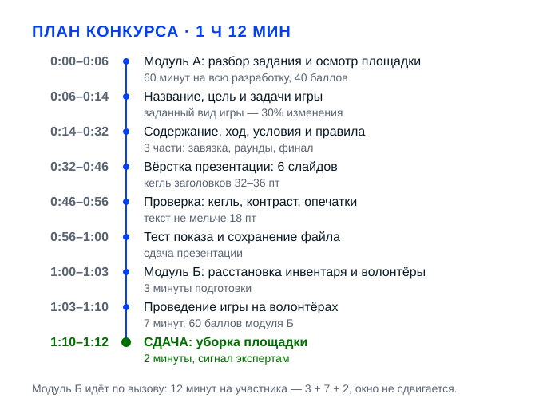
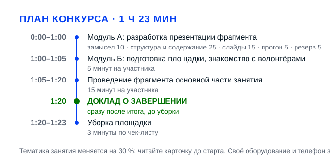
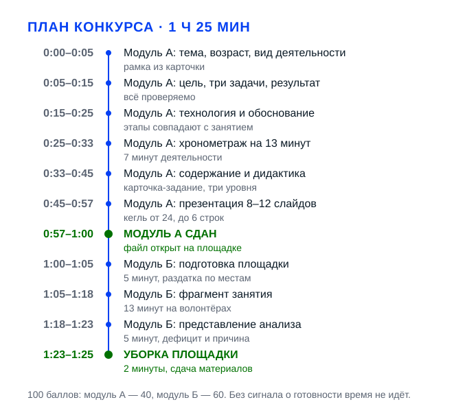

Педагог дополнительного образования (Р)
Задания ниже — официальные файлы «Абилимпикс» (источник: abilympics-russia.ru), разложенные по категориям. Решения написаны по тексту задания, регламенту и критериям оценки; в них указано, что именно проверяет эксперт.
Школьник
14–16 лет, базовый уровень заданияВыдержка из официального конкурсного задания: страницы, относящиеся к категории «Школьник» (стр. 9–11 источника).
Пошаговое решение
У школьников на этой компетенции две части, и обе про одно: придумать игру и провести её так, чтобы детям захотелось играть. Модуль А — шестьдесят минут на разработку: вы получаете заданный вид игры (это и есть 30-процентное изменение задания), придумываете название, цель и задачи, прописываете содержание, ход и условия, а на выходе сдаёте презентацию для проведения игры — за этот модуль дают 40 баллов из 100. Модуль Б — проведение: на каждого участника отводят 12 минут, из них 3 минуты на подготовку площадки, 7 минут самой игры с волонтёрами и 2 минуты на уборку; этот модуль весит 60 баллов, то есть больше половины результата. Общее время всех модулей — 1 час 12 минут. Дальше — по порядку: разбираем задание и оснащаем место, пишем содержание игры, собираем презентацию и тестируем её, готовим площадку и волонтёров, и только в конце сама игра и уборка.

Задача 1. Разобрать задание и оснастить рабочее местоМодуль А · 60 минут · 40 баллов
Первые минуты модуля А решают, будет ли остальное время потрачено по делу. За шестьдесят минут нужно не только придумать игру, но и понять, что именно от вас ждут: в задании задан вид игры, и он меняется от чемпионата к чемпионату — это и есть те самые 30 процентов изменения. Поэтому сначала читаем задание и осматриваем площадку, а уже потом садимся писать содержание.
Действие 1.1. Понять, какой вид игры задан
Шаг 1.1.1
Берём распечатку конкурсного задания, кладём перед собой и выписываем на черновик числа, которые определяют весь день: 60 минут на модуль А, 40 баллов за него, 12 минут на модуль Б у каждого участника (3 минуты подготовки, 7 минут игры и 2 минуты уборки) и 100 баллов в сумме. Рядом переписываем фразу о заданном виде игры — её нужно найти в тексте дословно, потому что именно она меняется на 30 процентов, и именно по ней эксперт будет сверять вашу презентацию. Если задание выдано крупным шрифтом, читаем его в этом виде и ничего не переписываем от руки: так меньше шансов потерять строчку.
Эти числа — не справочная информация, а каркас плана. Из шестидесяти минут примерно двадцать уходит на придумывание, тридцать на оформление презентации и десять на проверку и тестовый показ. Если вы узнаете про 12 минут модуля Б только к концу разработки, презентация получится под пятнадцатиминутную игру, и на волонтёрах вы не успеете дойти до финала. Модуль Б весит 60 баллов из 100, поэтому провал по времени дороже любой шероховатости в слайдах.
На черновике пять чисел и одна цитата про вид игры. Проверить просто: закройте задание и назовите по памяти, сколько минут на разработку, сколько на игру и сколько баллов даёт каждый модуль. Если хотя бы одно число приходится искать заново, выпишите его отдельно и крупно, чтобы оно было перед глазами до конца модуля.
Обычная ошибка — прочитать только первый абзац про подготовку игры и начать придумывать, не дойдя до таблицы с минутами. Дальше участник планирует игру на пятнадцать минут, на волонтёрах обрывает её на середине и теряет баллы за завершённость, а в презентации у него остаётся блок этапов, которого физически не будет.
Эксперт в первые минуты обходит рабочие места и смотрит, лежит ли задание открытым и делаются ли пометки на черновике. По этому видно, работает участник по регламенту или по памяти.
Шаг 1.1.2
Находим в задании вид игры, выписываем его название дословно, а рядом — три-четыре признака, по которым этот вид узнаётся. Если задана дидактическая игра, признаками будут учебная задача, правило и проверяемый результат; если подвижная — движение как основа, водящий и ограниченная площадка; если сюжетно-ролевая — роли, сюжет и игровые действия; если викторина — вопросы, команды и счёт. Свою задумку проверяем по этим признакам, а не по названию: многие игры называют квестом, хотя в них нет ни маршрута, ни последовательных точек.
Вид игры — единственное, что в задании меняется на 30 процентов, и именно он задаёт форму. Игра, придуманная вообще, но не того вида, оценивается как несоответствие заданию, даже если она хорошая: эксперт сверяет признаки, а не ваши намерения. Заодно признаки экономят время — с ними вы не перебираете десять идей, а сразу отбрасываете те, что не подходят.
У вас на черновике название вида игры и три-четыре его признака, и каждый признак можно показать в вашей игре конкретным элементом: правилом, ролью, реквизитом. Если признак не удаётся показать, значит, он не про вашу игру, и его надо либо добавить в содержание, либо честно убрать из списка.
Самая дорогая ошибка — подменить вид: задана сюжетно-ролевая игра, а участник делает викторину с карточками, потому что так проще и быстрее. Внешне всё аккуратно, но эксперт фиксирует несоответствие виду игры, и это тянет за собой и баллы модуля А, и впечатление от проведения.
Эксперт сверяет заявленный вид игры с тем, что реально происходит на площадке, и делает это дважды: по презентации и по проведению. Расхождение между слайдами и игрой он тоже отмечает.
Шаг 1.1.3
Выбираем форму, в которую вид игры уложится за семь минут с группой из пяти-семи волонтёров: короткая завязка, два-три игровых раунда и общий финал. Прикидываем хронометраж на пальцах — минута на объяснение правил, пять минут на раунды, минута на итог — и под этот расчёт подбираем количество заданий: если раунд длится полторы минуты, их не может быть пять. Сразу даём игре рабочее название из трёх-пяти слов, чтобы дальше писать про конкретную вещь, а не про идею в голове.
Семь минут — это не примерно, а отведённое время, и в него входит всё: приветствие, объяснение правил, сама игра и подведение итога. Игра, рассчитанная на пятнадцать минут, обрывается на самом интересном месте, и эксперт видит не замысел, а недоделанную работу. Название нужно рано потому, что оно держит фокус: пока его нет, каждый следующий абзац уезжает в другую сторону.
Проверьте расчёт на бумаге: сложите минуты по этапам и посмотрите, что сумма не больше семи, а лучше — шесть с половиной, чтобы остался запас. Отдельно проверьте, хватит ли раундов на пять-семь человек: если в раунде участвует один, семеро будут смотреть, а это уже не игра.
Типичный промах — придумать игру на класс из двадцати пяти человек, а на площадке увидеть пятерых волонтёров. Второй — не заложить время на объяснение правил и потом рассказывать их на ходу, сбиваясь и теряя темп.
Эксперт мысленно сверяет ваш хронометраж с семью минутами и отмечает, совпал ли он с тем, как игра прошла в реальности. Если на слайде одно, а на площадке другое, это видно сразу.
Действие 1.2. Осмотреть площадку и собрать реквизит
Шаг 1.2.1
Обходим рабочую зону и оцениваем её по числам из задания: площадка около 3000 на 1900 миллиметров, проход между рабочими местами не уже 1,5 метра. Прикидываем, где встанет игровая зона, где будут сидеть или стоять волонтёры и куда вы положите реквизит так, чтобы до него не приходилось тянуться через людей. Отдельно находим место для ноутбука или панели: экран должен быть виден всем участникам и не давать бликов от окна или ламп.
Планировка площадки входит в подготовку и напрямую влияет на темп: если реквизит лежит за спиной волонтёров, вы тратите минуты на обходы, а если экран бликует, правила приходится пересказывать словами. Проход в 1,5 метра — не рекомендация, а требование к рабочим местам, в том числе для участников, передвигающихся на кресле-коляске, и загромождать его нельзя.
Встаньте в центр зоны и обведите взглядом: до любого реквизита не больше двух шагов, экран читается с крайнего места, проход свободен по всей ширине. Проверьте, не попадает ли на экран свет из окна, — для этого достаточно посмотреть на него с того места, где будут волонтёры.
Частая ошибка — поставить стол с реквизитом в проходе, потому что так удобнее. Это и нарушение требований к площадке, и лишний риск: на кресле-коляске человек просто не проедет, а вам придётся менять план на ходу.
Эксперт оценивает, свободна ли зона и видно ли презентацию всем. Захламлённый проход он отмечает как нарушение требований охраны труда. Проход он проверяет шагами, а не на глаз, и отдельно смотрит, можно ли обойти стол с реквизитом.
Шаг 1.2.2
Проходим по площадке и записываем, что реально есть: ноутбук с встроенной веб-камерой, планшет, интерактивная панель или проектор, канцелярия, столы и стулья. Рядом с каждым пунктом ставим плюс, если предмет можно взять в игру, и минус, если он занят или не подходит по размеру. Своё оборудование и готовые разработки приносить нельзя, поэтому весь реквизит собирается только из того, что стоит на площадке, — и придумывать игру надо под этот список, а не наоборот.
Ограничение на собственное оборудование записано в особых указаниях по компетенции, и оно меняет логику: сначала смотрим, чем располагаем, потом придумываем. Если придумать игру с карточками, которых нет, придётся или рисовать их за счёт времени разработки, или менять правила на ходу — и то и другое видно.
Список из восьми-десяти строк, и напротив каждой стоит плюс или минус. Проверьте себя вопросом: могу ли я провести задуманную игру, не выходя из этой комнаты и не прося ничего у эксперта? Если ответ отрицательный, правьте замысел сейчас, пока есть время.
Ошибка — рассчитывать на телефон как на таймер или источник музыки. Сотовый телефон и устройства передачи связи прямо запрещены, и пользование ими на площадке фиксируется; вместо этого берётся обычный таймер или часы на столе.
Эксперт проверяет, чем участник пользуется во время работы, и отдельно отмечает случаи использования запрещённого оборудования. Это не мелочь: нарушение может стоить модуля.
Шаг 1.2.3
Проверяем технику до старта разработки: включаем ноутбук, открываем пустую презентацию, смотрим, читается ли она на панели или проекторе, работает ли переключение слайдов с клавиатуры. Уточняем у эксперта, в каком формате сдаётся файл и куда его сохранять, есть ли общая папка или сетевой диск. Заодно проверяем запасной вариант: если ноутбук выключится, презентация должна открываться с флешки.
Модуль А заканчивается сдачей презентации, и файл, который не открывается на площадке, равен отсутствию работы. Проверка занимает три-четыре минуты в начале, а спасает полчаса в конце, когда времени на пересохранение в другой формат уже нет. Кроме того, вы сразу видите реальный размер шрифта на большом экране — на ноутбуке он кажется крупнее, чем на панели.
Слайд открывается на площадочном экране, текст читается с последнего ряда, переключение работает, файл лежит в двух местах: на рабочем столе и на флешке. Запишите формат, который назвал эксперт, прямо на черновике — через час вы про это забудете.
Классика — сохранить презентацию только в облаке и обнаружить, что на площадке нет доступа к сети. Вторая ошибка — не проверить шрифты: на чужом ноутбуке вместо вашего шрифта подставляется стандартный, и текст на слайдах расползается.
Эксперт следит, чтобы участник до начала работы убедился в исправности оборудования: это прямо прописано в требованиях охраны труда. Неисправность нужно сразу показать, а не пытаться починить самостоятельно.
Задача 2. Разработать содержание игрыМодуль А · 40 баллов
Содержание — та часть модуля А, которую потом видно на площадке: название, цель, задачи, ход по этапам и условия. Здесь важно не написать красиво, а сделать так, чтобы игра держалась сама: у каждого этапа есть задача, время и признак, по которому понятно, что этап закончен. На всё это уходит примерно двадцать минут из шестидесяти — оставшееся время нужно на презентацию и её проверку.
Действие 2.1. Сформулировать название, цель и задачи
Шаг 2.1.1
Формулируем название так, чтобы оно читалось за две секунды и говорило о действии: «Собери маршрут», «Кто в домике», «Три шага до ответа». Проверяем его мысленно на волонтёрах: услышав только название, человек должен понимать, что ему предстоит делать. Если в названии есть термин, который надо объяснять, — меняем: времени на объяснение названия в семи минутах не заложено, а первая фраза на площадке уходит именно на него.
Название — первое, что произносит участник на площадке и что эксперт видит на титульном слайде. Оно задаёт ожидание и работает как анонс: если название не соответствует содержанию, дальше приходится объяснять несоответствие, а это отнимает минуты из семи. Кроме того, ясное название помогает самому участнику не уходить в сторону при разработке.
Проверьте название тремя вопросами: понятно ли оно без пояснений, связано ли с видом игры, не длиннее ли пяти слов. Хороший признак — если после названия можно сразу назвать первое действие игрока. Если после названия вы не можете сразу назвать первое действие игрока, название слишком общее и его надо сузить.
Ошибка — назвать игру абстрактно, например «В мире знаний»: под такое название подходит что угодно, и на площадке приходится долго объяснять правила. Или наоборот — вставить в название непонятное слово, которое волонтёры переспрашивают.
На титульном слайде эксперт ищет название и вид игры в первых строках. Если их нет или они спрятаны в общем тексте, он отмечает это при оценке оформления.
Шаг 2.1.2
Пишем цель одним предложением и обязательно с глаголом действия: не «развитие внимания», а «научить удерживать в памяти три предмета и находить их по описанию». Дальше формулируем две-три задачи, каждая из которых — шаг к цели и проверяется в игре: что участники должны сделать, чтобы цель считалась достигнутой. Формулировки держим короткими, по одной строке, без вводных слов вроде «способствовать» и «обеспечивать».
Цель и задачи — первый пункт алгоритма модуля А, и по ним эксперт смотрит, понимает ли участник, зачем он играет. Если цель сформулирована существительным, её нельзя проверить: непонятно, что должно измениться после игры. Глагольная формулировка сразу задаёт и правила, и финал — вам самим легче писать ход.
Проверка на проверяемость: к каждой задаче можно задать вопрос, как я узнаю, что это получилось. Если ответ есть и он виден в игре — формулировка рабочая. Ещё один тест: цель должна уместиться в одну строку и произноситься на одном дыхании.
Типичная ошибка — написать цель из четырёх общих слов, которая подходит к любой игре: «развитие познавательных способностей». Эксперт не увидит связи между целью и ходом, а участник на площадке не сможет объяснить, зачем эта игра нужна.
Эксперт сверяет цель, задачи и ход: каждая задача должна быть видна в конкретном этапе. Несовпадение он считает методической ошибкой, и это одна из самых заметных потерь в модуле А.
Шаг 2.1.3
Определяем адресата игры: возраст, количество участников и особые условия. Записываем это прямо на слайде словами «для детей 8–10 лет, 6 человек», потому что от возраста зависит и лексика правил, и сложность заданий. Если среди волонтёров может оказаться человек с нарушением слуха или зрения, заранее готовим две формы подачи правил: короткую устную и крупный текст на слайде.
Адресат входит в условия игры, а условия — второй пункт алгоритма модуля А. Игра для второклассников и игра для десятиклассников по одному сценарию не работают: либо слишком просто, либо непонятно. Указание возраста на слайде показывает эксперту, что участник проектирует игру, а не пересказывает придуманное вчера.
На слайде есть возраст, число участников и условие доступности. Проверьте лексику правил: все ли слова из них поймёт восьмилетний ребёнок. Если в правилах есть слово, которое придётся объяснять отдельно, замените его.
Ошибка — не указать адресата вовсе и на площадке подстраивать правила под тех, кто пришёл. Подстройка съедает время и выглядит как импровизация, а в презентации остаётся игра без адресата. Подстройка видна по тому, как вы меняете правила на середине, и это запоминается эксперту лучше, чем сама игра.
Эксперт смотрит, совпадает ли сложность правил с заявленным возрастом и хватит ли заданий на заявленное число игроков. Отдельно он проверяет, назван ли возраст словами, а не намёком вроде «для младших».
Действие 2.2. Прописать содержание и ход игры
Шаг 2.2.1
Разбиваем игру на три части и подписываем время каждой: завязка — до одной минуты, основная часть — около пяти, финал — до одной минуты. В завязке даём игровую ситуацию и объявляем задачу, в основной части проводим два-три раунда с нарастающей сложностью, в финале подводим результат и говорим, что удалось. Части должны отличаться по действию: если в завязке и в основной части участники делают одно и то же, завязка не нужна.
Структура из трёх частей делает игру управляемой за семь минут: у вас есть вход, тело и выход, и в каждом отрезке понятно, что происходит. Без структуры игра растекается, участники не понимают, когда заканчивать, а эксперт видит отсутствие хода, хотя в задании ход требуется отдельным пунктом.
На слайде три блока с минутами, и сумма не больше семи. Проверьте, что у каждого блока есть своя задача: ситуация, действие, итог. Если блоков больше пяти, вы переусложнили — укрупняйте. Сумма по трём блокам должна совпадать с числом, которое записано в условиях игры.
Частая ошибка — пропустить финал и закончить игру на последнем раунде. Тогда нет ни итога, ни обратной связи, волонтёры уходят без ощущения завершённости, а эксперт отмечает отсутствие заключительной части.
Эксперт слушает, есть ли в проведении три части и объявлены ли они. Финал он оценивает отдельно как умение завершать деятельность. Если финал не прозвучал, эксперт спрашивает, чем игра должна была закончиться, и ответ показывает, был ли он в плане.
Шаг 2.2.2
Описываем правила по шагам, в том порядке, в котором их будут выполнять игроки: кто начинает, что делает, что считается ходом, когда ход переходит к другому, как заканчивается раунд. Каждое правило — одно действие и одно условие. Если правило требует исключения, оно пишется отдельной строкой, а не в скобках посреди другого правила, иначе на площадке вы будете объяснять скобки.
Правила — то, что вы проговариваете вслух в первую минуту, и они должны совпадать со слайдом слово в слово. Пять правил по одному действию запоминаются с первого раза, десять правил с оговорками — нет, и вы будете повторять их под недовольные взгляды, теряя темп и минуты игры.
Проверьте правила на одном человеке: прочитайте вслух и попросите пересказать. Если пересказ расходится с вашим замыслом, правило сформулировано двусмысленно. Считайте: правил не больше пяти-шести, каждое — одна строка.
Ошибка — писать правила сплошным абзацем, где в одном предложении и про очерёдность, и про штрафы. На площадке участник сам путается в них, а волонтёры начинают спрашивать, и семь минут уходят на разъяснения.
Эксперт фиксирует, проговорены ли правила до начала игры и совпадают ли они с тем, что написано в презентации. Импровизация в правилах считается недостатком подготовки.
Шаг 2.2.3
Расписываем роли: что делает ведущий, что делают игроки, есть ли водящий, судья или помощник. Для каждой роли пишем одну строку с её действием и одну с ограничением — например, водящий не подсматривает, игроки не выкрикивают ответы, а поднимают карточку. Если в игре есть счёт, сразу определяем, кто его ведёт и где он записывается. Водящего и судью назначаем поимённо, а не вопросом, кто хочет, иначе на площадке начинается перебор желающих.
Игра держится на ролях: пока у каждого есть своё действие, группа работает сама, а ведущий только следит за порядком. Если роли не описаны, участники начинают спорить, кто первый, и вы тратите время на организацию вместо игры. Кроме того, распределение ролей видно эксперту как умение организовывать деятельность.
На слайде есть список ролей с действиями, и на каждую роль приходится хотя бы одно действие в игре. Проверьте на пятерых: всем ли будет чем заняться в первом раунде. Если двое простаивают, добавьте им роль наблюдателя с заданием или объедините в пару.
Типичный промах — оставить всех игроков в одинаковой роли и получить очередь, в которой семеро ждут одного. Второй — не описать ограничения, и тогда водящий начинает подсказывать сам себе. В итоге раунд тянется, а половина группы скучает и перестаёт следить за игрой.
Эксперт смотрит, распределены ли роли в начале и удерживаются ли они по ходу. Если ведущий всё делает сам, организация оценивается ниже. По ролям он видит, продумана игра или держится на одном ведущем, который всё делает сам.
Шаг 2.2.4
Прописываем реквизит с количеством: сколько карточек, сколько фишек, сколько листов, что пишем на каждом. Для каждого предмета указываем, когда он выдаётся и когда собирается, чтобы в игре не было паузы на поиск. Если реквизит делается из бумаги, сразу считаем время: десять карточек формата А5 — это пятнадцать минут работы, и их лучше вырезать до вёрстки презентации, а не после.
Реквизит — самая осязаемая часть подготовки и самый частый источник задержек. Список с количеством превращает сборы в механическую работу и позволяет проверить комплект одним взглядом. Плюс в модуле Б есть всего три минуты на подготовку площадки, и за это время можно только разложить готовое, но не изготовить.
Список реквизита закрыт: количество совпадает с числом игроков и раундов, всё лежит в одном контейнере. Проверьте на себе: возьмите контейнер и проведите игру без поиска — если чего-то не хватает, добавьте в список сейчас.
Ошибка — придумать реквизит, которого на площадке нет, и обнаружить это за три минуты до игры. Вторая — не указать количество: на пятерых приходит семь человек, и кому-то не хватает карточки, а игра уже началась.
Эксперт смотрит, готов ли реквизит к моменту начала и хватает ли его на всех участников. Отсутствие нужного предмета он фиксирует как неготовность площадки.
Действие 2.3. Прописать условия и безопасность
Шаг 2.3.1
Описываем условия игры коротким абзацем: место, время, число участников, необходимые материалы и то, что считается победой. Условия должны совпадать с ходом: если в условиях написано «пять раундов», в хронометраже тоже пять, а не три. Отдельно фиксируем, что игра рассчитана на семь минут и может быть сокращена до шести, если раунды пойдут быстрее. Число раундов пишем цифрой, а не словами, чтобы его нельзя было прочитать двояко.
Условия — третий обязательный пункт в описании содержания, и именно по ним эксперт проверяет, можно ли вашу игру провести в другом месте и с другой группой. Согласованность условий и хода — признак того, что участник продумал игру целиком, а не собрал её из кусков за десять минут.
Сверьте три части между собой: условия, ход и хронометраж. Числа совпадают, число раундов тоже. Проверьте, что в условиях нет ни одного требования, которого нет в реквизите или в правилах. Если числа расходятся, правьте хронометраж, а не условия: условия читают первыми.
Ошибка — написать в условиях игру на пятнадцать минут, а в хронометраже оставить семь, потому что так влезает. Эксперт видит противоречие и снимает баллы за методическую проработку, а участник на площадке не понимает, чего держаться.
Эксперт сверяет условия с регламентом модуля: если заявленное время выходит за отведённые семь минут, это отмечается отдельно. Расхождение в минутах — самая частая причина снижения оценки за методическую проработку.
Шаг 2.3.2
Отдельным пунктом прописываем безопасность: что нельзя делать в игре, где лежат колющие и режущие предметы, куда нельзя бегать. Если игра подвижная — показываем границы площадки, убираем стулья из прохода и объявляем правило «не толкаемся, останавливаемся по хлопку». Если в игре есть ножницы или клей, работа с ними идёт только за столом, и открытые лезвия не оставляем без присмотра.
Требования охраны труда и безопасности жизни и здоровья обучающихся входят в квалификационные требования компетенции, и на площадке они проверяются наравне с методикой. Кроме того, участник, который проговорил правило безопасности до игры, выглядит как педагог, а не как организатор конкурса.
В правилах есть строка про безопасность, и на площадке она произнесена до начала. Проверьте путь, по которому будут двигаться игроки: он свободен, углов и проводов на нём нет, проход не уже 1,5 метра.
Самая частая и самая дорогая ошибка — начать подвижную игру в загромождённой зоне. Последствие — не баллы, а травма, и тогда работа останавливается полностью, а разбирательство идёт по линии главного эксперта.
Эксперт оценивает, объявлены ли правила безопасности и соблюдаются ли они в ходе игры. Нарушения он фиксирует сразу, не дожидаясь конца. Проговорённое правило он проверяет действием: смотрит, остановятся ли игроки по сигналу.
Шаг 2.3.3
Продумываем поведение при сбое: кто-то не понял правило, кто-то выбыл, раунд затянулся. Записываем два-три коротких приёма — повторить правило другими словами, дать наблюдателю роль помощника, сократить один раунд. Эти приёмы не выносятся на слайд, но держатся в голове: они спасают темп тогда, когда план пошёл не так, как вы рассчитывали. Каждый приём — одно действие, а не абзац рассуждений, иначе в нужный момент вы его не вспомните.
Семь минут не оставляют времени на раздумья, и импровизация в стрессе обычно ухудшает ситуацию: участник начинает объяснять быстрее и путанее. Заготовленные приёмы — это заранее принятые решения, которые выполняются механически. Эксперт видит по реакции, готов ли участник к неожиданностям.
У вас в черновике три строки с приёмами, и каждый можно применить за десять секунд. Проверьте, что ни один из них не требует нового реквизита или выхода из зоны. Проверьте мысленно первый сбой: кто-то не понял правило, и вы повторяете его двумя фразами, показывая ход рукой. Если для этого нужно искать слова, приём не заготовлен.
Ошибка — надеяться, что всё пойдёт по плану, и в момент сбоя останавливать игру и начинать объяснять заново. На это уходит минута-полторы, а восстановить темп после остановки почти невозможно. Игра после такой остановки идёт вяло до самого конца, и восстановить интерес уже не получается.
Эксперт наблюдает за поведением участника в нестандартный момент: продолжил ли он игру или потерял нить. Способность удержать процесс оценивается в модуле Б.
Задача 3. Собрать презентацию по требованиям и протестировать еёМодуль А · результат — презентация
Презентация — единственный материальный результат модуля А: 40 баллов ставятся в том числе по тому, что сдано. Требования к ней простые, но проверяются буквально: структура от титула до финала, читаемый кегль, единый вид слайдов, отсутствие лишнего текста и работающий показ. Собирать её лучше после того, как содержание написано на бумаге, иначе полчаса уйдут на перестановку блоков вместо работы над смыслом.
Действие 3.1. Сверстать слайды по структуре
Шаг 3.1.1
Делаем шесть слайдов в жёсткой последовательности: титул с названием, видом игры и адресатом; цель и задачи; правила; ход по этапам с минутами; реквизит и роли; финал и ожидаемый результат. Слайдов больше шести не нужно: за семь минут игры вы не покажете и десятую часть, а лишние страницы в оценивании работают против вас. Каждый слайд получает заголовок в одну строку, и по заголовкам должна читаться вся игра.
Требования к презентации в задании — отдельный пункт алгоритма, и эксперт смотрит именно структуру: есть ли титул, есть ли цель, есть ли ход. Шесть слайдов — оптимум для семиминутной игры: их можно пролистать за минуту, и они не превращаются в конспект. Заголовки работают как оглавление, по которому вы сами не потеряетесь на площадке.
Пролистайте презентацию в режиме показа и прочитайте только заголовки. Если из них складывается связный рассказ про игру — структура верная. Если какой-то заголовок ни о чём, слайд надо переделать или убрать.
Ошибка — сделать пятнадцать слайдов, потому что информации много. На показе вы доходите до седьмого, а остальные остаются неозвученными, и эксперт видит разрыв между заявленным и проведённым. Шесть слайдов закрывают всю игру с запасом, а лишние страницы только увеличивают риск сбоя в показе.
Эксперт открывает презентацию и проверяет наличие обязательных блоков: название, цель, задачи, ход, условия. Отсутствие любого из них — минус в модуле А.
Шаг 3.1.2
На слайде хода рисуем таблицу из трёх-четырёх строк, где напротив каждого этапа стоит его время и действие игроков. Формулировки — глаголами: «ведущий читает описание», «игроки выбирают карточку», «считаем результат». Не пишем на слайде то, что собираетесь говорить словами: слайд держит структуру, речь держит смысл, и на площадке это разделение экономит вам взгляд на экран.
Слайд хода — единственное место, где видно ваш хронометраж, и по нему эксперт сверяет, укладывается ли игра в семь минут. Глагольные формулировки читаются быстрее существительных и позволяют вести игру, поглядывая на экран, а не вспоминая, что вы имели в виду. Разделение слайда и речи экономит и время вёрстки.
В таблице есть все три части игры и их минуты, сумма сходится с семью. Проверьте, что каждую строку можно произнести одной фразой — если строка длиннее, она не читается с экрана. Строка, которую нельзя произнести за одно дыхание, режется на две: на экране она всё равно не читается.
Частая ошибка — перенести на слайд весь сценарий мелким шрифтом. В показе это нечитаемо, а глазами вы всё равно не найдёте нужную строку, потому что их двадцать. Держите на слайде только то, что нужно для ориентира: этап, время, действие, и больше ничего.
Эксперт смотрит, можно ли по слайду хода понять последовательность игры без дополнительных объяснений. Перегруженный текстом слайд он отмечает как недочёт оформления.
Шаг 3.1.3
Собираем слайд реквизита и ролей: перечень предметов с количеством и список ролей с действиями. Реквизит пишем в том виде, в котором он лежит у вас в контейнере, чтобы на площадке можно было сверять один в один. Роли оформляем как две колонки — ведущий и игроки, — потому что так видно, кто чем занят и не перегружен ли ведущий. Если позиций больше десяти, объединяйте их по типу: карточки, фишки, бланки.
Этот слайд работает не на эксперта, а на вас: три минуты подготовки в модуле Б — это как раз время, чтобы сверить контейнер со слайдом. Две колонки ролей сразу показывают дисбаланс: если в колонке ведущего пять действий, а у игроков одно, игра превращается в монолог.
Количество предметов на слайде совпадает с тем, что в контейнере, роли распределены на всех участников. Проверьте, что ни один пункт не требует пояснения вслух. Пройдите по контейнеру и по слайду одновременно: каждая кучка должна называться так же, как строка.
Ошибка — оставить реквизит списком без количества, а роли — общим абзацем. На подготовке вы тратите минуту на выяснение, сколько чего нужно, а это треть отведённого времени. Сверка на площадке превращается в пересчёт по памяти, а время подготовки уже идёт.
Эксперт сверяет заявленный реквизит с тем, что реально расставлено на площадке. Расхождение читается как небрежность подготовки. Он сравнивает число предметов на слайде с числом на столе и отмечает расхождение.
Шаг 3.1.4
Последний слайд делаем про финал: как подводится итог, что говорится участникам, какой результат считается достигнутым. Пишем три строки: объявление результата, короткая рефлексия вопросом и благодарность. Этот слайд показывается в конце игры и одновременно служит шпаргалкой, чтобы не закончить игру на полуслове и не искать нужную фразу в памяти. Финал пишется последним, когда уже понятно, чем игра заканчивается на самом деле.
Финал — самая проваливаемая часть у школьников: игру доводят до последнего раунда и замолкают. Заранее написанный финал превращает завершение в действие: вы смотрите на слайд и произносите три фразы, не изобретая их на ходу. Эксперт оценивает завершённость работы, и это стоит баллов в модуле Б.
На слайде есть результат, вопрос для рефлексии и завершающая фраза. Проверьте, что финал занимает не больше минуты: три фразы — это примерно сорок секунд. Проверьте, что вопрос для рефлексии открытый: на вопрос с ответом да или нет группа отвечает хором и замолкает.
Ошибка — закончить словами «ну вот и всё, спасибо». Игра без итога не считается завершённой, а участники не понимают, выиграли они или просто перестали играть. Три строки на слайде — это ваш текст, а не украшение: произносите их дословно, иначе финал расплывётся.
Эксперт слушает финал и отмечает, объявлен ли результат и есть ли обратная связь игрокам. Если финал прозвучал, он отмечает это отдельно, потому что большинство участников заканчивают игру на последнем раунде и молчат.
Действие 3.2. Оформить слайды так, чтобы их читали
Шаг 3.2.1
Ставим кегль, который читается с последнего ряда: заголовки 32–36 пунктов, основной текст 20–24, подписи не меньше 18. Для ориентира держим в голове требования доступности: конкурсное задание для участников с нарушением зрения печатают кеглем не менее 16–18 пунктов, и слайды не должны быть мельче. На слайде не больше шести строк текста и не больше семи слов в строке.
Читаемость — не вкусовщина: презентация показывается на панели или проекторе, и мелкий текст на них превращается в серое пятно. Крупный кегль и короткие строки дают вам возможность вести игру, не вглядываясь в экран, а эксперту — увидеть структуру с одного взгляда. Ограничение в шесть строк заодно заставляет убрать из слайдов то, что должно звучать в речи.
Отойдите от экрана на три-четыре метра и прочитайте каждый слайд. Если приходится щуриться или наклоняться — увеличивайте кегль. Проверьте, что ни на одном слайде нет текста мельче 18 пунктов. Заголовок должен читаться с десяти шагов, а основной текст — с трёх-четырёх.
Ошибка — уменьшить шрифт, чтобы влез весь сценарий. На площадке такой слайд бесполезен: вы его не читаете, а волонтёры и эксперт не видят в нём ничего, кроме плотного текста. На экране такой слайд выглядит как страница документа, и его просто пролистывают.
Эксперт смотрит на презентацию с того места, где сидит, и оценивает читаемость. Мелкий шрифт он отмечает как несоответствие требованиям к оформлению. Он смотрит на слайд с последнего ряда, а не с первого.
Шаг 3.2.2
Приводим слайды к единому виду: один шрифт, две-три краски, одинаковое положение заголовка и одинаковые отступы. Для этой компетенции достаточно одного акцентного цвета и нейтрального фона: цвет не должен спорить с фотографиями и карточками, если они есть. Иллюстрации ставим только те, которые помогают понять правило, а не украшают пустое место. Фон держим однотонным: узор спорит с текстом и мешает читать таблицу хода.
Единый вид — признак того, что презентация собрана, а не склеена из случайных слайдов. Кроме того, лишние цвета и рамки отвлекают от содержания: на конкурсе эксперту нужно за две минуты понять вашу игру, а не разглядывать оформление. Аккуратный визуальный ряд напрямую влияет на оценку оформления.
Просмотрите слайды подряд, не читая текст: заголовки на одном уровне, отступы одинаковые, красок не больше трёх. Если какой-то слайд выбивается, приведите его к общему виду, это быстрее, чем кажется. Проверяйте на глаз, а не по названиям цветов: на экране оттенки выглядят иначе.
Типичная ошибка — на каждом слайде новый шрифт и своя палитра, потому что слайды собирались в разное время из готовых шаблонов. Выглядит пёстро, и эксперт отмечает небрежность вёрстки. Время на исправление уходит из проверки содержания, а это самый дорогой ресурс модуля.
Эксперт оценивает единообразие оформления и отсутствие визуального шума. Пестрота снижает оценку даже при хорошем содержании. Он открывает два соседних слайда и сравнивает их между собой: разница видна быстрее, чем по одному.
Шаг 3.2.3
Проверяем контраст: тёмный текст на светлом фоне или светлый на тёмном, без серого на сером и без текста поверх картинки. Подписи и цифры делаем крупнее остального, если на них смотрят во время игры. Отдельно проверяем, что цвет не единственный носитель смысла: если красная карточка означает одно, а зелёная другое, добавьте значок или подпись. Толщина линий в таблице — не меньше двух пунктов, иначе на проекторе они исчезают.
Контраст — вопрос доступности, а в этой компетенции доступность встроена в требования к рабочим местам и к материалам. Участник с нарушением зрения или человек, сидящий далеко от экрана, должен видеть то же, что и остальные. Дублирование цвета значком — минимальная мера, которая снимает большую часть проблем.
Посмотрите на слайд при приглушённом свете и с расстояния: текст читается, цифры различимы. Проверьте, понятно ли правило, если убрать цвет: если нет, добавьте подпись. Проверяйте на проекторе, а не на ноутбуке: на большом экране контраст падает заметно.
Ошибка — светлый текст на светлом фоне и тонкие линии на проекторе: на ноутбуке видно, на панели нет. Второй промах — передавать смысл только цветом, и тогда часть игроков не поймёт правило. На панели такой слайд читается как пустой, и правила приходится пересказывать словами.
Эксперт проверяет читаемость и доступность подачи, особенно если на площадке есть участники с особыми потребностями. Неконтрастный текст он отмечает как недочёт.
Действие 3.3. Протестировать презентацию
Шаг 3.3.1
Запускаем показ целиком, с первого слайда до последнего, и проговариваем вслух всё, что собираетесь говорить. Засекаем время: разбор презентации по слайдам должен занимать около минуты, потому что остальное уходит на игру. На этом прогоне отмечаем на черновике, где сбиваетесь, и правим не текст, а порядок слайдов. Если сбились дважды в одном месте, значит, там лишний слайд или слишком плотный текст.
Тест показа — отдельный пункт алгоритма модуля А, и он ловит то, что не видно в редакторе: переключение слайдов, забытые анимации, несовпадение речи и текста. Прогон вслух сразу показывает, где фраза длиннее слайда. Минута на разбор — ваш бюджет: если получается две, игра начнётся позже, чем нужно, и финал придётся сокращать.
Прогон уложился в минуту, все слайды переключаются, ни одна фраза не осталась несказанной. Проверьте, что вы не читаете слайд дословно: если читаете, значит, на нём слишком много текста. Прогон стоит делать стоя, как на площадке: так сразу слышно, где не хватает воздуха.
Ошибка — проверить только первый слайд и закрыть файл. Тогда на площадке выясняется, что в середине презентации потерялась картинка или слайд переключился сам, а времени на исправление уже нет. Запасной вариант — открыть файл заново и пролистать все слайды, это две минуты.
Эксперт видит результат теста косвенно: по тому, как уверенно участник листает слайды на площадке. Сбои в показе он фиксирует как неготовность. Уверенное листание видно по паузам: там, где участник запинается, эксперт смотрит внимательнее.
Шаг 3.3.2
Проверяем файл на совместимость: открываем его на другом устройстве, если есть возможность, и смотрим, не поплыли ли шрифты, отступы и таблицы. Если презентация делалась в облачном редакторе, скачиваем её в формат, который откроется на площадке, и проверяем именно скачанную версию, а не редактор. Файл называем понятно: название игры, категория, ваша фамилия.
Шрифт, который есть у вас, на площадочном ноутбуке может отсутствовать, и тогда весь текст переверстается. Проверка на другом устройстве — единственный способ увидеть это заранее. Понятное имя файла нужно и вам, и эксперту: на сдаче файлов у одной категории их двенадцать, и «презентация финал 2» там не ищется.
Файл открывается на другом устройстве, вёрстка на месте, таблица хода не разъехалась. Имя файла содержит название игры и фамилию, расширение соответствует тому, что просил эксперт. Откройте файл на планшете, если ноутбука под рукой нет: этого достаточно, чтобы увидеть сдвиги.
Ошибка — сдавать файл в формате редактора, который на площадке не открывается. Второй промах — назвать файл так, что его не найти, и потерять на сдаче пять минут из модуля. Проверяйте на том устройстве, на котором будете показывать, а не только на своём.
Эксперт принимает файл и открывает его при вас. Если файл не открывается или вёрстка разъехалась, работа считается сданной с недочётом. Он смотрит на имя файла и на расширение, прежде чем открыть его.
Шаг 3.3.3
Делаем резервную копию на флешке и в почте или облаке, но пользоваться на площадке будете только флешкой: сеть и почта на конкурсе могут быть недоступны. Проверяем, что копия открывается автономно, без интернета, и что на флешке лежит именно последняя версия. Заодно готовим один лист с правилами: если техника откажет, игру можно провести по бумаге.
Резерв — не паранойя, а страховка на случай отказа техники, который прямо прописан в требованиях охраны труда: при неисправности оборудование нужно показать эксперту и не пытаться чинить самому. Бумажная версия правил позволяет продолжить игру без экрана, и это лучше, чем остановиться. При этом пользоваться телефоном как хранилищем нельзя, поэтому флешка остаётся основным носителем.
Копия на флешке открывается на площадочном ноутбуке при отключённой сети, версия совпадает с последней. Лист с правилами лежит в контейнере с реквизитом. Проверьте флешку на том самом ноутбуке, где будет показ: бывает, что порт не читает накопитель.
Ошибка — держать единственную копию на рабочем столе площадочного ноутбука: при сбое или перезагрузке она может исчезнуть. Вторая — принести флешку без проверки и обнаружить, что на ней прошлогодняя версия.
Эксперт проверяет готовность к сдаче и наличие материалов. Участник, у которого есть резервная копия, спокойнее ведёт себя при любых сбоях, и это видно.
Задача 4. Подготовить площадку и волонтёров за три минутыМодуль Б · 3 минуты подготовки
Модуль Б начинается с трёх минут, за которые нужно успеть всё, что раньше занимало полчаса: расставить реквизит, познакомиться с волонтёрами, объяснить им их роль и сообщить экспертам о готовности. Три минуты — это примерно сто восемьдесят секунд, и они уходят неравномерно: на расстановку хватает минуты, на знакомство и инструктаж — ещё полторы, а последние тридцать секунд нужны на проверку и на сигнал экспертам.
Действие 4.1. Расставить инвентарь по схеме
Шаг 4.1.1
Достаём контейнер и раскладываем реквизит по заранее придуманной схеме: то, что нужно в первом раунде, — ближе к ведущему, то, что во втором и третьем, — в стороне, но в пределах двух шагов. Карточки и фишки раскладываем кучками в том порядке, в котором будете их выдавать. Стол ведущего ставим так, чтобы экран был виден игрокам, а вы видели всех игроков.
В модуле Б вы работаете на время, и любая задержка на поиск предмета съедает его из семи минут игры. Заранее продуманная схема позволяет раскладываться механически, без раздумий. Кроме того, порядок на площадке входит в оценку: эксперт видит, умеет ли участник организовать пространство.
Разложили за минуту-полторы, всё лежит на своих местах, до любого предмета не больше двух шагов. Проверьте главное: сможете ли вы провести первый раунд, не вставая с места. Отметьте, где лежит лист с правилами: он нужен в первую минуту, а не в конце игры.
Ошибка — вывалить всё из контейнера на стол и разбираться по ходу игры. Второй промах — положить реквизит второго раунда сверху, и тогда на переходе вы тратите тридцать секунд на распутывание. Раскладка должна занимать не больше полутора минут, иначе вы входите в игру без запаса.
Эксперт наблюдает за подготовкой с первой секунды и отмечает, насколько быстро и организованно расставлена площадка. Он смотрит и на то, сколько предметов осталось в контейнере: лишнее на столе мешает работать.
Шаг 4.1.2
Проверяем места для волонтёров: стулья расставлены так, чтобы все видели экран и друг друга, между ними свободный проход не меньше метра, а если кто-то на кресле-коляске — не меньше 1,5 метра до стены. Убираем из зоны всё лишнее: сумки, провода, стулья, о которые можно споткнуться. Если игра подвижная, обозначаем границы лентой или двумя стульями и показываем их волонтёрам.
Расположение участников определяет, будет ли игра управляемой: в тесном кругу люди мешают друг другу, а в широком не слышат ведущего. Свободный проход — требование к рабочим местам, в том числе для участников с нарушением опорно-двигательного аппарата. Обозначенные границы нужны и для безопасности, и для темпа: игроки не разбегаются по всей площадке.
Пройдите по зоне: ничто не мешает, стулья не задевают друг друга, экран виден с каждого места. Проверьте ширину прохода рулеткой или на глаз по плитке — она должна быть не меньше 1,5 метра в самом узком месте.
Частая ошибка — поставить стулья плотным кругом, чтобы было уютнее: в подвижной игре это прямая дорога к тому, что кто-то заденет соседа. Вторая — оставить провода поперёк зоны. Проверьте зону на высоте колена: именно там оказываются сумки и рюкзаки, о которые спотыкаются.
Эксперт проверяет расстановку на безопасность и на удобство наблюдения. Загромождённый проход и провода на полу он фиксирует как нарушение. Проход он оценивает вместе с расстановкой стульев, а не отдельно от неё.
Шаг 4.1.3
Проверяем технику в боевом режиме: открываем презентацию, ставим её на первый слайд, гасим лишние окна и уведомления, отключаем звук на ноутбуке, если он не нужен. Кладём рядом лист с правилами и таймер, ставим его на ноль. Если презентация открывается с флешки, оставляем флешку в порту, но проверяем, что идёт показ, а не запрос пароля. Ставим таймер так, чтобы он был виден вам и не бросался в глаза игрокам.
Уведомление, выскочившее посреди игры, сбивает и вас, и волонтёров, а на эксперта производит впечатление небрежности. Проверка техники занимает двадцать секунд и снимает половину рисков модуля Б. Таймер нужен потому, что телефон использовать нельзя, а следить за временем придётся вам самим.
Первый слайд на экране, уведомления выключены, звук в нужном состоянии, таймер сброшен. Проверьте, что переключение слайдов работает от клавиатуры: на площадке может не быть мыши под рукой. Проверьте, что курсор не висит посреди экрана и не закрывает заголовок слайда.
Ошибка — открыть презентацию в редакторе, а не в режиме показа: тогда на экране видна панель и следующий слайд, и это выглядит непрофессионально. Вторая — забыть про уведомления, и посреди игры на экран падает сообщение.
Эксперт видит, в каком виде открыта презентация, и отмечает техническую готовность площадки. Он смотрит на экран в момент начала: первый слайд, чистое поле, ни одного лишнего окна — это признак того, что участник готовил показ заранее.
Действие 4.2. Познакомиться с волонтёрами и подготовить их
Шаг 4.2.1
Подходим к волонтёрам, здороваемся, называем себя и спрашиваем имена — по именам обращаться проще, чем ко всем сразу. Сразу уточняем два момента: сколько человек играет и есть ли среди них те, кому нужны особые условия, например крупный текст или место ближе к экрану. Ответы запоминаем, а не записываем: три минуты не то время, когда удобно вести протокол.
Знакомство — первое действие алгоритма модуля Б и первое, что видит эксперт: умение установить контакт входит в коммуникативные требования компетенции. Обращение по имени снижает напряжение у волонтёров, а они пришли играть в чужую игру и слегка насторожены. Уточнение про особые условия — не формальность: если в группе есть человек с нарушением зрения, правила придётся проговаривать подробнее.
Вы знаете имена всех волонтёров и число игроков, отметили, кому нужны особые условия. Проверьте себя: сможете ли вы обратиться к каждому по имени в первом раунде, не заглядывая в записи. Хватит одного круга имён, повторённого вслух: после второго круга вы их уже не забудете.
Ошибка — начать сразу с правил, пропустив знакомство: волонтёры не понимают, кто вы и что будет, и первые минуты уходят на их переглядывания. Вторая — обращаться ко всем одинаково, и тогда никто не чувствует ответственности за свой ход.
Эксперт оценивает, установлен ли контакт и представлен ли участник. Формальное «здравствуйте, начинаем» он отмечает как слабую коммуникацию. Он отмечает, назвал ли участник себя и как именно это сделал.
Шаг 4.2.2
Коротко объясняем волонтёрам, что будет: как называется игра, сколько она идёт, что от них требуется. Дальше распределяем роли, если они есть, и просим повторить одну фразу своими словами — это самый быстрый способ проверить, что поняли. На объяснение уходит не больше минуты: подробные правила проговариваются ещё раз уже в игре, перед первым раундом.
Подготовка волонтёров — отдельный пункт алгоритма, и он существует потому, что неподготовленная группа тратит игровое время на выяснение. Просьба повторить своими словами ловит непонимание сразу, пока его можно исправить одной фразой. Минута на инструктаж — часть трёхминутного бюджета подготовки, и её нельзя занимать целиком.
Волонтёры могут назвать игру и сказать, что им делать в первом раунде. Проверьте по лицам: если кто-то отводит глаза, спросите именно его — лучше потратить десять секунд, чем потерять раунд. Задайте этот вопрос одному человеку, а не всей группе: так слышно, понял ли он сам.
Ошибка — рассказывать правила волонтёрам так же подробно, как будете рассказывать в игре, и потратить на это все три минуты. Тогда площадка останется неготовой, а эксперты не получат сигнала о готовности.
Эксперт слушает инструктаж и смотрит, поняли ли волонтёры задачу. Если через минуту они всё ещё переспрашивают, это видно и оценивается как слабая подготовка.
Шаг 4.2.3
Проговариваем с волонтёрами правила безопасности: не толкаться, останавливаться по хлопку, не трогать реквизит без разрешения, не выходить за обозначенные границы. Показываем рукой границы и место, где лежит реквизит. Если в игре есть предметы с острыми краями, показываем, как их передавать — за край, не остриём вперёд. Если в игре есть вода или сыпучие материалы, показываем, где их можно ставить, чтобы не залить реквизит.
Требования безопасности жизни и здоровья обучающихся прямо входят в квалификационные требования, и на площадке они проверяются наравне с содержанием. Проговорённое правило работает лучше написанного: волонтёры слышат его от вас и знают, что за ним следят. Кроме того, остановка по хлопку — это ваш инструмент управления темпом, и он должен быть введён до игры.
Волонтёры знают сигнал остановки и показывают границы площадки. Проверьте сигнал сразу: хлопните и посмотрите, остановятся ли они. Если нет — повторите правило и хлопните ещё раз. Повторите сигнал дважды, чтобы он запомнился, и проверьте реакцию ещё раз.
Ошибка — считать, что правила безопасности очевидны, и не проговаривать их: в подвижной игре это заканчивается столкновением или падением. Последствие — остановка модуля и разбирательство, а не просто снятые баллы.
Эксперт фиксирует, объявлены ли правила безопасности до начала игры. Если они не прозвучали, это отражается в оценке модуля Б. Он слушает, названы ли границы площадки словами, а не только показаны рукой.
Действие 4.3. Сообщить экспертам о готовности и назвать игру
Шаг 4.3.1
Поднимаем руку или подходим к эксперту и говорим коротко: готова к проведению игры, площадка подготовлена. Не начинаем игру, пока эксперт не кивнул: сигнал о готовности — отдельное действие в алгоритме, и он же запускает отсчёт семи минут. Если эксперт занят, ждём рядом, но не начинаем без сигнала. Сигнал лучше подать стоя и с поднятой рукой: так его видно из любого угла площадки и не приходится переспрашивать.
Момент начала фиксируется экспертом, и от него считается время. Если начать раньше сигнала, семь минут пойдут с другого момента, и вы можете не уложиться в регламент. Кроме того, объявленная готовность — то, что отличает организованное выступление от самодеятельности.
Сигнал подан, эксперт подтвердил начало. Проверьте, что вы не начали говорить волонтёрам правила до этого момента: они должны слушать вас в отведённое время. Если эксперт кивнул молча, этого достаточно: повторять сигнал и уточнять не нужно.
Ошибка — начать игру, не сообщив о готовности: эксперт может не успеть подготовить бланк, а время начнут считать с опозданием. Вторая — подать сигнал и сразу начать, не дождавшись подтверждения. Отсчёт времени начинается с кивка, а не с вашей первой фразы, и разница может стоить полминуты.
Эксперт отмечает время начала по вашему сигналу и следит, чтобы игра стартовала после него. Преждевременный старт он фиксирует как нарушение регламента.
Шаг 4.3.2
Называем игру и её цель одной-двумя фразами, обращаясь к волонтёрам, а не к экспертам: игра называется «Три шага до ответа», её цель — научиться удерживать в памяти три предмета. Формулировку берём с титульного слайда дословно, чтобы не расходиться с презентацией. После этого сразу переходим к правилам, не делая паузы на объяснение вида игры. На это уходит около двадцати секунд, и пауза после цели не нужна.
Название и цель — четвёртый пункт алгоритма модуля Б, и он оценивается отдельно: эксперт слушает, умеет ли участник представить свою работу. Дословное совпадение с презентацией показывает, что игра продумана, а не сочинена на месте. Обращение к волонтёрам, а не к экспертам, задаёт верную рамку: вы работаете с детьми, а не отчитываетесь.
Название и цель произнесены, совпадают со слайдом, заняли не больше двадцати секунд. Проверьте, что после них вы сразу сказали первую фразу правил, а не стали объяснять, почему выбрали такую игру. Цель произносится словами слайда, а не пересказом своими словами.
Ошибка — начать с рассказа о том, как создавалась игра: время уходит, а волонтёры так и не понимают, во что играют. Вторая — назвать игру иначе, чем на слайде, и вызвать у эксперта вопрос, какая версия верная.
Эксперт слушает представление игры и сверяет цель с той, что указана в презентации. Расхождение он отмечает при оценке. Он сверяет формулировку с титульным слайдом, который открыт на экране в этот момент.
Шаг 4.3.3
Последние секунды подготовки используем на проверку: руки свободны, в них нет лишнего, лист с правилами на месте, таймер запущен. Одним взглядом проверяем площадку: реквизит разложен, волонтёры на местах, экран на первом слайде. Только после этого начинаем говорить. Проверяем и себя: спина прямая, ноги на полу, руки не в карманах. Это тридцать секунд, за которые вы переходите из режима подготовки в режим работы с группой, и группа видит по позе, что игра начинается.
Спокойное начало задаёт тон всей игре: если участник суетится, волонтёры тоже начинают суетиться. Тридцать секунд на проверку ловят то, что забывается в спешке: лист с правилами, таймер, свободные руки. Это же время нужно, чтобы голос зазвучал ровно, а не сбивчиво.
Таймер идёт, руки свободны, экран на первом слайде, все на местах. Если что-то не так — исправляйте сейчас, в игре на это не будет времени. Проверьте, что лист с правилами лежит на столе, а не в руке: он понадобится через минуту.
Ошибка — начать игру с листом в одной руке и карточками в другой, а через минуту обнаружить, что таймер не запущен. Вторая — начать говорить, не проверив, все ли волонтёры на месте. Лист в руке закрывает лицо и мешает жестикулировать, а жесты в игре работают лучше слов.
Эксперт видит, насколько спокойно и уверенно начато проведение. Суетливые первые секунды он отмечает как волнение, которое мешает работе. Он смотрит на первые пять секунд: по ним видно, готов участник или ещё собирается.
Задача 5. Провести игру за семь минут и убрать площадку за двеМодуль Б · 60 баллов · 7 + 2 минуты
Здесь набирается большая часть результата: 60 баллов из 100 ставятся за проведение. Семь минут игры делятся на вход, тело и финал, и в каждом отрезке эксперт смотрит на своё: как объяснены правила, как удержан темп, как распределены роли и как игра завершена. После сигнала об окончании остаются две минуты на уборку — и они тоже входят в 12 минут, отведённых на участника.
Действие 5.1. Проговорить правила и включить группу
Шаг 5.1.1
Проговариваем правила по одному, каждый раз проверяя, слушают ли: после каждого правила задаём короткий вопрос, всем ли понятно, и ждём кивка или вопроса. Правила говорим в том же порядке, что на слайде, и не добавляем новых по ходу. Если правило сложное, показываем его на первом ходе — руками, с карточкой, с фишкой. Пятое правило, произнесённое скороговоркой, равносильно непроизнесённому, и на площадке это видно.
Правила — обязательный пункт алгоритма модуля Б, и они должны быть проговорены до начала игры, а не в процессе. Проговаривание по одному с проверкой понимания занимает около минуты и снимает половину проблем в раундах. Показ на первом ходе работает лучше объяснения: люди запоминают действие, а не формулировку.
Все правила произнесены, ни одно не пропущено, волонтёры могут повторить первое. Проверьте по времени: объяснение не превысило минуты, иначе вы уже теряете раунд. Если после второго правила кто-то переспрашивает, повторите его один раз и идите дальше, не разбирая каждое слово.
Ошибка — проговорить правила скороговоркой за двадцать секунд и начать игру: половина группы не поняла, и первый раунд уходит на переспрашивание. Вторая — добавлять правило посреди раунда, когда что-то пошло не так.
Эксперт слушает, проговорены ли правила полностью и понятно. Правило, введённое по ходу игры, он отмечает как нарушение методики. Он отмечает, сколько правил прозвучало до первого хода и в каком порядке.
Шаг 5.1.2
Создаём игровую ситуацию: короткая завязка на две-три фразы, в которой есть задача и есть интерес. Не объясняем мораль и не рассказываем предысторию — только то, что нужно, чтобы захотеть играть. Если игра командная, сразу делим на команды и даём тридцать секунд на название: это простой приём, который включает группу в работу. Если группа вяло реагирует, добавьте один вопрос по ситуации: он снимает скованность лучше, чем призыв не стесняться.
Завязка переводит слушателей в игроков, и без неё первый раунд начинается вяло: люди ещё не поняли, зачем им это. Две-три фразы — оптимум, на большее в семиминутной игре нет времени. Деление на команды с названием даёт каждому свою принадлежность и снимает скованность первого хода.
После завязки группа включена: есть вопросы по игре, а не по расписанию. Проверьте, что на завязку ушло меньше тридцати секунд. Показатель включённости простой: в первом раунде участвуют все, а не двое активных. Если кто-то отводит глаза, окликните его по имени, но не заставляйте выходить в центр.
Ошибка — растянуть завязку на минуту и рассказать историю, которую никто не просил. Второй промах — не разделить на команды и получить группу, где каждый играет сам за себя и мешает остальным. Название команды придумывается за десять секунд, на это не нужно тратить больше.
Эксперт смотрит, удалось ли включить группу и не потеряно ли время на вступление. Затянутая завязка съедает раунд. Он смотрит на лица волонтёров в первые полминуты: поворот корпуса к вам — признак включённости.
Шаг 5.1.3
Объявляем первый раунд и запускаем его без паузы: «Первый раунд, поехали». Дальше ведём голосом — команды короткие, по два-три слова, без объяснений. Если кто-то ошибся в первом ходе, не останавливаем игру, а поправляем одной фразой на ходу. Первый раунд проводим в медленном темпе, но без остановок: даём группе увидеть механику, а не выучить правила. Если кто-то ошибся, поправляем на следующем ходе, а не сразу, и так группа не боится ошибаться, а темп держится с первой минуты.
Темп — это главное, что отличает проведение от пересказа правил. Паузы между раундами накапливаются: три паузы по двадцать секунд — это минута, шестая часть игры. Поправка на ходу сохраняет и темп, и достоинство игрока: остановка и разбор ошибки в первом раунде сбивают группу.
Первый раунд пошёл в течение пяти секунд после объявления, команды звучали коротко. Проверьте, что ни разу не пришлось останавливать игру для объяснения. Проверьте, что вы не сказали больше двух фраз подряд: длинная реплика в первом раунде читается как лекция.
Ошибка — останавливать игру после каждой ошибки и объяснять, как надо. Волонтёры начинают бояться ошибиться, темп падает, а игра превращается в разбор. После двух остановок группа начинает ждать разбора, а не играть, и второй раунд идёт вдвое медленнее.
Эксперт оценивает темп и умение вести группу. Частые остановки и длинные объяснения он отмечает как слабое владение методикой. Он отмечает, говорит участник командами или абзацами, и делает вывод о темпе.
Действие 5.2. Провести раунды и удержать счёт
Шаг 5.2.1
Ведём раунды по плану: первый — простой, чтобы все поняли механику, второй — сложнее на одну правило, третий — с элементом соревнования, если время осталось. Сложность наращиваем по одному признаку за раз: если во втором раунде появилось и новое правило, и новый реквизит, группа запутается. На каждый раунд держим ориентир по минутам и сверяемся с таймером на столе, а не в телефоне.
Нарастание сложности удерживает интерес: простой первый раунд даёт уверенность, а второй добавляет задачу. Если усложнить всё сразу, группа теряет механику и игра рассыпается. Ориентир по минутам нужен потому, что в игре время идёт быстрее: раунд, который казался полутораминутным, легко занимает три.
К третьему раунду группа играет без напоминаний правил, таймер показывает, что вы в графике. Если после первого раунда пришлось объяснять механику заново, раунд был слишком сложным. Если к третьему раунду кто-то всё ещё спрашивает, повторите механику один раз и продолжайте без разбора.
Ошибка — сделать все раунды одинаковыми: интерес падает, и второй раунд проходит вяло. Или наоборот — усложнить так, что группа перестаёт понимать, что делать, и вы теряете две минуты. Сложность наращивается одним шагом, а не скачком, иначе группа теряет механику.
Эксперт смотрит на динамику: становится ли игра сложнее и остаётся ли она понятной. Резкие перепады он отмечает как методическую ошибку. Он смотрит на второй раунд: там видно, понял ли участник принцип усложнения.
Шаг 5.2.2
Считаем результат так, чтобы счёт был виден всем: на доске, на листе или на экране, крупными цифрами. Объявляем счёт после каждого раунда одной фразой, без комментариев. Если счёт ведут команды, проверяем, чтобы правила подсчёта были объявлены заранее, а не придуманы в момент объявления результата. Цифры пишем крупно, не мельче восьми сантиметров: тогда счёт виден с последнего места и не требует переспрашивания.
Видимый счёт держит внимание и делает игру честной: участники понимают, за что идёт борьба. Объявление после каждого раунда даёт ритм и позволяет вам управлять темпом. Правила подсчёта, объявленные заранее, снимают споры, а спор в игре — это потерянные минуты.
Счёт виден с любого места, объявлен после каждого раунда, правила подсчёта совпадают с теми, что были проговорены. Проверьте, что цифры читаются с последнего ряда. Проверьте, что счёт объявляется одной фразой и без пояснений, почему он получился таким.
Ошибка — держать счёт в голове и объявить его только в конце: группа не понимает, кто ведёт, и интерес падает. Вторая — менять правила подсчёта по ходу, и тогда результат выглядит несправедливым. Счёт, который ведётся в голове, обычно теряется на втором раунде, и восстановить его уже нельзя.
Эксперт проверяет, ведётся ли счёт и объявляется ли он понятно. Путаница в подсчёте снижает оценку организации. Он проверяет, совпадает ли объявленный счёт с тем, что записано на листе или на доске.
Шаг 5.2.3
Держим дисциплину мягко и конкретно: если кто-то выкрикивает, называем правило, а не человека — у нас ответ по поднятой руке. Если группа разговорилась, используем заранее введённый сигнал остановки и продолжаем через три секунды. Никаких длинных нотаций: они стоят темпа и не работают. Напоминание произносим ровным голосом, глядя на группу, а не в пол. Если шум не прекращается, останавливаем игру на пять секунд и продолжаем с того же места, без разбора.
Управление группой — часть коммуникативных требований компетенции, и на площадке оно видно лучше всего. Конкретное напоминание правила работает быстрее, чем замечание: оно не задевает человека и сразу возвращает игру в рамки. Сигнал остановки, введённый на подготовке, экономит секунды и не разрушает атмосферу.
После напоминания группа возвращается к правилам без обиды и без паузы. Проверьте, что вы не повышаете голос: если приходится, значит, сигнал не работает, и его надо повторить. Проверьте, что после напоминания раунд продолжился с той же точки, а не начался заново.
Ошибка — начать воспитывать: мы же договаривались, сколько можно. На это уходит минута, настроение группы падает, а игра останавливается. Вторая — не реагировать вовсе, и тогда правила перестают действовать.
Эксперт оценивает, удерживается ли порядок и не переходит ли управление в нотации. Спокойное управление он отмечает как сильную сторону. Он смотрит, не переходит ли участник на повышенный тон, и отмечает это отдельно.
Шаг 5.2.4
Работаем с теми, кто выпал: если кто-то не участвует, даём ему роль — помощник ведущего, судья, хранитель времени. Роль должна быть настоящей: с заданием и с результатом, который объявляется. Если участник стесняется, не вытаскиваем его в центр, а подключаем через маленькое поручение. Поручение даём коротко: побудь хранителем времени, скажи, когда останется минута. Такой человек занят делом и не выпадает из игры до самого финала.
Включённость группы отличает игру от выступления перед зрителями, и эксперт видит её сразу. Настоящая роль возвращает человека в игру без давления и без остановки на разговор. Мелкое поручение снимает стеснение лучше, чем приглашение к доске. Включённость видна по глазам, а не по тому, сколько человек вызвалось.
К концу второго раунда заняты все: у каждого есть действие. Проверьте, что выпавший участник действительно что-то делает, а не просто сидит с карточкой. Проверьте, что у выпавшего участника есть результат, который он объявляет вслух: время, счёт или порядок ходов.
Ошибка — обращаться только к активным, потому что с ними проще. В результате половина группы наблюдает, и игра теряет смысл, а эксперт отмечает неравное вовлечение. Если половина группы наблюдает, эксперт видит игру для двоих, а не для всех участников.
Эксперт смотрит, вовлечены ли все волонтёры. Работа только с активными участниками оценивается ниже. Он запоминает, кто из волонтёров ни разу не получил задания, и в конце спрашивает, почему так вышло.
Действие 5.3. Завершить игру и сообщить экспертам
Шаг 5.3.1
За минуту до конца начинаем свёртывать: объявляем последний раунд, затем подводим итог — называем результат, отмечаем одно-два удачных действия игроков. Финал строим по слайду: результат, короткий вопрос для рефлексии, благодарность. На всё — не больше минуты, иначе вы выходите за семь. Объявляем финал словами: последний раунд, считаем результат. Эта фраза даёт группе сигнал, что игра не оборвалась, и снимает вопросы после окончания.
Завершённость — отдельный критерий: игра без финала читается как недоделанная. Объявленный результат и обратная связь показывают, что участник умеет вести группу до конца, а не только запускать активность. Вопрос для рефлексии делает финал педагогическим, а не просто вежливым.
Результат объявлен, вопрос задан, благодарность прозвучала, таймер показывает не больше семи минут. Проверьте, что вы не начали новый раунд за минуту до конца. Проверьте, что вы не начали новый раунд за минуту до конца и что финал прозвучал полностью.
Ошибка — увлечься и начать четвёртый раунд, когда время вышло: эксперт остановит вас, а финал останется несказанным. Вторая — закончить без итога, просто сказав «молодцы». Оборванная игра запоминается хуже, чем сыгранная до конца, и это сказывается на общей оценке.
Эксперт слушает финал и отмечает, подведён ли итог. Отсутствие завершения — заметная потеря баллов в модуле Б. Он смотрит на последние сорок секунд: объявлен ли результат и сказано ли, что было хорошо.
Шаг 5.3.2
Сообщаем экспертам о завершении выполнения задания: поднимаем руку или подходим и говорим, что игра проведена. Это отдельное действие алгоритма, и оно фиксирует время окончания. После сигнала не продолжаем разговаривать с волонтёрами об игре: две минуты уборки идут уже по регламенту. Сигнал подаём так же, как в начале: стоя, с поднятой рукой, одной фразой. Пока эксперт не отметил окончание, из зоны не выходим.
Время модуля Б считается по сигналам, и незакрытое задание выглядит как превышение регламента. Кроме того, сигнал об окончании — часть коммуникации с экспертами, которая оценивается. Разговоры после сигнала съедают время уборки, за которую тоже дают баллы.
Сигнал подан, эксперт подтвердил, таймер остановлен. Проверьте, что вы не начали уборку до сигнала: порядок обратный — сначала сообщение, потом уборка. Проверьте, что сигнал прозвучал до того, как вы взяли в руки контейнер: иначе уборка считается начатой без сообщения.
Ошибка — молча начать убирать реквизит, не сообщив об окончании: эксперт не понимает, закончилась игра или прервалась. Вторая — продолжать игру после сигнала, и тогда время выходит за отведённое. Молчание считывается как непонимание алгоритма, а не как скромность участника.
Эксперт фиксирует время окончания по вашему сигналу. Молчаливый уход с площадки он отмечает как нарушение алгоритма. Он отмечает время окончания и сверяет его с отведёнными семью минутами на игру.
Шаг 5.3.3
Отвечаем на короткие вопросы эксперта сразу после сигнала: что было целью, почему выбраны такие правила, что бы изменили. Отвечаем в двух-трёх фразах, без оправданий и без пересказа всей презентации. Если вопросов нет, не начинаем объяснять сами. Если замечание прозвучало, отвечаем коротко: поняла, учту. Спорить с экспертом на площадке бессмысленно и дорого: время уходит, а впечатление портится, и разбор ошибок уместен после конкурса.
Вопросы после проведения — обычная практика на площадке, и по ответам видно, понимает ли участник свою же игру. Короткий ответ показывает владение материалом, длинный — неуверенность и попытку закрыть пробелы словами. Время на ответы не бесконечное: оно идёт за счёт уборки.
На каждый вопрос дан ответ в две-три фразы, по существу. Проверьте, что вы не начали спорить с замечанием: принимаете к сведению и идёте убирать. Проверьте, что ответы не длиннее трёх фраз и не превращаются в пересказ презентации.
Ошибка — оправдываться и объяснять, что всё было по плану, просто волонтёры не поняли. Это выглядит как неумение принимать обратную связь, и эксперт это отмечает. Длинное объяснение читается как попытка оправдаться, а не как понимание своей работы.
Эксперт задаёт один-два вопроса именно для того, чтобы услышать, как участник понимает свою работу. Ответ по существу он отмечает отдельно. Он слушает, отвечает участник по существу или уходит в сторону от вопроса.
Действие 5.4. Убрать площадку за две минуты
Шаг 5.4.1
Убираем реквизит в том порядке, в котором раскладывали: сначала мелочь — карточки, фишки, — потом крупное. Складываем всё в тот же контейнер, в котором принесли, и проверяем, что на столах и на полу ничего не осталось. Две минуты — это примерно столько, сколько нужно на один проход по зоне, поэтому движения должны быть заученными. Контейнер ставим у выхода, чтобы не нести его через игровую зону и не задевать стулья.
Уборка — последний пункт алгоритма модуля Б, и на неё выделено 2 минуты из 12. Порядок «сначала мелочь» экономит время: мелочь рассыпается и задерживает, а крупное убирается одним движением. Чистая площадка — это и оценка, и условие для следующего участника.
Контейнер закрыт, столы пустые, пол чистый, ничего не осталось под стульями. Проверьте зону взглядом от входа: то, что видно от двери, видят и эксперты. Проверьте углы столов и место под стульями: там остаются фишки и обрезки бумаги.
Ошибка — убирать крупное первым и оставить рассыпанные карточки, на которые потом наступают. Вторая — оставить мусор на потом, и тогда баллы за уборку снимаются, а следующий участник начинает на вашей площадке.
Эксперт смотрит на площадку после уборки: пустые столы, свободный проход, ничего на полу. Беспорядок он фиксирует в оценке. Он проходит по зоне после уборки и смотрит на пол, а не только на столы.
Шаг 5.4.2
Возвращаем на место то, что двигали: стулья, столы, подставку под ноутбук — по исходной расстановке, которую вы запомнили при осмотре. Если сдвинули стол, ставим его так, чтобы проход снова был не меньше 1,5 метра. Технику выключаем аккуратно: закрываем презентацию, завершаем работу, но не выдёргиваем шнур из розетки. Стулья ставим по той же линии, что была до начала: это видно по следам на полу или по меткам на линолеуме.
Возврат мебели на место — это требование к площадке и забота о следующем участнике: он должен получить её в том же виде, в каком получили вы. Проход в 1,5 метра восстанавливается в первую очередь, потому что именно его чаще всего перекрывают. Аккуратное выключение техники прописано в требованиях охраны труда: обесточивать резким движением нельзя.
Мебель на исходных местах, проход свободен, техника выключена в штатном порядке. Проверьте, что ноутбук не остался включённым на слайде. Проверьте, что подставка под ноутбук вернулась на место и не осталась в игровой зоне.
Ошибка — оставить стол поперёк прохода, потому что так стояло удобнее. Вторая — выдернуть шнур или захлопнуть крышку работающего ноутбука: это нарушение правил эксплуатации оборудования. После вас в эту зону входит следующий участник, и ему придётся начинать с перестановки.
Эксперт проверяет, восстановлена ли площадка. Сдвинутая мебель и суженный проход он отмечает как нарушение. Он сверяет расстановку с той, что была до вашего выхода: сдвинутые столы видны сразу.
Шаг 5.4.3
Сдаём то, что брали: если что-то одолжили у экспертов или на площадке, возвращаем и говорим об этом. Если что-то сломалось или испортилось, сообщаем сразу, до ухода. После этого освобождаем зону и не возвращаемся к обсуждению игры, пока не пригласят. Если вы что-то передвинули в зоне общего пользования, возвращаем на место до того, как сообщите о завершении. Порядок такой: сдать инвентарь, сказать о проблемах, освободить зону.
Честный отчёт о состоянии инвентаря — часть организационных навыков и коммуникации. Если испорченный предмет обнаружат после вас, разбирательство будет дольше, чем одна фраза сразу. Освобождённая зона нужна следующему участнику: он входит в те же три минуты подготовки.
Всё взятое возвращено, о проблемах сказано, зона свободна. Проверьте, что в контейнере только ваши вещи, а чужих предметов нет. Проверьте, что в зоне не осталось ваших вещей: ни листа с правилами, ни флешки, ни таймера.
Ошибка — уйти молча, оставив сломанную карточку или потерянную фишку. Это фиксируется и переносится в личное дело участника, а баллы за организацию снижаются. Потерянная фишка обнаруживается при следующем участнике, и вопрос адресуют вам.
Эксперт отмечает, как участник завершает работу: сдал ли инвентарь, сказал ли о проблемах, освободил ли зону. Он отмечает, сказал ли участник о проблемах сам, без вопроса со стороны эксперта.
Студент
учащиеся колледжей и техникумовВыдержка из официального конкурсного задания: страницы, относящиеся к категории «Студент» (стр. 9–12 источника).
Пошаговое решение
Категория «Студенты» — два модуля и один час двадцать три минуты конкурсного времени. Модуль А длится шестьдесят минут и заканчивается презентацией: вы разрабатываете фрагмент основной части занятия с использованием образовательной технологии для освоения обучающимися избранного вида деятельности. Модуль Б — двадцать три минуты на участника: пять минут на подготовку площадки и знакомство с волонтёрами, пятнадцать на проведение фрагмента и три на уборку. На тридцать процентов меняется тематика занятия, и её не выбирают — её читают в карточке и переносят в работу дословно. Опирается всё на ФГОС СПО 44.02.03 «Педагогика дополнительного образования» и на профессиональный стандарт педагога дополнительного образования, поэтому оценивают не артистизм, а умение спланировать занятие, провести его по шагам технологии и уложиться в минуты.

Задача 1. Разобрать задание и определиться с замысломМодуль А · первые 10 минут из 60
Модуль А длится шестьдесят минут, и первые десять решают судьбу остальных пятидесяти. Пока не прочитана карточка с тематикой, не осмотрена площадка и не выбрана образовательная технология, писать презентацию не с чего: любой слайд, сделанный до этого решения, придётся выбросить. Здесь не нужно ничего оформлять — нужно принять четыре решения и записать каждое одной строкой, чтобы дальше работать по ним, а не пересочинять замысел на середине модуля. Ошибка на этом этапе стоит дороже всего, потому что тянет за собой цель, структуру, содержание и раздатку, а времени на второй круг в шестидесяти минутах нет.
Действие 1.1. Прочитать карточку и осмотреть площадку
Шаг 1.1.1
Берём карточку с тематикой и переписываем её в черновик дословно, слово в слово, не подбирая формулировку «покрасивее»: если в карточке стоит «Бисероплетение: плетение фенечки косым плетением», то именно эта фраза и пойдёт потом на титульный слайд. Под тематикой выписываем три строки, без которых дальше двигаться бессмысленно: вид деятельности с направленностью, возраст волонтёров, которые придут на площадку, и сколько их будет. Возраст здесь не для проформы, от него зависит длина инструкции, размер материала и то, можно ли вообще давать детям в руки иглу.
Тематика — единственное, что в этом задании меняется на 30 процентов и чего нельзя обойти: по условию конкурсного задания тематика занятия задаётся участнику, а не выбирается им. Если начать с любимой темы из своей практики, расхождение обнаружится, когда половина презентации уже собрана, и переделывать придётся всё сразу — цель, содержание, раздатку и структуру. Десять минут, потраченные на точное чтение карточки, экономят двадцать на переделке.
В черновике появились четыре записи: тема дословно, вид деятельности с направленностью, возраст группы, количество волонтёров. Проверить себя просто: покажите запись соседу по площадке, и если он не сможет пересказать тему без вашего листа, значит, вы её ещё не сформулировали.
Самая частая ошибка — подогнать тему под знакомый материал и вместо фенечки косым плетением сделать «просто браслет». Эксперт сверяет титульный слайд с карточкой и фиксирует несоответствие сразу. Вторая ошибка — не выяснить возраст и число волонтёров: раздатка, рассчитанная на восемь человек, на четверых детей превращает фрагмент в простой.
Эксперт смотрит на титульный слайд и на карточку рядом с ним в первые полминуты, до того как вы начнёте говорить. Совпадение формулировок он отмечает как соответствие заданию.
Шаг 1.1.2
Проходим по площадке и записываем в две колонки, что на ней есть и в каком состоянии: ноутбук или стационарный компьютер, проектор, доска или флипчарт, столы и стулья, розетки, набор расходных материалов по направленности. Каждую позицию не просто находим глазами, а проверяем в работе: вставляем кабель в разъём, включаем проектор, пробуем маркер на уголке доски. Вторая колонка — «чего нет» — важнее первой, потому что по особым указаниям к компетенции пользоваться можно только оборудованием конкурсной площадки, и недостающее придётся закрывать подручными средствами, а не надеждой принести своё.
Запрет на собственное оборудование и на готовые свои разработки означает, что рассчитывать можно ровно на то, что стоит в аудитории. Если запланировать показ видеоролика, а на площадке не окажется звука, сценарий придётся менять на ходу, и это читается экспертом как потеря управления фрагментом. Проверка техники до старта — это не перестраховка, а единственный способ узнать ограничения заранее.
У вас есть список из двух колонок, и по каждой строке второй колонки принято решение: чем заменить или от чего отказаться. Проектор включается и показывает картинку с площадочного ноутбука, а не только светит синим экраном.
Планировать показ со своего ноутбука и своей флешки: на площадке другая версия офисного пакета, шрифты съезжают, встроенное видео не проигрывается. Вторая ошибка — рассчитать на принтер, которого нет, и остаться без раздатки: волонтёрам нечего взять в руки, и половина фрагмента держится только на вашем голосе.
Эксперт видит, обходите ли вы площадку с блокнотом и пробуете ли оборудование руками. Готовность работать с техникой площадки он отмечает в протоколе модуля А.
Шаг 1.1.3
Чертим на листе сетку шестидесяти минут и раскладываем по ней работу: 10 минут на замысел, 25 на структуру и содержание, 15 на презентацию и материалы, 5 на прогон, 5 на резерв и доклад о готовности. Цифры пишем карандашом и рядом ставим фактическое время по часам на стене или на табло, чтобы сверяться не на глазок. Каждые пятнадцать минут бросаем взгляд на часы и отмечаем, в какой клетке сетки находимся: это единственное, что не даёт уехать в оформление слайдов и забыть про содержание.
Шестьдесят минут — это весь модуль А вместе с оформлением, тестом презентации, докладом экспертам и уборкой места: в алгоритме задания девять пунктов, и последние два тоже входят в модуль. Без сетки оформление съедает время, оставленное на прогон, а прогон — единственное место, где видно, влезает ли сценарий в пятнадцать минут показа.
Сетка заполнена целиком, без пустых клеток и без пометки «потом дорисую». Через десять минут после старта вы должны стоять в первой трети сетки: если всё ещё выбираете технологию, режим уже нарушен и резерв придётся тратить на догон.
Начать с открытия редактора презентаций: титульный слайд с заставкой легко съедает двадцать минут, а цели и структуры ещё нет. Обратная ошибка — расписать шестьдесят минут по минутам и не оставить ни одной на уборку: уборка входит в модуль, и время на неё придётся отнимать у прогона.
Прямо в сетку эксперт не смотрит, но по темпу работы и по тому, когда участник переходит к прогону, ему видно, есть ли план. На защите он может спросить, как распределялось время.
Действие 1.2. Выбрать образовательную технологию и доказать, что она работает
Шаг 1.2.1
Выписываем на лист пять технологий, которые знаем не по названию, а по действиям детей: проблемное обучение (дети сами формулируют затруднение и ищут выход), кейс-технология (разбор реальной ситуации с решением), проектное обучение (путь от замысла до продукта за конечное время), игровая технология (правила, роль, результат) и мастерская, или технология сотрудничества (образец, проба, обсуждение). Напротив каждой ставим галочку, если можем назвать три конкретных действия детей, которые относятся именно к ней. Оставляем одну-две технологии с наибольшим числом галочек.
Задание требует провести фрагмент с использованием образовательной технологии, и эксперты оценивают не упоминание термина на слайде, а работу технологии в действии: если дети сидят и слушают, технология не засчитывается, каким бы правильным ни было название. Список с галочками заставляет выбрать то, что вы действительно умеете вести, а не то, что звучит современнее.
У выбранной технологии есть три-четыре действия детей, и каждое описывается одной фразой. Если для описания нужно больше трёх фраз, технология слишком тяжёлая для пятнадцатиминутного фрагмента, и вести её вживую будет трудно.
Взять проектную технологию и за пятнадцать минут успеть только объяснить, что такое проект: эксперты увидят объяснение, а не технологию. Вторая ошибка — перечислить на слайде три технологии сразу: проверяют одну, а размытая формулировка читается как отсутствие выбора.
На показе эксперт держит перед собой перечень технологий и отмечает, какие элементы увидел в действии: постановку проблемы, работу с материалом, обсуждение, результат. Название без действий не считается.
Шаг 1.2.2
Расписываем выбранную технологию по шагам применительно к своей теме. Для проблемного обучения это ситуация-затруднение (детям дают образец с ошибкой в плетении и просят объяснить, почему цепочка перекашивается), выдвижение версий, проверка версии на материале, вывод и применение к новой задаче. Каждый шаг подписываем одной строкой и ставим рядом минуты: две, три, четыре, три и три. Пять строк потом переедут в презентацию как структура, а на показе станут вашими действиями, поэтому пишем их глаголами, а не существительными.
Эти шаги и есть использование технологии в терминах задания: пункт 2 алгоритма модуля А требует разработать структуру и ход фрагмента, и структура здесь — не перечень этапов занятия, а последовательность действий детей внутри технологии. Когда шаги выписаны глаголами, они одновременно служат планом слайда, сценарием показа и ответом на вопрос эксперта о том, почему выбрана именно эта технология.
Пять строк, в каждой глагол действия и минуты, сумма минут равна пятнадцати. Прочитайте строки вслух: если строка начинается со слова «ознакомление» или «формирование», переписывайте, потому что за ним не стоит движения.
Описать шаги существительными и на показе растеряться, потому что за словом нет действия. Вторая ошибка — не свести сумму минут к пятнадцати: на площадке выясняется, что шагов на двадцать две минуты, и показ обрывается на середине.
Эксперт ищет в показе ровно те шаги, которые вы назвали на слайде. Расхождение между заявленным и показанным он замечает почти всегда, и это самая частая причина снижения оценки за владение технологией.
Шаг 1.2.3
Проверяем замысел на прочитываемость: представьте, что эксперт смотрит фрагмент с трёх метров и не знает темы. Быстро ответьте на четыре вопроса — что дети делают в первые две минуты, в чём состоит их затруднение, что они создают руками или на бумаге, как в конце видно, что приём освоен. Если хотя бы на один вопрос ответа нет, замысел сырой, и дорабатывать его нужно сейчас, пока не начата презентация.
Фрагмент длится пятнадцать минут, и за это время эксперт должен успеть разглядеть и технологию, и результат освоения вида деятельности. Всё, что не читается в первые две-три минуты, не будет засчитано, даже если вы планировали показать это на двенадцатой: показ заканчивается по часам, а не по вашему сценарию.
На все четыре вопроса есть короткие ответы, и в каждом присутствует предмет: конкретный приём, конкретный материал, конкретный результат. Если ответ звучит как «дети познакомятся», значит, результата в замысле нет.
Строить фрагмент вокруг рассказа о виде деятельности: пятнадцать минут лекции про бисер не дают ни одного оцениваемого действия детей. Обратная ошибка — насыпать четыре задания подряд, и тогда ни одно не доводится до результата.
Эксперт фиксирует результат освоения вида деятельности: есть ли у волонтёров к концу показа то, что можно показать и назвать. Это одна из главных строк протокола модуля Б.
Шаг 1.2.4
Записываем замысел в четыре строки на отдельном листе и держим его перед глазами до конца модуля: тема из карточки дословно, вид деятельности с направленностью, технология с её шагами и результат, который получат волонтёры. Этот лист — не черновик, а договор с самим собой: все слайды и все реплики дальше сверяются с ним. После этой минуты не меняем ни тему, ни технологию, даже если придумалось что-то интереснее, потому что в шестидесяти минутах времени на смену замысла нет.
Пункт 1 алгоритма модуля А — определить цель и задачи занятия — опирается именно на эти четыре строки. Когда замысел зафиксирован, цель пишется за три минуты, а не за пятнадцать, и в презентации не появляются слайды «не про то», которые потом приходится вычёркивать вместе с потраченным на них временем.
Лист с четырьмя строками лежит рядом с клавиатурой, и вы можете предъявить его эксперту, если он подойдёт с вопросом. Строки не противоречат друг другу: технология работает на результат, результат соответствует виду деятельности.
Менять замысел на середине: половина слайдов про одно, половина про другое, и в показе вы путаетесь, какой шаг технологии идёт сейчас. На конкурсе это выглядит как отсутствие плана и снимает баллы за структуру фрагмента.
Эксперт подходит к рабочим местам во время модуля А и может спросить, что вы разрабатываете и почему выбрали такую технологию. Чёткие четыре строки отвечают на оба вопроса за полминуты.
Задача 2. Спроектировать фрагмент: цель, ход, содержание, материалыМодуль А · с 10-й по 35-ю минуту из 60
С десятой по тридцать пятую минуту модуля А замысел превращается в проект: цель, три задачи, сетка пятнадцати минут, содержание ровно на один приём и материалы, посчитанные на человека. Это самый содержательный отрезок работы, и его нельзя делать в редакторе слайдов — сначала проект на бумаге, потом оформление. Здесь же решается, уложится ли фрагмент в пятнадцать минут показа: если объём не сведён к одному понятию, одному приёму и одному результату, показ оборвётся на середине, и работа волонтёров останется недоделанной.
Действие 2.1. Сформулировать цель и задачи
Шаг 2.1.1
Пишем цель одной фразой и начинаем её с глагола, который можно проверить глазами: не «формирование навыка», а «научить волонтёров выполнять косое плетение так, чтобы к концу фрагмента каждая пара сплела цепочку из пяти ровных рядов». В формулировку входят три вещи: что делает ребёнок, на каком материале и до какого видимого результата. Проверяем длину — больше двух строк цель не читается с экрана и не запоминается на слух, а вам её придётся повторить в конце фрагмента дословно.
Цель — пункт 1 алгоритма модуля А и первое, что эксперт ищет в презентации. Формулировка «всестороннее развитие личности» за пятнадцать минут не проверяется, поэтому и не оценивается, а проверяемая цель связывает между собой задание детям, критерии работы и рефлексию: в конце видно, достигнута она или нет.
В цели есть действие ребёнка, материал и результат, и её можно проверить, посмотрев на работы волонтёров через пятнадцать минут. Если для проверки нужен тест или повторная встреча через месяц, цель не подходит для фрагмента.
Писать цель через «создать условия для» и «способствовать формированию»: такие формулировки невозможно проверить, и они читаются как отписка. Вторая ошибка — три цели на пятнадцать минут: показ распыляется между ними и ни одна не достигается.
Эксперт читает цель на слайде, а в конце сверяет её с тем, что получилось у волонтёров. Совпадение цели и результата — отдельная строка оценки. Формулировку цели он выписывает в протокол дословно.
Шаг 2.1.2
Раскладываем цель на три задачи, каждую одним предложением: обучающая — что ребёнок узнает и освоит руками, развивающая — какое качество тренируется (внимание, глазомер, согласование движений, речь), воспитательная — что формируется в отношении к работе (аккуратность, взаимопомощь, уважение к чужому результату). Задачи пишем так, чтобы их можно было показать, а не только объявить: развивающая видна в том, как ребёнок держит инструмент, воспитательная — в том, как он помогает соседу.
Студенческая категория опирается на профессиональный стандарт педагога дополнительного образования, утверждённый приказом Минтруда от 22 сентября 2021 года № 652н, где планирование занятия включает обучающий, развивающий и воспитательный компоненты. Три задачи — это язык, на котором эксперт сверяет замысел с требованиями, и их отсутствие читается как неумение планировать занятие.
Три задачи, каждая в одно предложение, ни одна не дублирует другую и не повторяет цель дословно. По каждой вы можете назвать место в показе, где она проявится, и это место действительно есть. Проверьте ещё и по объёму: три предложения на слайде должны занимать не больше четырёх строк.
Придумать воспитательную задачу про патриотизм на занятии по бисероплетению: она никак не связана с фрагментом и выглядит формальностью. Вторая ошибка — пять задач, из которых ни одна не проверяется и не связана с ходом.
Эксперт сверяет задачи с целью и с ходом: если заявлена развивающая задача на мелкую моторику, он смотрит, работают ли пальцы в показе, а не только глаза.
Шаг 2.1.3
Привязываем задачи к возрасту и возможностям тех волонтёров, которые придут на площадку: для семи-восьми лет инструкция состоит из двух-трёх фраз с обязательным показом, для одиннадцати-двенадцати достаточно памятки, взрослым волонтёрам нужен другой темп и другая мера самостоятельности. Отдельно продумываем вариант для участника с ограничением движений кисти или зрения: то же действие выполняется на крупном материале, на контрастной подложке и с опорой на образец, а не на словесное объяснение.
Профессиональный стандарт требует учитывать состояние здоровья, возрастные и индивидуальные особенности обучающихся, включая обучающихся с ограниченными возможностями здоровья, и это сквозная линия оценки на чемпионате. На площадке «Абилимпикс» такая ситуация не гипотетическая: волонтёры могут быть с инвалидностью, и заранее подготовленный крупный материал показывает уровень педагога лучше любых слов о инклюзии.
Для каждого возраста вы называете, сколько фраз в инструкции и нужен ли образец перед глазами. На столе лежит подготовленный крупный материал или контрастная подложка на случай, если мелкая работа кому-то не даётся.
Готовить фрагмент «на среднего ребёнка» и на площадке обнаружить, что половина группы не успевает за темпом. Вторая ошибка — снизить требования ко всей группе вместо того, чтобы изменить материал для одного участника.
Эксперт смотрит, замечаете ли вы тех, кто отстаёт, и меняете ли инструкцию на ходу. Отдельно отмечается корректность формулировок и отсутствие снисходительного тона.
Шаг 2.1.4
Проверяем, решается ли заявленная задача за пятнадцать минут показа, и считаем не по ощущению, а по операциям. Если один ряд плетения занимает у новичка сорок секунд, то пять рядов — три с половиной минуты работы, плюс две минуты на инструкцию и показ образца, плюс три на разбор ошибок: итого около девяти минут, и в пятнадцать это влезает с запасом. Если по расчёту выходит двадцать, сокращаем объём работы, а не объяснение: объяснение ускорять нельзя, объём можно.
Пятнадцать минут — жёсткая рамка модуля Б, после которой эксперты переходят к следующему участнику, и незаконченная работа не будет засчитана как результат освоения. Расчёт по операциям защищает от самой типичной беды: фрагмента, задуманного на двадцать пять минут и оборванного на середине.
У вас есть два числа: сколько операций и сколько секунд на операцию, и итог не превышает двенадцати минут, оставляя три на вход, обсуждение и рефлексию. Проверяется это прогоном с таймером, а не на глаз.
Планировать по принципу «успеем, дети быстро делают»: на площадке волонтёры впервые видят материал и работают вдвое медленнее. Вторая ошибка — урезать рефлексию, чтобы доделать работу: без рефлексии фрагмент не закрыт.
Эксперт следит за часами весь показ. Если вы заканчиваете работу по звонку, а не по сценарию, это видно и по речи, и по тому, что рефлексия скомкана. По его часам видно, уложились ли вы в отведённое время.
Действие 2.2. Выстроить структуру фрагмента по минутам
Шаг 2.2.1
Раскладываем пятнадцать минут на пять отрезков: оргмомент и знакомство — полторы минуты, мотивация и постановка задачи — две с половиной, деятельность детей по шагам технологии — семь, показ и обсуждение работ — две, рефлексия и итог — две. Сумму проверяем сложением, а не на глаз: полторы плюс две с половиной плюс семь плюс две плюс две равно пятнадцати. Каждому отрезку ставим словесный маркер начала, чтобы в показе не искать момент перехода: «сейчас каждая пара получает лоток», «осталось две минуты, заканчиваем ряд».
Структура и ход фрагмента — пункт 2 алгоритма модуля А, и именно по нему эксперты понимают, управляете вы временем или вас несёт. Семь минут на деятельность взяты не произвольно: меньше пяти не даёт результата, больше девяти не оставляет времени на обсуждение, в котором только и видно освоение приёма.
Пять отрезков, сумма ровно пятнадцать, у каждого маркер начала и признак окончания. Прогон с таймером даёт отклонение не больше минуты на отрезок. Пересчитайте сумму на бумаге: полторы плюс две с половиной плюс семь плюс две плюс две равно пятнадцати, и правка одного отрезка требует правки соседнего.
Отдать деятельности двенадцать минут и оставить три на всё остальное: результат есть, а показать и осмыслить его нечем, и технологии во фрагменте не видно. Вторая ошибка — не обозначать переходы словами, из-за чего показ идёт сплошным потоком и эксперту трудно разложить его на этапы.
Эксперт отмечает в протоколе этапы, которые различил. Если этапы не разделены, строка о структуре фрагмента остаётся почти пустой. Он же сверяет заявленные минуты с фактическими.
Шаг 2.2.2
Внутри семиминутного отрезка расставляем шаги технологии с точностью до минуты: первая минута — постановка затруднения, вторая и третья — выдвижение версий и выбор способа проверки, четвёртая-шестая — проба на материале, седьмая — вывод, сформулированный детьми. Рядом с каждым шагом записываем вопрос, который зададите группе, дословно, потому что технологию держит вопрос, а не рассказ. Помним, что семь минут — это семь вопросов максимум: больше группа не переварит, а пауза после каждого вопроса должна быть не меньше трёх секунд.
Технология отличается от просто хорошего занятия предсказуемой последовательностью шагов, и эксперт ищет её в показе. Дословно записанный вопрос страхует от сползания в монолог: когда перед глазами стоит вопрос, рука не тянется объяснить всё самой. Без этого шаги останутся словами на слайде.
В семиминутном отрезке шаги расписаны по минутам, и у каждого есть свой вопрос. На прогоне вы задаёте вопросы и выдерживаете паузу, не отвечая за детей. Отдельно проверьте, что после каждого вопроса вы молчите не меньше трёх секунд и не отвечаете за группу.
Записать «работа по технологии» одной строкой и на показе заменить её объяснением у доски: эксперт увидит монолог, и блок владения технологией обнулится, каким бы удачным ни вышел результат. Вторая ошибка — задавать наводящие вопросы, на которые есть единственный ответ «да».
Эксперт фиксирует, кому принадлежит инициатива. Если все версии и выводы произносит педагог, шаги технологии не засчитываются, даже когда они названы вслух.
Шаг 2.2.3
Планируем точку контроля на шестой-седьмой минуте деятельности: что именно посмотрите у каждого, чтобы понять, движется ли группа. Для плетения это ровность рядов и натяжение нити, видно с двух шагов и без разговоров; для робототехники — собранный узел, который держится без поддержки. Заранее решаем, что делаем при двух типичных отклонениях: если половина группы перепутала направление нити, останавливаем всех и показываем на большом образце, если ошиблись двое — подходим индивидуально.
Текущий контроль и обратная связь входят в требования профессионального стандарта к педагогу дополнительного образования, а на конкурсе проверяются практически: эксперту важно увидеть, что вы не просто ведёте занятие, а управляете освоением. Решение, принятое заранее, выполняется за десять секунд, а придуманное на ходу — за минуту, которой в показе нет.
У вас два записанных признака контроля и два готовых решения на типичные ошибки. В показе вы хотя бы один раз меняете ход работы по тому, что увидели, и можете назвать, что именно заметили. Проверьте, что оба решения записаны словами, а не оставлены «по ситуации».
Проверять результат только в конце, когда исправлять поздно: дети закрепляют ошибку и уходят с ней. Вторая ошибка — замечать отклонения и не реагировать, чтобы не сбить темп: эксперту видно, что контроль формальный.
Эксперт смотрит, подходите ли вы к работам во время деятельности и что именно говорите. Замечание по конкретной детали он ценит выше общего «молодцы».
Шаг 2.2.4
Выписываем отдельным столбиком десять-двенадцать фраз, которые прозвучат обязательно: приветствие, объявление темы и технологии, инструкция по безопасности работы с инструментом, постановка задачи, два вопроса к группе, сообщение о том, что осталось две минуты, приглашение к обсуждению, итог и благодарность. Каждую фразу проговариваем вслух, чтобы она уложилась в дыхание и не звучала книжно: короткое предложение на площадке надёжнее длинного периода, потому что мешают шум и волнение.
Речь педагога оценивается отдельно: темп, дикция, обращённость к детям, отсутствие слов-паразитов. Заготовленные фразы снимают половину волнения и не дают скатиться в чтение с экрана, которое сразу читается как неподготовленность. К тому же заготовленные фразы экономят дыхание.
Столбик из десяти-двенадцати фраз, каждая произнесена вслух без запинки. На прогоне вы не подсматриваете в презентацию, чтобы вспомнить, что говорить дальше. Засеките время: столбик фраз проговаривается за две с половиной минуты, и это нормальная длина.
Проговорить сценарий в голове и на площадке забыть про безопасность с иглой и ножницами: это не только потеря баллов, но и реальный риск травмы у волонтёра. Вторая ошибка — заготовить длинные фразы, которые не помещаются в дыхание, и произносить их скомканно.
Эксперт слушает речь весь показ и отдельно отмечает обращение к детям по имени и чёткость инструкций. Чтение с экрана он фиксирует как потерю контакта с группой.
Действие 2.3. Отобрать содержание, памятку и материалы
Шаг 2.3.1
Отбираем содержание под пятнадцать минут по правилу «одно понятие, один приём, один результат». Для бисероплетения это понятие косого плетения, приём натяжения нити и готовая цепочка из пяти рядов; для робототехники — понятие передаточного отношения, приём сборки узла и модель, которая двигается. Всё остальное, что вы знаете по теме, вычёркиваем без сожаления: разрабатывается фрагмент основной части занятия, а не занятие целиком, и в нём осваивается конкретный вид деятельности.
По условию задания разрабатывается фрагмент основной части занятия, и это ограничение содержательное, а не формальное. Перегруженный фрагмент приводит к тому, что дети не доводят до конца ничего, и результат, который эксперт ищет в конце показа, не появляется.
В черновике один термин, один приём и один результат, и каждый из них упоминается в цели, в задании детям и в критериях. Если на слайдах больше трёх новых терминов, содержание не отобрано. Прочитайте черновик цели и задания детям: если в них появляется второй термин, содержание ещё не сведено к одному.
Впихнуть в пятнадцать минут историю промысла, материалы, инструменты и три техники: показ превращается в экскурсию без практики. Вторая ошибка — оставить только практику без понятия, и тогда освоение вида деятельности не читается: дети просто повторяют движения.
Эксперт ищет соответствие содержания теме и возрасту. Лишние сведения он отмечает как перегрузку, а не как эрудицию участника. Отдельно он смотрит, хватает ли оставшегося времени на практику.
Шаг 2.3.2
Делаем памятку на одну страницу, по которой волонтёр сможет работать без вас: четыре-пять шагов, каждый начинается с глагола, рядом с шагом — квадратик-схема, нарисованный от руки и увеличенный на копире площадки. Шрифт не мельче четырнадцатого кегля, между строками воздух, главное выделено жирным. Печатаем по числу волонтёров плюс два запасных экземпляра, потому что один лист обязательно помнут, зальют или унесут с собой.
Памятка — это и есть содержание, предъявленное в терминах алгоритма модуля А, и одновременно инструмент самостоятельности: с памяткой дети работают сами, и технология видна, а без неё всё держится на вашем голосе, который в шумной аудитории слышно не всем. Запасные экземпляры — мелочь, которая на площадке решает: без листа ребёнок останавливается и ждёт педагога.
Памятка читается с расстояния вытянутой руки, шаги пронумерованы, в каждом одна операция. Проверьте на человеке, который не знает темы: если по листу он делает первый шаг без вопросов, памятка годится.
Сделать памятку из сплошного текста мелким кеглем: её не читают, а откладывают в сторону и начинают спрашивать. Вторая ошибка — напечатать ровно по числу участников, и после первой же ошибки лист становится непригодным, а запасного нет.
Эксперт берёт памятку в руки и смотрит на читаемость, а в показе — пользуются ли ею дети. Памятку, к которой никто не притронулся, он тоже замечает. Он же проверяет, нет ли в памятке лишнего текста.
Шаг 2.3.3
Считаем материалы на одного волонтёра и умножаем на число участников, добавляя по два комплекта запаса: на бисерное плетение — нить длиной семьдесят сантиметров, двадцать бусин основного цвета и шесть контрастных, игла, ножницы на пару; на робототехнику — детали по схеме плюс три запасных штифта. Всё раскладываем по лоткам заранее, чтобы на площадке не пересчитывать бусины под взглядом эксперта: лоток на человека — это и есть подбор материалов и оборудования по алгоритму модуля А.
Нехватка одного элемента останавливает работу всей группы, а на конкурсе заменить его нечем: расходные материалы выданы по норме. Расчёт «на человека плюс запас» — профессиональная привычка педагога дополнительного образования, и она видна в том, как быстро начинается практическая часть фрагмента.
Лотков столько же, сколько волонтёров, плюс два, в каждом комплект по списку, проверенный пересчётом. На отдельном краю стола лежит ремонтный набор: запасная нить, игла, клей, салфетки. Пересчитайте лотки вслух перед раскладкой и после неё: числа должны совпасть.
Разложить материалы общей кучей в центре стола: начинается очередь и толкотня, темп теряется, часть детей просто наблюдает. Вторая ошибка — не учесть, что нить рвётся и бусины скатываются: без запаса работа останавливается на середине.
Эксперт смотрит, готовы ли материалы к работе до начала показа: посчитаны, разложены, доступны. Это часть оценки организации деятельности обучающихся.
Шаг 2.3.4
Формулируем три критерия, по которым группа сама сможет оценить свой результат, и пишем их крупно на слайде или на доске: ровность рядов, плотность натяжения, аккуратность закрепления нити. Критерий должен быть проверяем глазами и без специальных знаний: «ряды параллельны», «между бусинами не видно нити», «узел спрятан и не развязывается». Эти же три формулировки вы используете в обсуждении работ, чтобы дети слышали знакомые слова, а не новые оценки.
Умение создавать условия для самооценки и взаимооценки обучающихся прямо предусмотрено профессиональным стандартом, и на показе это самый быстрый способ развернуть рефлексивный этап. Кроме того, общие критерии снимают обиды при разборе: обсуждается работа, а не ребёнок.
Три критерия, каждый одной фразой, написаны на доске или слайде до начала практики. В обсуждении вы ссылаетесь на них дословно, и волонтёры пользуются теми же словами. Прочитайте критерии вслух и представьте, как ребёнок проверяет по ним свою работу: если проверка требует вашего участия, критерий сформулирован для взрослого.
Оценивать работы словами «красиво» и «молодец»: дети не понимают, что именно хорошо, и на рефлексии молчат. Вторая ошибка — ввести пять критериев, из которых дети запомнят один. Вторая по частоте ошибка — оценить только готовый вид без разбора приёма: дети не понимают, за что их похвалили.
Эксперт слушает, как построено обсуждение: есть ли опора на критерии и говорят ли дети сами. Монолог педагога на этом этапе оценивается ниже. Он же смотрит, ссылаются ли дети на критерии сами.
Задача 3. Собрать презентацию, подготовить оборудование и сдать модуль АМодуль А · с 35-й по 60-ю минуту
Последние двадцать пять минут модуля А уходят на оформление и на всё, что делает презентацию работающей: титул, цель, структура, рабочие слайды для группы, читаемый кегль, проверенный файл, разложенное оборудование, прогон по таймеру и доклад о готовности. Здесь легко потерять время: оформление затягивает, а прогон и уборка кажутся делом необязательным. Между тем именно прогон показывает, влезает ли сценарий в пятнадцать минут, а доклад экспертам формально закрывает модуль — без него площадка не знает, что вы готовы.
Действие 3.1. Собрать презентацию по требованиям к оформлению
Шаг 3.1.1
Собираем титульный слайд из четырёх строк: тема из карточки дословно, вид деятельности с направленностью, образовательная технология, категория обучающихся с возрастом. Ниже мелким кеглем — имя и регион, если этого требует регламент площадки. Второй слайд отдаём карте фрагмента: пять-шесть пунктов оглавления, совпадающих с этапами, чтобы эксперт увидел структуру раньше, чем начнётся показ. Титул не украшаем: одна заливка, крупный шрифт, никаких теней и трёх шрифтов сразу.
Титульный слайд — первое, что сверяет эксперт: тему с карточкой, технологию с заданием. Если тема написана иначе или технология не названа вовсе, дальше он смотрит настороженно и спорные моменты трактует не в вашу пользу, даже когда фрагмент проведён хорошо.
На титуле читаются все четыре строки с расстояния двух метров, тема совпадает с карточкой посимвольно. Второй слайд — оглавление, и его пункты совпадают с этапами фрагмента один к одному. Сверьте титул с карточкой посимвольно, а не по смыслу: заменённое слово эксперт замечает.
Оформить титул картинкой на весь слайд и подписью мелким кеглем внизу: темы не видно, и первое впечатление — «сделано не по заданию». Вторая ошибка — назвать технологию общим словом «игровые технологии», показывая при этом проблемное обучение.
Эксперт открывает презентацию до показа и за минуту составляет мнение. Совпадение титула с карточкой он отмечает в протоколе сразу. Он же сверяет фамилию и регион с регламентом площадки.
Шаг 3.1.2
На третьем слайде — цель одной фразой и три задачи тремя строками, на четвёртом — структура фрагмента с минутами: полторы на вход, две с половиной на мотивацию, семь на деятельность, две на показ работ, две на рефлексию. Тайминг пишем числами, а не словами «в начале» и «в середине»: числа показывают, что вы считали, а не припоминали. Задачи на слайде не повторяют цель другими словами, а разворачивают её: обучающая — про сам приём, развивающая — про качество, которое тренируется, воспитательная — про отношение к работе.
Пункты 1 и 2 алгоритма модуля А — цель, задачи и структура — должны быть предъявлены на слайдах, потому что презентация оценивается как отдельный результат модуля. Кроме того, слайд со структурой помогает вам самим: на показе вы видите, на каком отрезке находитесь, не глядя на часы и не сбивая речь.
Цель — одно предложение, задачи — три строки, структура — пять отрезков с минутами и суммой пятнадцать. Слайды читаются без ваших пояснений: эксперт поймёт структуру, даже если вы её вслух не проговорите. Проверьте, что тайминг на слайде совпадает с тем, что вы проговариваете вслух.
Спрятать структуру в заметки докладчика: оценивают слайд, а не скрытый файл заметок. Вторая ошибка — написать «примерно по три минуты на этап» и на показе потерять счёт времени. Проверьте заранее, что числа на слайде и в вашем сценарии одинаковые.
Эксперт сверяет заявленную структуру с фактическим ходом показа. Совпадение этапов он отмечает, расхождение — тоже. Расхождение он фиксирует, не дожидаясь конца показа.
Шаг 3.1.3
Приводим оформление к одному стандарту: один шрифт без засечек, кегль заголовков не меньше сорока, основного текста не меньше двадцати четырёх, не больше шести строк на слайде и семи слов в строке. Фон один, цвет текста контрастный, для выделения смысловых блоков — один акцентный цвет бренда, без радуги. Иллюстрации только по делу: образец работы, схема шага, фотография материала. Если текст не помещается, вырезаем текст, а не уменьшаем кегль.
Презентация — результат модуля, её читают и оценивают отдельно, а на показе вы на неё почти не смотрите: слайды работают на группу и на эксперта, которые находятся в двух-трёх метрах от экрана. Мелкий кегль и плотный текст с такого расстояния не читаются и создают впечатление, что слайды сделаны для галочки.
Отойдите от экрана на три метра: заголовок читается сразу, текст — без прищуривания. На каждом слайде не больше шести строк, и ни на одном нет абзаца сплошного текста. Пролистайте презентацию целиком и найдите слайд, на котором больше всего текста: его и сокращайте первым.
Скопировать в слайды кусок методички: с трёх метров это серая масса, эксперт перестаёт читать и переключается на вашу речь, а часть замысла остаётся неозвученной. Вторая ошибка — четыре шрифта и пять цветов, из-за чего презентация выглядит собранной из чужих файлов.
Эксперт оценивает оформление по читаемости и единообразию, а не по красоте. Отдельно он смотрит, нет ли на слайдах текста, который вы читаете вслух слово в слово.
Шаг 3.1.4
Делим слайды на две группы по назначению: рабочие, которые видит группа (задание, памятка, критерии, образец), и служебные, которые нужны эксперту (цель, задачи, структура, технология, обоснование выбора). Служебные показываем коротко в начале — тридцать-сорок секунд, а не пять минут: группа ещё не включена в работу, а эксперт уже всё прочитал. Рабочие слайды держим на экране ровно столько, сколько дети по ним работают, и не переключаем раньше времени.
Пятнадцать минут показа нельзя тратить на служебную часть: по условиям задания вы показываете основную часть занятия, где дети осваивают вид деятельности, а не защищаете методику. Разделение слайдов позволяет отдать эксперту всё, что он ищет, за полминуты и сохранить время на практику.
Ни один слайд не пытается одновременно объяснять группе и защищать методику. После мотивации вы к служебным слайдам не возвращаетесь. Проверьте по таймеру, что служебная часть — цель, задачи, структура, технология — укладывается в сорок секунд.
Пять минут рассказывать про актуальность технологии: время уходит, дети скучают, практика сжимается, и результат не появляется. Вторая ошибка — держать памятку на экране все пятнадцать минут, и дети перестают её читать.
Эксперт отмечает, сколько времени ушло на служебную часть. Если больше двух минут, он видит, что показ смещён от практики к защите. Он же отмечает, не читаете ли вы текст со слайда.
Действие 3.2. Подготовить оборудование и материалы площадки
Шаг 3.2.1
Составляем чек-лист из того, что реально понадобится в показе, и идём по нему по площадке, ставя галочки: ноутбук, проектор, кабель, пульт или мышка, доска и маркер, лотки с материалами, памятки, образцы, салфетки, ёмкость для обрезков. Каждую позицию не просто находим глазами, а берём в руки и проверяем в работе: кабель вставляем в разъём, маркер пробуем на уголке доски, ножницы проверяем на бумаге. Всё, что не проверено руками, на площадке считается отсутствующим.
Пункты 4 и 5 алгоритма модуля А требуют подобрать и подготовить оборудование, необходимое для организации деятельности обучающихся, и это отдельный результат модуля. Своё оборудование использовать нельзя, поэтому ошибка в комплекте не исправляется ничем: заменить нечем, а показ без материала не начинается.
Все строки чек-листа отмечены, каждая позиция подержана в руках. Отдельно проверено, что ноутбук видит проектор как второй экран, а не как неизвестное устройство. Подпишите чек-лист датой и временем проверки: так видно, что проверяли вы, а не предполагали.
Проверить наличие, но не работу: маркер высох, кабель не тот, проектор не переключён на нужный вход. Вторая ошибка — натащить на площадку лишнее «на всякий случай» и потом искать нужное в куче. Проверьте кабель и переходник отдельно: их чаще всего и не хватает.
Эксперт смотрит на готовность к показу: подключено ли всё до объявления готовности. Возня с кабелями в первые минуты показа снижает оценку организации.
Шаг 3.2.2
Открываем презентацию на площадочном ноутбуке, а не на своём, и проверяем, как она выглядит после переноса: шрифты, разметка, схемы, вставленные объекты. Сохраняем файл в двух форматах — редактируемом и PDF — и кладём оба в одну папку с коротким именем без пробелов и кириллицы, чтобы файл гарантированно открылся на любой машине. Второй экземпляр держим на втором носителе или в сетевой папке площадки: одна копия на одном носителе запасной не считается.
Пункт 6 алгоритма модуля А — разработать презентацию в соответствии с требованиями к оформлению, а пункт 7 — протестировать её. Тестирование и означает проверку на той технике, на которой будет показ: дома всё открывается, а на площадке другая версия офисного пакета и другие шрифты.
Файл открыт с площадочного ноутбука, все слайды пролистаны по одному, ни один элемент не съехал. PDF выглядит так же, как редактируемый файл, и вторая копия существует и хотя бы раз открыта. Откройте PDF и пролистайте его тоже: иногда в PDF не проигрывается вставленное видео.
Принести презентацию на своей флешке в одном формате и обнаружить, что её нечем открыть. Вторая ошибка — не пролистать все слайды: съехавшая схема обнаруживается на показе, когда исправлять уже нельзя.
Эксперт видит по первым секундам показа, тестировали вы файл или нет. Готовность техники до доклада — прямой плюс к организации работы. Он смотрит, сколько времени ушло на открытие файла.
Шаг 3.2.3
Размечаем площадку на три зоны: рабочая, где сидят волонтёры, стол материалов, откуда каждый берёт свой лоток, и зона показа — место у экрана или доски, откуда вы говорите. Лотки ставим так, чтобы до них не приходилось тянуться через чужие головы, образцы — на подставке, чтобы их было видно с последнего ряда. Своё место у доски освобождаем от стульев и проводов: любое препятствие на пути между зонами замедляет вас в показе.
Пункт 1 алгоритма модуля Б — расставить необходимый инвентарь и оборудование — определяет, начнётся ли показ с движения или с суеты. Зоны экономят время: когда ребёнок знает, где взять материал, ему не нужно вас звать, а вам не нужно прерывать объяснение.
От каждой рабочей точки до стола материалов не больше трёх шагов, и на пути ничего не стоит. Образец виден с самого дальнего стула — проверьте, сев на него. Пройдите весь маршрут показа своими ногами: от своего места до каждого стола и обратно, засекая шаги.
Поставить общий стол с материалами так, что к нему выстраивается очередь: практика начинается с толчеи и теряет две минуты. Вторая ошибка — оставить провода поперёк прохода и споткнуться о них на показе.
Эксперт оценивает организацию пространства ещё до старта показа. Провода на полу и скученные столы он отмечает как риск для безопасности. Он же отмечает, хватает ли места между столами.
Шаг 3.2.4
Убираем со стола и из поля зрения всё, что запрещено условиями: свои готовые разработки, распечатки прошлых занятий, телефон. Телефон кладём в сумку, сумку — под стол: на площадке он не нужен ни для таймера, ни для съёмки, потому что время видно на табло или на часах, а съёмка регламентом не предусмотрена. Личные вещи, термос, зарядку относим в сторону, чтобы рабочая зона читалась как рабочая.
Запрет на собственные разработки и сотовый телефон сформулирован в особых указаниях по компетенции прямо, и нарушение здесь не спорное: эксперт фиксирует его и может поставить вопрос об аннулировании результата. Кроме того, чистый стол убирает соблазн подсказать себе готовым материалом.
На столе только оборудование площадки и то, что сделано вами в модуле А. Телефона нет ни в рабочей зоне, ни рядом с ней, готовых своих материалов нет ни в папке на экране, ни в бумагах. Проверьте не только стол, но и рабочий стол ноутбука: ярлыки со старыми файлами тоже видны.
Оставить в папке ноутбука старую презентацию «на случай, если не успею»: это готовая разработка, и при проверке она видна в списке файлов. Вторая ошибка — держать телефон рядом как таймер: даже выключенный, он лежит в рабочей зоне.
Эксперты осматривают рабочие места. Свои материалы или телефон в зоне — прямое нарушение особых указаний по компетенции. Проверка идёт до старта модуля Б, без предупреждения.
Действие 3.3. Прогнать, доложить о готовности и убрать место
Шаг 3.3.1
Прогоняем фрагмент целиком, вслух, с таймером, представляя волонтёров перед собой: произносим все реплики, переключаем слайды в том темпе, в котором будем переключать, отсчитываем паузы после вопросов. Отмечаем на листе фактическое время каждого этапа и сравниваем с планом: расхождение больше минуты означает, что переписывать нужно этот отрезок, а не подгонять остальные. Второй прогон делаем после правки и только тех отрезков, которые не влезли.
Пункт 7 алгоритма модуля А — протестировать презентацию, и прогон вслух проверяет сразу две вещи: влезает ли сценарий в пятнадцать минут и произносится ли речь без запинок. Мысленный прогон этого не показывает: в голове всё укладывается, вслух — нет.
Второй прогон укладывается в пятнадцать минут с точностью до минуты, вы не спотыкаетесь на формулировках и не ищете нужный слайд. Два-три места, где сбивались, переписаны. Сравните с планом не только общее время, но и каждый отрезок: чаще всего вылезает именно мотивация.
Прогнать один раз по верхам и на показе обнаружить, что мотивация заняла четыре минуты вместо двух с половиной, а деятельность сжалась до пяти. Вторая ошибка — прогонять молча, глядя в слайды: речь при этом не тренируется вовсе.
Сам прогон никто не видит, но по темпу показа и по тому, как вы держите время, эксперту очевидно, репетировали вы или нет. Он же слушает, повторяете ли вы одну и ту же фразу.
Шаг 3.3.2
Ровно к концу модуля А подходим к старшему эксперту на площадке и докладываем о завершении работы и готовности коротко и по делу: «работа завершена, презентация протестирована, оборудование подготовлено, рабочее место убрано, готова к проведению фрагмента». Лишних пояснений не добавляем, если не спрашивают, и не начинаем рассказывать про замысел: доклад — это сигнал, а не защита проекта.
Пункт 8 алгоритма модуля А — сообщить экспертам о завершении работы и готовности, и это формально фиксируемый шаг. Пропущенный доклад приводит к тому, что эксперты не знают, готово ли рабочее место, и время, отведённое на подготовку к показу, уходит на выяснение.
Доклад сделан до окончания времени модуля А, эксперт вас услышал и отметил. После доклада вы не продолжаете править презентацию. Проверьте формулировку заранее, чтобы не подбирать слова в момент доклада: три короткие фразы, не больше.
Молча сидеть и ждать, пока подойдут: эксперты обслуживают несколько рабочих мест, и ожидание съедает время подготовки. Вторая ошибка — доложить, а потом снова открыть презентацию и начать правки: доклад означает готовность.
Эксперт фиксирует время доклада. Спокойный, короткий и точный доклад он отмечает как профессиональное поведение. Он же отмечает, как вы держитесь во время доклада.
Шаг 3.3.3
Убираем стол по принципу «оставить только то, что понадобится в показе»: обрезки и упаковку в мусор, инструменты на место, лишние распечатки в папку, провода смотаны и убраны с прохода. Лотки с материалами не разбираем, они понадобятся через несколько минут, но ставим их на стол материалов, а не на рабочие места. Стол должен выглядеть так, будто работа начинается с чистого листа.
Пункт 9 алгоритма модуля А — убрать рабочее место, и это не формальность: между модулями площадку видят эксперты, а мусор и разбросанные инструменты читаются как небрежность. Кроме того, на уборку в модуле Б отведено всего три минуты, и если не убрать сейчас, эти три минуты уйдут на чужой мусор.
На рабочих столах нет обрезков и упаковки, инструменты на местах, проходы свободны, провода не лежат на полу. Лотки стоят на столе материалов в том порядке, в котором будут выдаваться. Проверьте пол: обрезки под столом видны эксперту раньше, чем всё остальное.
Оставить обрезки «до конца конкурса»: они мешают работать, падают на пол в показе, и поднимать их придётся вам. Вторая ошибка — разобрать лотки «чтобы было чисто» и потратить пять минут подготовки на повторную раскладку.
Эксперт проходит по площадке между модулями и смотрит на состояние рабочих мест. Чистое место он отмечает, захламлённое — как потерю баллов за организацию.
Задача 4. Провести фрагмент основной части занятияМодуль Б · 23 минуты на участника
Модуль Б — единственное место, где видно, умеете ли вы вести занятие, а не только описывать его. На участника отводится двадцать три минуты: пять на подготовку площадки и знакомство с волонтёрами, пятнадцать на проведение фрагмента и три на уборку. Внутри пятнадцати минут работают те же отрезки, что заложены в презентацию: полторы минуты на вход, две с половиной на мотивацию с проблемной ситуацией, семь на деятельность по шагам технологии, две на обсуждение работ и две на рефлексию. Доклад экспертам о готовности звучит до старта, доклад о завершении — сразу после итога, и после него оценка уже не меняется.
Действие 4.1. Подготовить площадку и волонтёров за 5 минут
Шаг 4.1.1
За пять минут подготовки расставляем всё по плану зон, продуманному в модуле А: рабочие места волонтёров лицом к экрану или доске, стол материалов в двух шагах, образец на подставке, ваше место у доски свободно. Лотки кладём на рабочие места до прихода волонтёров, чтобы они сели и сразу увидели свой комплект: это экономит минуту и создаёт ощущение, что их ждали. Проверяем, что проектор включён и на экране первый слайд, а не рабочий стол ноутбука.
Пункт 1 алгоритма модуля Б — расставить необходимый инвентарь и оборудование, и на это вместе со знакомством отведено пять минут из двадцати трёх. Если начать с перестановки стульев при волонтёрах, первые минуты фрагмента уйдут на организацию, а эксперт считает время показа с момента, когда вы объявили начало.
Все зоны на месте, лотки на столах, экран показывает первый слайд, проход свободен. Вы проходите от своего места до любого волонтёра, не переступая через сумки. Проверьте, что на экране первый слайд, а не заставка системы: заставка стоит вам десяти секунд объяснений.
Расставлять мебель при уже сидящих волонтёрах: они пересаживаются, шумят, и показ начинается с суеты. Вторая ошибка — включать проектор в последний момент и тратить первую минуту показа на поиск нужного входа.
Эксперт входит на площадку к началу модуля Б и видит организацию до первого слова. Порядок в зонах он отмечает в строке о подготовке площадки. Он же смотрит, где лежат личные вещи участника.
Шаг 4.1.2
Знакомимся коротко и по делу: спрашиваем, как зовут каждого, и запоминаем хотя бы три-четыре имени, чтобы обращаться лично; уточняем, приходилось ли работать с таким материалом, и есть ли что-то, что нужно учесть — например, что волонтёр левша или что мелкий материал ему не подходит. Говорим спокойно, представляемся сами и называем тему, с которой пришли. На группу из четырёх-шести человек знакомство занимает не больше минуты.
Пункт 2 алгоритма модуля Б — познакомиться с волонтёрами и подготовить их к выполнению задания. Имена и короткий разговор снимают скованность: волонтёры впервые видят вас и площадку, и без знакомства первые две минуты они работают «на эксперта», а не на задачу. Кроме того, именно в разговоре выясняются ограничения, которые меняют вашу инструкцию.
Вы знаете имена минимум трёх волонтёров и использовали их в показе. Выяснено, кому нужен крупный материал или другой темп, и это учтено при выдаче лотков. Запишите имена на листе памятки: подсматривать в него при обращении естественнее, чем переспрашивать.
Начать сразу с задания: волонтёры не понимают, кто вы, стесняются переспрашивать, и половина работает неправильно. Вторая ошибка — знакомиться по две минуты с каждым: пять минут подготовки не резиновые.
Эксперт слушает знакомство. Уважительный тон, обращение по имени и внимание к особенностям он отмечает как коммуникативную компетенцию. Он же отмечает, назвали ли вы своё имя и тему.
Шаг 4.1.3
Проводим короткий инструктаж по безопасности, привязанный к конкретному материалу: как держать иглу и куда её класть, как обращаться с ножницами (передавать кольцами вперёд, не оставлять на краю стола), почему нельзя брать бусины в рот и подносить мелкие детали к лицу, где лежат салфетки и ёмкость для обрезков. Три-четыре правила, каждое одной фразой, с показом руками: «вот так кладём иглу, остриём от себя». Заканчиваем вопросом «что делаем, если игла упала?» и ждём ответа.
Требования охраны труда и обеспечения безопасности жизни и здоровья обучающихся входят в профессиональный стандарт и в обязательные требования к занятию, а на конкурсе проверяются практически. Инструктаж с показом и проверкой понимания занимает минуту и защищает от травмы, которая остановит показ полностью.
Правила названы, показаны руками и проверены вопросом, на который волонтёры ответили. Игла и ножницы лежат так, как вы показали, у каждого на своём месте. Проверьте, что ёмкость для обрезков стоит на видном месте: о ней забывают чаще всего.
Сказать «будьте осторожны с иглой» и считать инструктаж проведённым: общая фраза не меняет поведения и не закрывает требование. Вторая ошибка — провести инструктаж формально, не проверив, поняли ли его.
Эксперт слушает инструктаж целиком и смотрит, есть ли в нём конкретика по инструментам фрагмента. Отсутствие инструктажа — существенное замечание по безопасности.
Шаг 4.1.4
Распределяем роли в парах или группах так, чтобы у каждого было дело: один держит нить, другой нанизывает; один читает памятку вслух, другой выполняет шаг. Проговариваем, что каждая пара делает в первые тридцать секунд, и просим одного человека повторить задание своими словами. Если волонтёров нечётное число, встаём в пару к последнему сами, а не оставляем его наблюдать.
Подготовка волонтёров к выполнению задания по алгоритму модуля Б заканчивается проверкой понимания, а не выдачей материалов. Когда задание повторено своими словами, ошибки всплывают до начала работы, и вам не приходится исправлять их на седьмой минуте, когда времени уже нет.
У каждого волонтёра есть роль и первый шаг, который он может назвать. Один человек повторил задание вслух, и в его формулировке нет расхождений с вашей. Проверьте по глазам, что каждый взял свой лоток и не тянется к чужому.
Выдать материалы со словами «делайте, как я покажу»: половина начнёт не с того шага, и вы будете метаться между столами. Вторая ошибка — оставить волонтёра без пары и роли: он выпадает из деятельности, и это видно эксперту.
Эксперт смотрит, все ли волонтёры включены в работу с первых минут. Один выпавший участник — заметная потеря в строке об организации деятельности обучающихся.
Действие 4.2. Открыть фрагмент: контакт, тема, цель, мотивация
Шаг 4.2.1
Начинаем с оргмомента в полторы минуты по плану: спокойно просим занять места, дожидаемся тишины, а не перекрикиваем шум, и только потом произносим первую содержательную фразу. Готовность группы проверяем глазами: все ли сидят, у всех ли лоток, никто ли не тянется через соседа. Если кто-то пришёл позже, не начинаем заново — коротко вводим его в курс дела после первого этапа.
Первые секунды задают тон: если начать говорить в шуме, группу придётся перекрикивать весь фрагмент, и речь потеряет разборчивость, за которую тоже идёт оценка. Пауза на тишину — профессиональный приём, а не потеря времени: она стоит две-три секунды и экономит минуту объяснений.
Вы начали говорить, когда в группе стало тихо и все смотрят на вас. Никто не занят раскладыванием материалов во время вашей первой фразы. Проверьте, что в момент вашей первой фразы никто не разговаривает: иначе повторите паузу, а не начинайте громче.
Говорить поверх разговоров: часть инструкции теряется, и на практике выясняется, что двое не поняли задания. Вторая ошибка — начинать с извинений и оговорок про волнение: они сразу снижают доверие группы и внимание эксперта.
Эксперт отмечает момент начала показа и то, как вы устанавливаете контакт с группой. Уверенное начало он фиксирует как готовность к деятельности. Он же фиксирует время от входа до первого слова.
Шаг 4.2.2
Объявляем то, что требует алгоритм: название фрагмента и его цель, причём так, чтобы было понятно детям — «сегодня мы научимся косому плетению и сделаем цепочку из пяти ровных рядов». Технологию называем одной фразой и не превращаем это в лекцию: «работаем так: сначала вы попробуете сами и найдёте, почему цепочка перекашивается, потом проверим версии на материале». На всё тридцать-сорок секунд, дальше идёт мотивация.
Пункт 4 алгоритма модуля Б требует указать название и цель, и это проверяется буквально: эксперт ждёт, что они прозвучат. Кроме того, названная цель работает на группу — дети понимают, к какому результату идут, и в конце им есть с чем сравнить свою работу.
Тема и цель прозвучали до начала практики, и хотя бы один волонтёр может повторить, что должно получиться. Технология названа одной фразой, без объяснения теории. Проверьте по часам: от первого слова до начала мотивации не должно пройти больше минуты.
Пять минут рассказывать про образовательную технологию: дети не понимают, что им делать, а эксперт видит потерю времени. Вторая ошибка — назвать цель только для взрослых, словами «формирование навыка косого плетения»: группа не понимает, чего от неё хотят.
Эксперт сверяет прозвучавшую цель с той, что на слайде и в презентации. Расхождение формулировок он отмечает. Он же слушает, понятна ли цель самим детям.
Шаг 4.2.3
Создаём ситуацию, из которой рождается задача: показываем два образца — один с перекошенной цепочкой, другой ровный — и спрашиваем, чем они отличаются и почему так вышло. Выслушиваем две-три версии, не оценивая их сразу, и записываем на доске коротко, чтобы дети видели, что версии приняты. Затем вместе выбираем ту, которую можно проверить прямо сейчас, на материале. Ровно две с половиной минуты, дальше начинается деятельность.
Мотивация и постановка проблемы — тот этап, где технология становится видимой: без ситуации-затруднения проблемное обучение превращается в обычное объяснение. Версии, высказанные детьми и записанные на доске, дают вам материал для рефлексии: в конце видно, какая из них подтвердилась.
Прозвучали минимум две версии от детей, обе зафиксированы на доске. Задача, которую вы поставили, выросла из версий, а не была объявлена сверху. Проверьте, что версии записаны словами детей, а не вашими обобщениями: в конце вы к ним вернётесь.
Сразу объяснить правильный способ: затруднения не было, и технология не проявилась, хотя формально всё рассказано верно. Вторая ошибка — затянуть мотивацию до пяти минут, и тогда практика сжимается вдвое.
Эксперт смотрит, кто формулирует проблему. Если её формулирует педагог, шаг технологии не засчитывается, даже когда дети потом работают самостоятельно.
Действие 4.3. Провести основную часть по шагам технологии
Шаг 4.3.1
Ставим задачу конкретно и сразу с критериями: «каждая пара плетёт цепочку из пяти рядов косым плетением; в готовой работе ряды параллельны, между бусинами не видно нити, конец закреплён так, что не развязывается». Показываем готовый образец на подставке и оставляем его на виду. Объявляем, сколько времени отведено — семь минут, — и как вы просигналите, что осталось две: «я подниму руку и скажу вслух».
Понятная задача с критериями — условие того, что дети смогут сами проверить свою работу, а вы оцените результат без субъективного «нравится или нет». Критерии, названные до начала работы, снимают половину вопросов и позволяют группе работать самостоятельно, пока вы обходите столы.
Задача названа с тремя критериями, образец перед глазами, время обозначено. Хотя бы один волонтёр может повторить критерий своими словами. Проверьте, что критерии висят на виду у группы, а не только на вашем слайде: их называют дети при обсуждении.
Сказать «сплетите браслет» без критериев и объёма: каждый сделает по-своему, и обсуждать работы будет не с чем. Вторая ошибка — не назвать время, и группа расслабляется, не успев закончить. Проверьте, что задача произнесена до выдачи материалов, а не после.
Эксперт слушает постановку задачи и смотрит, совпадают ли критерии со слайдом. Чёткая постановка — прямой плюс к строке о структуре фрагмента. Он же сверяет время, отведённое на работу.
Шаг 4.3.2
Ведём деятельность по шагам, записанным в модуле А: первая минута — проба на коротком отрезке, вторая и третья — выдвижение и проверка версий, с четвёртой по шестую — самостоятельная работа по памятке, седьмая — вывод, сформулированный детьми. По ходу держим тайминг: на второй минуте обходим столы и смотрим первый ряд, на четвёртой объявляем, что половина времени прошла, на шестой — что осталось две минуты. Между столами двигаемся по кругу, а не хаотично, чтобы каждый видел вас рядом хотя бы раз.
Пункты 3 и 4 алгоритма модуля Б — провести фрагмент с использованием технологии, и именно последовательность шагов делает фрагмент фрагментом технологии, а не набором упражнений. Объявленные контрольные точки держат темп: группа слышит время, а не догадывается о нём по вашей тревоге.
Все заявленные шаги прозвучали и произошли, время по этапам совпадает с планом с точностью до минуты. Каждый стол вы обошли не меньше двух раз. Проверьте по часам, что к седьмой минуте работа закончена и вы переходите к обсуждению, а не к доделыванию.
Увлечься помощью одной паре и простоять у неё четыре минуты: остальные остаются без контроля, а часть работы вы делаете за детей. Вторая ошибка — потерять счёт времени и объявить об окончании, когда половина не закончила.
Эксперт следит за последовательностью шагов и за распределением вашего внимания. Задержка у одного стола дольше полутора минут видна ему сразу. Он же отмечает, где вы задержались дольше всего.
Шаг 4.3.3
Помогаем дозированно, по возрастанию: сначала вопрос («покажи, где ты сейчас?»), потом подсказка направления («посмотри, куда уходит нить после третьей бусины»), потом показ на своём коротком отрезке, и только в крайнем случае — выполнение вместе, рука в руке, с обязательным возвратом: «теперь этот шаг сделай сам». Для волонтёра с ограничением движений кисти меняем материал, а не задачу: крупные бусины, толстая нить, шире отверстие.
Профессиональный стандарт требует применять различные средства педагогической поддержки с учётом индивидуальных особенностей, а на конкурсе видно, умеете ли вы помогать, не отбирая у ребёнка работу. Задание, выполненное педагогом, не считается результатом освоения: эксперт оценивает то, что сделали дети.
Ни одна работа не сделана вашими руками целиком. Для каждого, кто отстаёт, применена подсказка, а не подмена действия, и после подсказки ребёнок продолжил сам. Проверьте, что после вашей подсказки ребёнок продолжает сам: если он ждёт вашу руку, помощь была лишней.
Забрать работу и доделать «чтобы было красиво»: на обсуждении видно, что ребёнок не может объяснить свои действия. Вторая ошибка — помогать всем одинаково, не замечая, что одному нужен крупный материал.
Эксперт специально смотрит на руки: чьи движения делают работу. Помощь, подменяющая действие ребёнка, снижает оценку по строке освоения вида деятельности.
Шаг 4.3.4
На четвёртой-пятой минуте делаем срез по всей группе, не останавливая работу: считаем, у скольких получился ровный второй ряд. Если ошибка у большинства — останавливаем всех на тридцать секунд, поднимаем образец и показываем на большом макете, куда уходит нить; если ошиблись двое-трое — подходим индивидуально. Одновременно решаем, что сократить, если группа не успевает: уменьшаем число рядов с пяти до трёх, но сохраняем закрепление и обсуждение.
Текущий контроль и обратная связь — требование профессионального стандарта, а управление темпом отличает уверенного педагога от растерянного. Решение о сокращении объёма, принятое заранее, позволяет закончить фрагмент с результатом, а не оборвать его на середине.
Вы знаете, у скольких получился второй ряд, и приняли решение: общее объяснение или индивидуальная помощь. К концу седьмой минуты у каждого есть работа, которую можно показать, пусть и короче задуманной.
Не останавливаться, даже когда ошибку повторили шестеро: к концу работы вся группа закрепляет неверный приём. Вторая ошибка — сократить обсуждение, чтобы доделать пятый ряд: без обсуждения результат не осмыслен.
Эксперт отмечает, реагируете ли вы на общие ошибки фронтально. Именно этот момент показывает управление группой, а не только владение материалом. Он же слушает, что вы говорите группе при остановке.
Шаг 4.3.5
Собираем работы на один стол или просим поднять их, если цепочка короткая, и обсуждаем по трём критериям, названным раньше: ровность рядов, плотность натяжения, аккуратность закрепления. Спрашиваем авторов, что было труднее всего и как они справились, и просим группу найти работу, где приём выполнен точнее всего, — с обоснованием, а не просто «вот эта нравится». Держим две минуты: примерно по тридцать секунд на работу при группе из четырёх человек.
Обсуждение — единственное место, где видно, осознали ли дети приём, и одновременно площадка для взаимооценки, которую требует профессиональный стандарт. Здесь же эксперт получает доказательство результата: работы, названные критерии и объяснения самих детей.
Каждая работа названа хотя бы одной фразой, дети пользовались теми же словами, что в критериях. Прозвучало объяснение, почему одна из работ точнее, и оно опирается на критерий, а не на вкус. Проверьте, что в обсуждении прозвучали все три критерия, а не только тот, который легче увидеть.
Похвалить все работы одинаково и перейти дальше: дети не понимают, что именно было правильным, и приём остаётся неосмысленным. Вторая ошибка — разбирать чужие ошибки публично, называя автора: это подрывает атмосферу и читается экспертом как нарушение этики.
Эксперт слушает обсуждение и отмечает, говорят ли дети. Если всё говорит педагог, строка самооценки и взаимооценки остаётся незакрытой. Он же отмечает, кто назвал критерий первым.
Действие 4.4. Закрыть фрагмент, доложить и убрать площадку
Шаг 4.4.1
Проводим рефлексию короткими вопросами, на которые все отвечают по кругу одной фразой: что было самым трудным, какой шаг помог, что сделал бы иначе в следующий раз. Начинаем с себя — «мне было труднее всего объяснить первое закрепление» — чтобы снять скованность, и записываем ответы на доске одним-двумя словами. Это и материал для вашего анализа, и признак того, что рефлексия не формальная.
Рефлексия закрывает фрагмент: без неё дети уходят с поделкой, но без понимания приёма, а эксперт не видит, достигнута ли цель. Кроме того, ответы группы нужны вам самим, чтобы назвать, что удалось, а что стоит изменить. Ответы детей — материал для вашего анализа фрагмента.
Ответили все или почти все, ответы записаны на доске, и в них есть слова про приём, а не только «понравилось». Вы ответили первым и не оценивали чужие ответы как правильные или неправильные. Проверьте, что ответы записаны: по ним видно, что рефлексия была, а не показалась.
Спросить «вам понравилось?» и получить хор «да»: такая рефлексия ничего не показывает и не засчитывается. Вторая ошибка — превратить рефлексию в опрос по теории, где дети боятся ошибиться. Вторая по частоте ошибка — спрашивать только тех, кто поднял руку.
Эксперт слушает рефлексию и смотрит, насколько ответы связаны с целью фрагмента. Осмысленные ответы детей он отмечает как достижение цели. Он же сверяет ответы детей с заявленной целью.
Шаг 4.4.2
Закрываем фрагмент тремя фразами: называем, что освоили («вы научились косому плетению и закреплению нити»), напоминаем, что осталось потренировать, и говорим, что будет на следующем занятии программы — например, плетение по схеме с узором. Возвращаемся к версиям, записанным на доске в начале, и показываем, какая подтвердилась и почему, чтобы круг замкнулся на глазах у группы.
Итог связывает фрагмент с программой дополнительного образования, частью которой он является, и это отличает педагога дополнительного образования от ведущего разового мастер-класса. Возврат к версиям доказывает, что проблемная ситуация была не декорацией, а работающим механизмом технологии.
Цель, названная в начале, прозвучала в итоге теми же словами. Дети услышали, что будет дальше, и одна из версий на доске отмечена как подтвердившаяся. Проверьте дословно: цель в начале и цель в итоге должны совпадать по ключевым словам, а не по смыслу.
Закончить на «всем спасибо, молодцы»: цель повисает, связь с программой не показана. Вторая ошибка — объявить итог, не вернувшись к версиям, и тогда технология рассыпается на отдельные упражнения. Третья — не сказать, что будет на следующем занятии.
Эксперт сверяет итог с целью и с заявленной технологией. Замкнутый круг «проблема — версии — проверка — вывод» он отмечает отдельно. Он же смотрит, названо ли продолжение программы.
Шаг 4.4.3
Подходим к экспертам и сообщаем о завершении представления задания коротко и по форме: «фрагмент завершён, волонтёры отпущены, площадку убираю». Вопросов не ждём и не начинаем объяснять, что не получилось, если не спросили: самооценка после показа — отдельный разговор, а не часть доклада. После доклада сразу переходим к уборке, потому что на неё отведено три минуты.
Пункт 5 алгоритма модуля Б — сообщить экспертам о завершении представления задания, и это формальная граница показа: с этого момента эксперты начинают заполнять протокол, а вы уже ничего не можете добавить. Пропуск доклада приводит к тому, что эксперты ждут продолжения и оценивают незаконченный фрагмент.
Доклад сделан сразу после итога, эксперты его услышали. Вы не возвращаетесь к группе с новыми заданиями после доклада. Проверьте, что доклад прозвучал до того, как вы взялись за лотки: смешивать доклад и уборку не стоит.
Молча начать убирать стол: эксперты не понимают, закончили вы или взяли паузу, и теряют время. Вторая ошибка — после доклада снова взять слово и добавить объяснения, почему так вышло: это выглядит как попытка повлиять на оценку.
Эксперт фиксирует время окончания по докладу и сверяет с ним свои записи. Чёткий доклад экономит время площадки и оценивается как профессиональное поведение.
Шаг 4.4.4
Убираем площадку по чек-листу за три минуты: инструменты в лотки, обрезки и нитки в мусор, бусины с пола поднимаем сразу, столы протираем, стулья ставим на место, проектор выключаем, файл презентации оставляем на площадке, если этого требует регламент. Работаем в том же порядке, в котором расставляли: сначала рабочие места, потом стол материалов, потом зона показа. Волонтёров благодарим до начала уборки, а не в процессе.
Пункт 6 алгоритма модуля Б — убрать площадку, и на это отведено три минуты из двадцати трёх. Площадка после вас переходит следующему участнику: оставленные обрезки и рассыпанные бусины — это и потеря баллов за организацию, и риск для того, кто придёт следом.
Через три минуты после доклада на столах ничего не лежит, пол чистый, техника выключена. Следующий участник начинает подготовку, не тратя времени на ваши следы. Проверьте пол и подоконники: рассыпанные бусины находятся именно там, а не на столе.
Убирать небрежно, «потому что уже всё равно»: состояние площадки входит в оценку, и его видят и эксперты, и следующие участники. Вторая ошибка — задержаться с уборкой и задержать смену, за что площадка получает замечание.
Эксперт смотрит на площадку после ухода участника. Чистое место и уложенный инвентарь он отмечает, оставленный мусор — как нарушение регламента. Он же фиксирует, уложились ли вы в три минуты.
Специалист
работающие профессионалыВыдержка из официального конкурсного задания: страницы, относящиеся к категории «Специалист» (стр. 9–14 источника).
Пошаговое решение
Разбор конкурсного задания регионального чемпионата «Абилимпикс» 2026 по компетенции «Педагог дополнительного образования (Р)» для категории «Специалисты». На всё задание отведено 1 час 25 минут и 100 баллов: модуль А — 60 минут на разработку фрагмента основной части занятия с использованием образовательной технологии, за него дают 40 баллов; модуль Б — 25 минут на каждого участника (5 минут подготовки, 18 минут проведения вместе с представлением анализа, 2 минуты на уборку площадки), и он стоит 60 баллов. Тематику занятия меняют на 30 процентов и выдают карточкой в день конкурса, поэтому заготовленный дома конспект не работает: работает только схема, по которой вы за час собираете занятие под чужую тему. Ниже — весь путь по минутам, от допуска на площадку до последнего слова анализа.

Задача 1. Пройти допуск и развернуть площадку под два модуляМодуль А · 60 минут, модуль Б · 25 минут на участника
До старта нужно закрыть три вещи: получить карточку с темой, убедиться, что на площадке работает всё, на что вы рассчитываете, и разложить материалы так, чтобы в модуле Б не искать раздатку по столам. Организационная часть не имеет отдельного блока баллов, но она съедает время из тех 60 минут модуля А и из 5 минут подготовки к показу, а время здесь и есть главный ресурс.
Действие 1.1. Пройти допуск и получить карточку
Шаг 1.1.1
Приходим на площадку к началу регистрации, показываем документы, ставим подпись в журнале участников и слушаем инструктаж по охране труда до конца, а не вполуха: на нём объявляют, где розетки, где вода, как вызвать технического специалиста и что делать, если проектор не видит флешку. Сразу после инструктажа получаем карточку с темой занятия и читаем её целиком, включая мелкий шрифт внизу: там обычно указан возраст обучающихся и вид деятельности.
Без подписи в журнале и в листе инструктажа участника не допускают к показу, и это единственная ошибка, которая обнуляет не критерий, а весь конкурс. Кроме того, карточку выдают один раз: тема меняется на 30 процентов, и всё, что написано в карточке про возраст и вид деятельности, определяет и содержание, и выбор технологии, то есть те 40 баллов модуля А, которые набираются уже в первые десять минут работы.
Подпись в журнале и в листе инструктажа стоит, бейдж читается с двух метров, карточка лежит перед вами и переписана в папку участника дословно — тема, возраст, вид деятельности, особые условия. Если в карточке что-то непонятно, уточняем у главного эксперта до старта, а не в середине модуля.
Самая частая ошибка — прочитать только первую строку темы и пропустить возраст: занятие строится для семиклассников, а на площадку выводят волонтёров, играющих младших школьников, и половина приёмов не срабатывает. Вторая — понадеяться на память: за час под таймер формулировка темы расплывается, и в презентации появляется другая тема.
Эксперт фиксирует допуск до старта и сверяет тему в вашей презентации с темой в карточке. Расхождение видно на первом же слайде и разбирается на апелляции как несоответствие заданию.
Шаг 1.1.2
Проходим по площадке и проверяем то, от чего зависит показ: компьютер включается и выходит в сеть, проектор показывает картинку с вашего носителя, звук идёт, флипчарт стоит устойчиво, маркеры пишут, а не высохли. Отдельно смотрим посадку волонтёров: хватает ли стульев, видно ли им экран и доску, есть ли проход, чтобы подойти к каждому. Всё, что не работает, называем техническому специалисту сразу, а не за минуту до показа.
Модуль Б идёт 18 минут, и две минуты, потраченные на поиск работающей розетки, вычитаются из деятельностной части, где и находятся основные 60 баллов. Проверка оборудования заранее — не перестраховка: заявленная образовательная технология почти всегда опирается на наглядность или раздатку, и без проектора фрагмент теряет структуру, которую эксперт уже увидел в презентации модуля А.
Признаки готовности простые: на экране ваш первый слайд, а не рабочий стол компьютера; маркер оставляет чёткую линию на флипчарте; стулья стоят так, что экран виден всем; вы прошли от своего стола до каждого волонтёрского места и не задели ничего локтем.
Типичная ошибка — проверить только свой ноутбук и не проверить кабель: на показе изображение не появляется, вы начинаете говорить «сейчас настроим», и первые полторы минуты уходят из восемнадцати. Вторая — оставить маркеры на столе открытыми: за час модуля А они высыхают, и на записи на доске не хватает времени.
Эксперт видит, насколько спокойно участник входит в работу: суета у проектора в первые минуты показа читается как неподготовленность площадки и снимает впечатление от всей демонстрации.
Шаг 1.1.3
Собираем папку участника: карточка с темой, чистые бланки конспекта, две ручки, карандаш, ластик, стикеры для пометок. Время смотрим по обычным наручным часам или по таймеру на экране компьютера — телефон на площадке использовать нельзя, как и любые устройства передачи и получения связи. Свои материалы, готовые разработки и собственное оборудование тоже не привозим: работаем только тем, что размещено на конкурсной площадке.
Запрет на телефон и на собственные готовые разработки прописан в особых указаниях по компетенции, и нарушение здесь не обсуждается — оно снимает участника с показа. Наручные часы решают вторую задачу: в модуле Б вы держите хронометраж сами, а 18 минут с двумя переходами и рефлексией без таймера почти всегда превращаются в 22 — и анализ, за который дают часть из 60 баллов, просто не успевает прозвучать.
В папке лежит всё перечисленное, телефон выключен и убран в сумку, часы на руке идут и показывают то же время, что часы на площадке. Бланков конспекта минимум три: один рабочий, один на случай переписывания и один чистый для сдачи.
Классика — держать телефон «на беззвучном, просто как часы»: эксперт замечает его на столе или в руке, и дальше разговор идёт уже не про педагогику. Вторая ошибка — привезти свою презентацию с прошлого года и пытаться её приспособить: тема изменена на 30 процентов, и подгонка занимает больше времени, чем сборка заново.
Эксперт смотрит на стол и на руки участника в течение всего конкурса, а не только на входе: телефон, свой ноутбук или принесённая распечатка готового конспекта фиксируются сразу.
Действие 1.2. Разложить площадку под два модуля
Шаг 1.2.1
Делим свой стол на три зоны: слева — то, что нужно для модуля А (папка, бланки, карточка), по центру — рабочее поле для конспекта и схемы занятия, справа — раздатка и дидактика, которую вы отобрали для показа. Раздатку раскладываем стопками по числу волонтёров, чтобы в модуле Б раздать её одним движением, а не пересчитывать при них. Маркеры, магниты и стикеры кладём в одно место и больше не переставляем.
Модуль Б начинается с пяти минут подготовки, и за это время нужно расставить инвентарь, познакомиться с волонтёрами и сообщить экспертам о готовности. Пять минут не хватит, если раздатка лежит вперемешку с черновиками: счет идёт на секунды, а волонтёры в это время стоят и ждут, то есть вы теряете ещё и контакт, который оценивают в модуле Б.
Стопки раздатки совпадают по количеству с числом посадочных мест, на каждой стопке сверху лежит лист с пометкой, кому она. Всё, что не нужно для показа, убрано на край стола или в папку, и центр стола свободен — там вы будете писать.
Свалить всё в одну кучу «разберусь по ходу»: в модуле Б вы тратите две-три минуты на поиск нужного листа и начинаете показ с извинения. Вторая ошибка — положить раздатку на стол волонтёров заранее: они начинают её разглядывать до инструктажа, и мотивационный этап, который вы выстроили, рушится.
Эксперт обходит площадку перед стартом и после каждого перехода: порядок и логика в расположении материалов читаются как владение организацией занятия.
Шаг 1.2.2
Отдельно репетируем физическую часть показа: где вы стоите, когда говорите, куда отходите, чтобы не закрывать экран, как выходите к флипчарту и где оставляете маркер. Проходим этот маршрут дважды — один раз молча, второй раз с речью, — и отмечаем, на каком шаге приходится поворачиваться спиной к волонтёрам. Затем проверяем, слышно ли вас от последнего места: встаём на место крайнего волонтёра и просим коллегу или технического специалиста сказать фразу обычной громкостью.
Из 60 баллов модуля Б значительная часть приходится на то, как вы держите аудиторию: поза, голос, контакт глаз, отсутствие суеты. Это не «харизма», а управляемая техника, и она отрабатывается до выхода, потому что в момент показа думать о ней уже некогда — вы думаете о содержании и о времени. Проверка слышимости важна и потому, что волонтёры сидят дальше, чем кажется с рабочего места.
Вы прошли маршрут и ни разу не оказались спиной к аудитории дольше двух-трёх секунд; экран не закрыт ни с одного места; фразу с последнего стула слышно без напряжения. Если приходится повышать голос — меняем не громкость, а позицию: ближе к центру и чуть вперёд.
Говорить, стоя у компьютера и глядя в экран: половина фраз уходит в монитор, волонтёры теряют нить, а эксперт отмечает отсутствие контакта с аудиторией. Вторая ошибка — занять место у доски так, что крайние места не видят наглядность, и весь наглядный материал работает вполсилы.
С этого момента эксперт уже смотрит на участника как на педагога: как он двигается, куда смотрит, слышно ли его, не мешает ли он себе сам. Отдельно он смотрит, не закрываете ли вы экран и доску корпусом.
Задача 2. Модуль А: разработать фрагмент занятия и собрать презентациюМодуль А · 40 баллов · 60 минут
Час работы без выхода из-за стола. Раскладка, которая проверена на практике: пять минут на карточку и рамки, десять на цель, задачи и планируемый результат, десять на выбор и обоснование технологии, восемь на хронометраж, двенадцать на содержание и дидактику, двенадцать на сборку презентации и три на тест и сдачу. Тема меняется на 30 процентов, поэтому идём не от готового конспекта, а от рамки: сначала возраст и вид деятельности, потом технология, и только потом конкретное содержание. К концу часа у вас на руках презентация из 8–12 слайдов, карточка-задание, критерий самооценки и выученный по минутам хронометраж.
Действие 2.1. Прочитать карточку и зафиксировать рамки
Шаг 2.1.1
Перечитываем карточку и выписываем в бланк конспекта четыре строки: тему дословно, возраст обучающихся, избранный вид деятельности и особые условия, если они указаны. Сразу отмечаем, в чём тема отличается от привычной вам формулировки — на 30 процентов её меняют, и обычно меняется именно предметное содержание, а не педагогическая задача. На эту работу уходит не больше пяти минут, и они окупаются: дальше вы всё время сверяетесь с этими четырьмя строками, а не с памятью.
Тема, возраст и вид деятельности — это рамка, внутри которой оценивают модуль А (40 баллов). Если тема в презентации сформулирована иначе, чем в карточке, эксперт фиксирует несоответствие заданию раньше, чем увидит вашу методику. Если возраст указан неверно, рушится всё дальше: приёмы, темп речи, объём задания и способ рефлексии подбираются под возраст, и ошибка на входе тянет за собой цепочку несоответствий в каждом критерии.
В бланке есть четыре строки, и каждая переписана дословно, а не пересказана. Вы можете, не подглядывая, сказать, для какого возраста строите занятие и какой вид деятельности осваивают обучающиеся. Тема на титульном слайде позже совпадёт с карточкой слово в слово, включая порядок слов.
Переформулировать тему «чтобы звучало педагогичнее»: эксперт сверяет формулировку с карточкой, и красивая, но другая тема читается как невыполненное задание. Вторая ошибка — оставить возраст в голове и не записать: под таймером он подменяется привычным по своей группе, и занятие получается не для тех, кто сидит перед вами.
Эксперт сверяет титульный слайд с карточкой в первые же секунды просмотра презентации. Это самая быстрая проверка и самая обидная потеря баллов. Ошибку в теме потом не исправить: переделывать презентацию уже некогда.
Шаг 2.1.2
Определяем вид деятельности, который осваивают обучающиеся, и записываем его так, как он звучит в программе дополнительного образования: художественная, техническая, естественнонаучная, физкультурно-спортивная, туристско-краеведческая или социально-педагогическая направленность. Дальше подбираем конкретную деятельность внутри направленности — не «рисование», а «роспись по дереву», не «робототехника», а «сборка модели с датчиком расстояния». От этой пары зависит выбор технологии, поэтому пишем её до того, как начнёте придумывать задание.
В задании прямо сказано: фрагмент проводится «для освоения обучающимися избранного вида деятельности», и это не украшение формулировки, а второй по важности критерий модуля А после темы. Родовое слово «творчество» не даёт эксперту понять, какой педагогический результат вы планируете, а без результата нечего проверять в модуле Б. Конкретная деятельность, наоборот, сразу задаёт и материалы, и способ действия обучающихся, то есть половину конспекта.
В конспекте написано: направленность, конкретная деятельность, возраст. Проверьте себя вопросом — может ли посторонний человек по этой записи сказать, что именно будут делать руки обучающихся на занятии. Если ответ «они будут развивать творческие способности», запись слишком общая и её нужно сузить.
Оставить вид деятельности на уровне направленности и строить занятие «про творчество»: в показе нет предметного действия, волонтёрам нечего делать руками, и деятельностный этап провисает. Обратная ошибка — уйти в технологию ради технологии: занятие превращается в мастер-класс по инструменту без образовательной задачи.
Эксперт ищет в презентации строку с видом деятельности и потом смотрит, совпадает ли с ней то, что делают волонтёры на площадке. Совпадение проверяется по первой же работе, которую покажут волонтёры.
Шаг 2.1.3
Инвентаризируем ресурсы площадки до того, как придумаем задание: что есть из оборудования, сколько посадочных мест, есть ли проектор, флипчарт, раздаточные материалы, канцелярия. Записываем список на отдельный листок и держим его перед глазами. Если задуманный приём требует чего-то, чего нет, — сразу заменяем приём, а не пишем в презентации то, что не сможем показать: своё оборудование и свои готовые разработки привозить нельзя.
Модуль А оценивают вместе с модулем Б, где видно, насколько заявленное совпало с показанным. Приём, который нельзя реализовать на площадке, превращается в разрыв между презентацией на 40 баллов и показом на 60: эксперт видит, что заявленная технология не была использована, и снимает баллы дважды — за содержание подготовки и за проведение. Список ресурсов пишется именно сейчас, чтобы этот разрыв не возник.
Каждый приём из черновика конспекта имеет рядом пометку, чем он обеспечивается на площадке. Если напротив приёма стоит вопрос — приём уходит. Проверьте отдельно, хватает ли раздатки на всех волонтёров плюс один комплект: показывать нужно и себе.
Написать в конспекте «работа в парах с интерактивной доской», обнаружить на площадке один флипчарт и начать перестраивать занятие на ходу: время уходит, структура едет. Вторая ошибка — рассчитывать на личные материалы, привезённые с собой, и узнать о запрете уже на площадке.
Эксперт проверяет, чем участник пользуется: всё взято с площадки или принесено с собой. Второе фиксируется как нарушение особых указаний. Спор с экспертом в этот момент бесполезен: правило объявлено до старта.
Действие 2.2. Сформулировать цель, задачи и планируемый результат
Шаг 2.2.1
Пишем цель одним предложением и через результат, а не через процесс: не «познакомить детей с техникой росписи», а «обеспечить освоение двух приёмов кистевой росписи так, чтобы каждый обучающийся выполнил элемент самостоятельно». Проверяем формулировку по трём признакам: она одна, в ней есть возраст и деятельность, и по ней понятно, что будет считаться достижением. Если в цели два разных результата, делим её или переносим часть в задачи.
Цель — тот стержень, по которому в модуле Б строится анализ: вы сами будете рассказывать экспертам, достигнута она или нет и по каким признакам. Цель, сформулированная через процесс, делает анализ невозможным, а вместе с ним уходит часть из 60 баллов модуля Б. Кроме того, цель задаёт отбор содержания: всё, что не работает на неё, в 13-минутный фрагмент не попадает.
Прочитайте цель и спросите себя: могу ли я через 13 минут показать пальцем на признак, по которому видно, что она достигнута. Если признак называется — формулировка рабочая. Если вместо признака получается «дети узнали много нового», цель нужно переписать.
Цель из трёх предложений, где смешаны обучение, развитие и воспитание: в анализе вы начинаете оправдываться вместо того, чтобы отчитаться по результату. Вторая ошибка — цель, не связанная с темой карточки: тема про один приём, а цель про общее развитие личности, и связь приходится объяснять на ходу.
Эксперт читает цель на слайде и потом слушает ваш анализ: совпадает ли то, что вы заявили, с тем, что вы сами считаете достигнутым. Цель, которую нельзя проверить, в анализе превращается в общие слова.
Шаг 2.2.2
Разбиваем цель на три задачи: что обучающийся узнает, что освоит в действии и что изменится в его отношении к работе. Формулируем каждую через глагол, который можно наблюдать: назовёт, различит, выполнит по образцу, выполнит самостоятельно, сформулирует. Три задачи — рабочий минимум для фрагмента на 13 минут; две задачи оставляют провал в деятельностной части, четыре и больше не помещаются в хронометраж и превращаются в декларацию.
Задачи — это карта вашего собственного показа: по ним видно, какие этапы обязательно должны быть, и на защите анализа вы отвечаете по ним же. Когда задач три и они наблюдаемы, любой провал в занятии объясняется точно: не сработала вторая задача, потому что на объяснение ушло на две минуты больше. Когда задач семь и все они туманные, объяснить нечего, и анализ звучит как пересказ хода занятия.
Напротив каждой задачи в конспекте стоит пометка, на каком этапе она решается и каким действием обучающегося подтверждается. Если у задачи нет такого соответствия, она лишняя. Сумма времени этапов должна покрывать все три задачи.
Написать задачи копией цели разными словами: различить их в анализе невозможно, и эксперт видит формальный подход. Вторая ошибка — включить задачу, которую за 13 минут показать нельзя, например «сформировать устойчивый интерес к народным промыслам»: она звучит благородно и остаётся без доказательств.
Эксперт сопоставляет задачи с этапами показа и с вашим анализом. Расхождение между заявленными задачами и реальными действиями волонтёров заметно сразу.
Шаг 2.2.3
Описываем планируемый результат так, чтобы его можно было зафиксировать внутри фрагмента: к концу занятия каждый обучающийся выполняет элемент по образцу и называет два признака качественной работы. Отдельно готовим способ проверки — что вы посмотрите, что спросите, по какому критерию обучающийся сам оценит свою работу. Этот способ должен занимать не больше минуты, иначе он съест деятельностный этап.
Планируемый результат — то, чем вы закрываете модуль Б в анализе. Эксперт слушает не общие слова о том, что занятие прошло хорошо, а конкретный ответ: вот признак, вот он был у трёх из четырёх обучающихся, четвёртому не хватило времени. Такой ответ возможен только тогда, когда критерий проверки придуман заранее, а не после показа.
В конспекте есть строка «признаки достижения результата» и напротив неё два-три наблюдаемых признака. Проверьте по часам: успеваете ли вы посмотреть работы всех волонтёров хотя бы по одному признаку за отведённую минуту.
Оставить планируемый результат на уровне «дети получат положительные эмоции»: в анализе вы не сможете отделить педагогический результат от впечатления. Вторая ошибка — придумать проверку на пять минут с анкетой: анкета не помещается во фрагмент, и вы либо бросаете её, либо снимаете время с деятельности.
В модуле Б эксперт ждёт, что участник сам назовёт признаки достижения результата. Отсутствие признаков — прямой минус в анализе. Признак, названный после показа, всегда выглядит подгонкой под результат.
Действие 2.3. Выбрать и обосновать образовательную технологию
Шаг 2.3.1
Выбираем технологию из того репертуара, которым действительно владеем: игровая, проектная, кейс-технология, технология проблемного обучения, ТРИЗ, коллективное творческое дело, обучение в сотрудничестве, технология развития критического мышления. Выбор делаем по двум осям: возраст обучающихся и характер деятельности. Для младших школьников в художественной деятельности естественно работает игровая технология с ролевым элементом, для подростков в технической — кейс или проект, для смешанной группы — КТД, где каждому находится роль по силам.
Задание требует провести фрагмент «с использованием образовательной технологии», и по критериям модуля А оценивается не название, а реальная опора на технологию. Между тем именно здесь чаще всего теряют баллы: участник пишет «использую игровую технологию», а на площадке просто играет с волонтёрами, и эксперт не видит ни структуры, ни педагогического замысла. Выбор по возрасту и деятельности сразу делает технологию работающей, а не декоративной.
Вы можете одной фразой объяснить, почему именно эта технология: «игровая, потому что возраст девять лет и ведущая деятельность — игра, а роспись осваивается через игровое правило». Если объяснение звучит как «она мне нравится» или «её легко показать», технология выбрана неверно.
Взять самую зрелищную технологию, не владея ею: проектная деятельность за 13 минут превращается в раздачу листов и указания «работайте», и структуры не видно. Вторая ошибка — назвать технологию общим словом «личностно-ориентированная»: под него можно подвести что угодно, и эксперт не найдёт ни одного её признака в показе.
Эксперт смотрит, воспроизводится ли заявленная технология в действиях: есть ли её этапы, её правила, её результат. Несовпадение названия и практики — типичная причина потери баллов в модуле А.
Шаг 2.3.2
Пишем обоснование на три-четыре предложения: какой дефицит обучающихся мы закрываем, почему именно эта технология его закрывает, и что изменится в их действиях. Обоснование строим от деятельности, а не от достоинств метода: не «игра повышает интерес», а «приём осваивается через игровое правило, поэтому повторяется шесть-семь раз без потери внимания». Вставляем этот абзац на слайд и в конспект в одинаковой формулировке.
Обоснование — единственное место, где видно ваше профессиональное решение, а не пересказ методички. Эксперт по нему понимает, что вы отличаете технологию от методического приёма, и это различение входит в оценку модуля А. Кроме того, обоснование потом работает в анализе: вы возвращаетесь к нему и проверяете, сработало ли предположение.
В обосновании назван дефицит, названа технология, назван ожидаемый сдвиг в действиях обучающихся. Проверьте на себе: сможете ли вы через двадцать минут показа сказать, подтвердилось предположение или нет. Если формулировка не позволяет ответить, она слишком общая.
Написать обоснование цитатой из учебника педагогики: оно красивое, но не связано с вашей темой и возрастом, и эксперт это слышит по первой же фразе. Вторая ошибка — обосновывать технологию удобством для себя, например «так проще уложиться в 13 минут».
Эксперт выделяет в презентации абзац обоснования и сверяет с ним показ. Если обоснование обещает одно, а занятие строится иначе, балл снимается. Обоснование он держит в голове до конца анализа.
Шаг 2.3.3
Раскладываем технологию на этапы и переносим их в конспект как этапы занятия: у игровой это завязка, правило, игровое действие, итог; у кейса — ситуация, вопросы к ней, решение в группе, презентация решения; у проблемного обучения — создание противоречия, выдвижение гипотез, проверка, вывод. Каждый этап подписываем в конспекте двумя словами и ставим напротив минуту, на которой он начинается. Дальше проверяем, что этапы технологии и этапы занятия совпадают, а не идут параллельно.
Совпадение этапов — то, что отличает занятие по технологии от занятия с упоминанием технологии. В модуле Б эксперт смотрит именно на это: на площадке должны быть видны те же шаги, которые заявлены в презентации, иначе 40 баллов модуля А висят в воздухе. Пометки с минутами нужны ещё и потому, что на показе вы будете следить за временем по этапам, а не по общему счётчику.
В конспекте слева стоят этапы технологии, справа — этапы занятия с минутами, и они соответствуют друг другу без пропусков. Каждый этап технологии имеет хотя бы одно действие волонтёров, а не только вашу речь.
Перечислить этапы технологии в презентации, а в конспекте оставить обычную линейную запись «объяснение — практика — итог»: на показе структура не читается, и эксперт делает вывод, что технология названа формально. Вторая ошибка — сжать этап вывода до одной фразы, и тогда пропадает тот результат, ради которого технология бралась.
Эксперт держит в голове вашу схему этапов и отмечает, на каком шаге показ от неё отклонился. Отклонение без объяснения в анализе — потеря баллов. Схему этапов он сверяет дважды: на показе и в разборе.
Действие 2.4. Построить хронометраж на 13 минут
Шаг 2.4.1
Раскладываем фрагмент по минутам: одна минута на вход и приветствие, две на мотивацию и постановку задачи вместе с обучающимися, две на короткую актуализацию опорного умения, семь на деятельностный этап по технологии, одна на рефлексию и итог. Итого тринадцать минут — это та часть из 18 минут показа, которую вы отдаёте занятию, оставив пять минут на представление анализа экспертам. Каждый отрезок записываем в конспект с указанием, чем он заканчивается.
Из 25 минут, отведённых на участника, 5 идут на подготовку и 2 на уборку, а в оставшиеся 18 входят и занятие, и анализ. Без разбивки по минутам показ почти всегда съедает анализ: деятельностный этап расползается, вы замолкаете на полуслове, и 60 баллов модуля Б теряют целый блок. Семь минут на деятельность — минимум, при котором обучающиеся успевают сделать что-то руками и предъявить результат.
Сумма отрезков равна тринадцати минутам, и у каждого есть точка выхода — фраза или действие, после которого можно перейти дальше, даже если что-то не получилось. Прогоните конспект по часам вслух: если на мотивацию уходит четыре минуты, вы забираете их у деятельности.
Отвести на деятельность три минуты, а на объяснение и рассказ о технологии — шесть: волонтёры ничего не успевают, и в анализе вы вынуждены признать, что результат не проверен. Вторая ошибка — не оставить времени на рефлексию, хотя именно она показывает, что цель достигнута.
Эксперт фиксирует время по этапам. Пропорция между речью педагога и действиями обучающихся — один из самых очевидных показателей при оценке модуля Б. По его секундомеру видно и обратное: где деятельности было меньше, чем разговора.
Шаг 2.4.2
Планируем анализ так же подробно, как занятие: пять минут, из них одна на констатацию цели и результата, две на разбор того, что сработало и почему, полторы на дефициты с причинами, полминуты на вывод о том, что изменили бы. Записываем четыре опорные фразы в бланк, чтобы не искать слова перед экспертами. Если анализ не помещается в пять минут, сокращаем не дефициты, а описание хода занятия — ход эксперты только что видели сами.
Анализ — это региональная часть модуля Б, и в задании он назван отдельно: провести фрагмент «с представлением анализа проведённого фрагмента занятия». Пересказ хода занятия здесь не работает, потому что оценивают не память, а профессиональную рефлексию: способность увидеть причину и назвать решение. Пять минут — жёсткий лимит, за которым вас остановят.
В бланке четыре опорные фразы и примерный хронометраж каждой части. Репетиция вслух укладывается в пять минут без спешки, при этом вы успеваете назвать хотя бы один дефицит и одну причину. Держите бланк в руке, а не в папке.
Готовить анализ после показа, на ходу: в лучшем случае звучит «всё прошло хорошо, дети справились», и это самая дорогая потеря в модуле Б. Вторая ошибка — уйти в самобичевание и перечислять промахи без причин: эксперту нужен разбор, а не извинения.
Эксперт слушает анализ целиком и отдельно отмечает, названы ли дефициты и связаны ли они с причиной, а не с «мало времени». Вопрос он задаёт по тому дефициту, который вы назвали сами.
Шаг 2.4.3
Проверяем, что построен именно фрагмент основной части, а не всё занятие: организационный момент сжат до приветствия, актуализация занимает две минуты и работает на новое умение, изучение нового идёт через деятельность обучающихся, а не через ваш рассказ. Убираем всё, что относится к вводной и заключительной части полного занятия: длинное знакомство, объявление плана на полгода, домашнее задание, организационный выход.
В задании трижды повторено: разрабатывается и проводится фрагмент основной части занятия. Если вы показываете всё занятие целиком, вы нарушаете рамку задания, и эксперт вынужден оценивать не то, что заявлено, — а значит, теряются баллы и в модуле А, и в модуле Б. Кроме того, полное занятие физически не помещается в тринадцать минут, и попытка вместить его даёт галоп вместо педагогики.
В конспекте нет ни одного этапа, который не работает на заявленную цель. Первая фраза после приветствия сразу вводит в тему, последняя перед рефлексией подводит к результату. Если между ними вы объясняете, чем будете заниматься весь год, этап лишний.
Начать с представления себя и своей программы на две минуты: это вводная часть, она не входит во фрагмент и съедает мотивацию. Вторая ошибка — закончить объявлением следующей темы: заключительная часть тоже за рамкой задания.
Эксперт сразу отмечает, совпадает ли показанное с заявленной рамкой «фрагмент основной части». Это одна из первых пометок в его листе. Рамка задания проверяется раньше содержания.
Действие 2.5. Отобрать содержание и подготовить дидактику
Шаг 2.5.1
Отбираем содержание под тринадцать минут и под три задачи: два-три опорных понятия, один способ действия и один критерий качества. Всё, что не относится к этим элементам, вычёркиваем без сожаления, даже если материал интересный. Каждое понятие записываем так, как вы скажете его обучающимся: короткой фразой на языке возраста, без терминов, которые придётся объяснять ещё двумя терминами. На полях помечаем, на какой минуте вводится каждое.
За тринадцать минут обучающиеся осваивают ровно один способ действия — это предел, проверенный практикой дополнительного образования. Перегруз содержанием выглядит солидно в презентации, но в показе приводит к тому, что педагог говорит восемь минут из тринадцати, а деятельность смята. Именно плотность и отобранность содержания эксперт отмечает как признак профессионального планирования в модуле А.
В конспекте два-три понятия, один способ действия, один критерий качества. Вы можете назвать их, не заглядывая в лист. Если понятий пять и больше, вернитесь к цели: часть из них ей не нужна. Проверьте по часам: перегруз обычно виден уже здесь.
Взять всю тему целиком «чтобы эксперты увидели глубину»: показ превращается в лекцию, волонтёры слушают и не действуют, деятельностный этап исчезает. Вторая ошибка — оставить термины без перевода на язык возраста: обучающиеся кивают, но сделать по инструкции не могут, и результат не достигается.
Эксперт оценивает, соответствует ли объём содержания возрасту и отведённому времени, и видит перегруз по тому, что педагог говорит больше обучающихся.
Шаг 2.5.2
Готовим дидактику под каждый этап: карточку-задание с пошаговой инструкцией, образец готовой работы, критерий самооценки на три признака, лист для рефлексии. Инструкцию пишем в повелительном наклонении, короткими строками, не больше пяти шагов, крупным шрифтом; образец кладём отдельно от материалов, чтобы его не разобрали на детали до объяснения. Всё, что можно заламинировать или наклеить на плотную основу, делаем сразу: за пять минут подготовки к показу клеить будет некогда.
Дидактика — материальный след вашей подготовки: по ней эксперт видит, продумана ли самостоятельная работа обучающихся, а это ключевой признак деятельностного подхода в модуле Б. Инструкция из пяти шагов нужна ещё и вам: пока обучающиеся читают её сами, вы успеваете подойти к тем, кто отстал, и дифференцировать помощь, не останавливая группу.
Каждый этап фрагмента обеспечен своим материалом, и материалы не дублируют друг друга. Инструкция проверена на постороннем человеке: он прочитал и сделал без ваших объяснений. Образец лежит отдельно и закрыт до нужной минуты.
Написать инструкцию сплошным текстом на полстраницы: обучающиеся в неё не смотрят, начинают спрашивать, и вы три минуты повторяете одно и то же четырём человекам. Вторая ошибка — положить образец рядом с материалами: волонтёры копируют его, не поняв приёма, и критерий качества не срабатывает.
Эксперт может взять в руки вашу карточку-задание и оценить её читаемость. Раздатка входит в оценку подготовки модуля А. Читаемость инструкции он проверяет, взяв карточку в руки.
Шаг 2.5.3
Продумываем дифференциацию на три уровня внутри одного задания: базовый — выполнить по инструкции с образцом, средний — выполнить по инструкции без образца, продвинутый — выполнить и объяснить, почему выбрал такой порядок действий. Отдельно готовим вариант помощи для того, кому трудно: подсказка-картинка, упрощённая заготовка, право выполнить половину элемента. Формулируем две фразы поддержки, которые скажем при затруднении, — не «давай ещё раз», а конкретное указание, на что посмотреть.
В дополнительном образовании группа почти всегда неоднородна, и волонтёры на площадке играют именно такую группу. Дифференциация — то, что отличает специалиста от воспроизводящего конспект: если задания одинаковы для всех, кто-то не успевает, и в анализе приходится говорить о потерянном результате. Три уровня при этом не размножают раздатку: это одно задание с разной мерой самостоятельности.
На карточке-задании видны три уровня или три варианта заготовки, и вы можете за десять секунд решить, кому какой предложить. Фразы поддержки записаны дословно: две штуки, обе конкретные, обе без оценки личности.
Сделать три разных задания и запутаться, кому какое: раздать не успеваете, начинается суета, часть волонтёров сидит без материала. Вторая ошибка — помогать словами «ну подумай ещё»: время уходит, обучающийся застревает, и деятельностный этап теряет темп.
Эксперт наблюдает, подходит ли участник к отстающим и меняет ли характер помощи. Индивидуальный подход — отдельный пункт в его листе. Он отмечает, кому именно вы помогли и в какой форме.
Действие 2.6. Собрать презентацию по требованиям к оформлению
Шаг 2.6.1
Собираем презентацию из 8–12 слайдов в жёсткой последовательности: титул с темой дословно из карточки, возрастом, видом деятельности, вашим ФИО и категорией; цель и три задачи; выбранная технология и обоснование; структура фрагмента с хронометражем по минутам; содержание и дидактика; планируемый результат и признаки его достижения; ожидаемые риски и способы их снятия. Каждый слайд получает заголовок, который читается как утверждение, а не как «Слайд 5». Нумерацию включаем с первого слайда.
Презентация — единственный материальный результат модуля А, который эксперты держат перед собой во время показа: 40 баллов начисляются по ней, а проверяются на площадке. Порядок слайдов соответствует алгоритму задания, и эксперт идёт по нему же: цель и задачи, структура и ход, содержание, материалы и оборудование, оформление, тестирование. Когда слайды идут в этом порядке, проверка занимает у эксперта меньше минуты и не оставляет вопросов.
На титуле тема совпадает с карточкой посимвольно, стоят ФИО и категория. Каждый из перечисленных блоков имеет свой слайд, лишних слайдов нет. Пройдите по презентации стрелкой вниз: если на каком-то слайде вы не можете назвать его функцию одной фразой, слайд лишний.
Сделать 20 слайдов с подробным содержанием: эксперты не успевают прочитать, а главное — вы сами не успеваете показать его на защите. Вторая ошибка — забыть про вид деятельности и возраст: титул выглядит обычно, а двух обязательных строк нет.
Эксперт читает презентацию по ходу показа и после него. Титул проверяется первым, структура — второй пункт. На титуле он ищет четыре обязательные строки: тему, возраст, вид деятельности и ваши данные.
Шаг 2.6.2
Оформляем слайды по требованиям читаемости: кегль основного текста не меньше 24 пунктов, заголовки 32–40, на слайде не больше шести строк и не больше семи слов в строке. Фон светлый, текст тёмный, контраст проверяем, отойдя от монитора на три метра. Иллюстрации ставим по одной-две и подписываем, таблицы заменяем схемами, анимацию и переходы отключаем полностью: на показе они съедают секунды и отвлекают волонтёров.
Требования к презентации в задании названы отдельным пунктом алгоритма, и оформление оценивают наравне с содержанием. Читаемость влияет и на показ: если волонтёры разбирают текст с трудом, вы теряете управление вниманием, а с ним и темп деятельностного этапа. Анимация в этом смысле хуже всего — она делает паузы там, где нужна ваша речь.
Отойдите на три метра: текст читается без прищуривания, ни одна строка не обрезана, заголовки одного размера на всех слайдах. Переключите режим показа и пролистайте: переходы мгновенные, звуков нет, ни один объект не выезжает.
Уменьшить кегль, чтобы вместить весь текст: на проекторе слайд превращается в серое пятно, эксперты перестают следить, и материал считается непроработанным. Вторая ошибка — тёмный фон с яркими акцентами: в аудитории с верхним светом он бликует, и часть текста не видна с последнего ряда.
Эксперт оценивает оформление визуально и часто просит пролистать презентацию отдельно от показа, чтобы проверить единообразие. Отдельно он смотрит, одинаковы ли заголовки на всех слайдах.
Шаг 2.6.3
Делаем из презентации рабочий инструмент, а не конспект: на слайды выносим то, что нужно видеть обучающимся и экспертам, а ваши реплики, вопросы и переходы уводим в заметки к слайдам. Слайд с заданием повторяет карточку-раздатку один в один, чтобы волонтёры смотрели в один источник. Слайд с хронометражем оставляем для себя и экспертов: в показ он не идёт, но по нему удобно держать время.
Смешение конспекта и презентации — самая распространённая причина, по которой презентация хорошая, а показ вязкий: участник читает со слайдов собственные фразы вместо того, чтобы говорить с аудиторией. Разделение функций экономит и время подготовки: править заметки быстрее, чем переставлять блоки на слайдах.
В режиме показа на экране нет ни одной вашей реплики, обращённой к самому себе. Слайд с заданием и бумажная карточка совпадают дословно. Хронометраж записан так, что его видно с рабочего места, не переключая слайд.
Вынести на слайды полный текст речи: вы начинаете читать, контакт с аудиторией пропадает, а эксперты отмечают монотонность. Вторая ошибка — сделать слайд с заданием по памяти, а раздатку — иначе: обучающиеся выполняют не то, что на экране.
Эксперт смотрит, пользуетесь ли вы презентацией как опорой или как шпаргалкой. Второе заметно по взгляду и по интонации. Чтение со слайда он отмечает как потерю контакта с аудиторией.
Действие 2.7. Протестировать презентацию и сдать работу
Шаг 2.7.1
Прогоняем презентацию на площадочном компьютере, а не только на своём: проверяем, что файл открывается, шрифты не подменились, изображения не съехали, видео и звук не требуют установки кодеков. Затем проходим весь фрагмент по часам, вслух, с секундомером в руке, и отмечаем реальное время каждого этапа. Расхождение с планом больше минуты — повод сокращать содержание, а не ускорять речь.
Тестирование презентации прописано в алгоритме задания отдельным пунктом и защищает от самой обидной потери: работа готова, а на площадке не открывается. Прогон по часам решает вторую задачу — он показывает, где именно конспект расходится с реальностью. Почти всегда это мотивационный этап: он кажется коротким на бумаге и растягивается вдвое в речи.
Файл открыт на площадочном компьютере, все слайды листаются без задержек, шрифт тот же, что вы верстали. Прогон вслух уложился в тринадцать минут, и в нём остались все три задачи. Если вышли за 15 — сокращайте содержание сейчас, а не на показе.
Не проверить файл и принести презентацию в формате, который на площадке открывается с другими шрифтами: вёрстка разъезжается, и слайды становятся нечитаемыми. Вторая ошибка — прогонять молча, по слайдам: реальная речь длиннее, и на показе вы не укладываетесь.
Эксперт может попросить открыть презентацию при нём. Ошибки оформления, которых не видно на своём ноутбуке, обнаруживаются именно здесь. Заодно проверяется, умеете ли вы открыть свой файл без подсказок.
Шаг 2.7.2
Сообщаем экспертам о завершении работы и готовности, как требует алгоритм: подходим, называем своё имя и категорию, говорим, что презентация готова и файл открыт на площадочном компьютере. Уточняем, нужно ли сдать электронный вариант или достаточно показать его на экране. Затем убираем рабочее место: черновики в папку, мусор в контейнер, стол освобождён под показ, раздатка остаётся собранной стопками.
Готовность нужно объявить, иначе модуль А не считается закрытым: эксперты фиксируют время сдачи и переходят к следующему участнику. Уборка рабочего места тоже входит в алгоритм, а кроме того, она напрямую влияет на модуль Б: на подготовку к показу дают 5 минут, и если стол завален черновиками, эти минуты уходят на разбор бумаг, а не на расстановку площадки.
Эксперт подтвердил, что работу принял, и вы услышали, в каком виде сдавать файл. Стол свободен, черновики убраны, раздатка лежит тремя стопками, на площадке нет ваших личных вещей вне отведённого места.
Молча дорабатывать презентацию до конца времени и не объявить готовность: минуты истекают, работа формально не сдана, и это обсуждается отдельно. Вторая ошибка — оставить на столе черновики и обрезки материалов: их видно на показе, и они мешают вам же.
Эксперт фиксирует время сдачи и осматривает рабочее место. Порядок на столе он видит и в начале модуля Б. Отметка о сдаче ставится по факту объявления, а не по факту тишины за столом.
Задача 3. Модуль Б: провести фрагмент основной части занятияМодуль Б · 60 баллов · 18 минут показа
На участника отведено 25 минут: 5 на подготовку, 18 на показ вместе с представлением анализа и 2 на уборку площадки. Из восемнадцати минут тринадцать идут на сам фрагмент и пять на анализ, и это единственная пропорция, при которой обе части успевают прозвучать. Работаем на волонтёрах, которые играют обучающихся указанного возраста: сначала знакомство и ввод в роль, потом короткий вход в тему, актуализация, семь минут деятельности по заявленной технологии и минута рефлексии. Шестьдесят баллов здесь набираются не речью, а действиями обучающихся и вашей работой с каждым из них.
Действие 3.1. Расставить площадку за пять минут подготовки
Шаг 3.1.1
За пять минут подготовки, которые даются перед показом, расставляем посадку под свою технологию, а не под удобство: если работа в парах — сдвигаем столы по два, если круг — освобождаем центр, если индивидуальная работа с образцом — ставим столы так, чтобы вы проходили за спиной, не задевая локтей. Раздатку кладём на каждое место тыльной стороной вверх и ровно по краю стола. Проверяем, что доска и экран свободны, а ваш стол стоит сбоку, а не перед аудиторией.
Пять минут на подготовку — единственное время, когда площадку можно перестроить без потери баллов. Дальше начинается показ на 18 минут, и любая перестановка внутри него считается потерей темпа. Посадка при этом не мебель, а часть технологии: в кругу работает КТД и обсуждение, за сдвинутыми столами — сотрудничество, при фронтальной посадке — только объяснение, которое в модуле Б оценивают низко.
Вы прошли по площадке от своего стола до каждого места, никого не задев. Всем видно экран и доску с их мест. Раздатка лежит одинаково на всех местах, лицевой стороной вниз. На перестановку ушло не больше трёх минут из пяти.
Оставить посадку такой, как её поставили организаторы: фронтальные ряды не дают работать в парах, и заявленная технология рассыпается на первом же этапе. Вторая ошибка — положить раздатку лицевой стороной вверх: волонтёры начинают читать задание до мотивации, и эффект постановки задачи пропадает.
Эксперт наблюдает подготовку с секундомером и отмечает, успел ли участник перестроить площадку и не пришлось ли ему что-то менять по ходу показа. Он же засекает, во сколько минут вы закончили перестановку.
Шаг 3.1.2
Проверяем оборудование в боевом режиме: открываем презентацию на первом слайде, включаем режим показа, смотрим, что изображение идёт на проектор, а не только на монитор. Флипчарт разворачиваем так, чтобы на нём было место для двух колонок, и заранее пишем заголовок — но не тему, а рамку для работы. Маркер кладём на полочку слева, магниты в один угол, стикеры стопкой рядом с собой.
Модуль Б стоит 60 баллов, и почти половина из них набирается наглядностью и организацией пространства. Заранее выписанный заголовок флипчарта экономит в показе полторы минуты, которые уходят на письмо спиной к аудитории. Открытая презентация снимает риск, что первые тридцать секунд вы будете искать файл в папках.
На проекторе ваш титульный слайд, компьютер не показывает рабочий стол. На флипчарте есть заготовка, маркер пишет, магниты на месте. Вы можете начать показ, не делая ни одного лишнего движения. Проверьте это до приглашения волонтёров.
Начать показ с поиска файла и настройки проектора: счёт идёт на секунды, а впечатление уже испорчено. Вторая ошибка — писать тему на флипчарте при волонтёрах: спиной к аудитории вы теряете контакт именно в тот момент, когда он завязывается.
Эксперт фиксирует первые минуты показа отдельно: готовность техники и отсутствие суеты он оценивает как часть организации. Суета в первые полминуты запоминается сильнее, чем любая удачная фраза.
Шаг 3.1.3
Раскладываем материалы деятельностного этапа по местам, но так, чтобы они не срабатывали раньше времени: заготовки лежат под раздаткой, образец — у вас на столе лицевой стороной вниз, инструменты и материалы — в контейнере в центре, откуда их раздают по команде. Считаем комплекты вслух: четыре места — четыре комплекта плюс один запасной у вас. Запасной комплект нужен, если волонтёров окажется больше или что-то порвётся в работе.
Управление расходниками — часть деятельностного этапа: если материалы лежат открыто, обучающиеся начинают с ними играть до инструкции, а если их нет в момент раздачи, вы теряете две-три минуты из семи. Пять минут подготовки логично заканчивать именно счётом комплектов: это последняя проверка, которая делается молча и быстро.
Комплектов ровно столько, сколько мест, плюс один у вас. Образец закрыт. Инструменты собраны в контейнере, а не рассыпаны по столу. Всё это проверено до приглашения волонтёров на места. Пересчёт делается молча и до приглашения группы.
Разложить всё сразу на столы: до начала работы половина заготовок уже испорчена, а часть волонтёров собрала конструкцию, не поняв задания. Вторая ошибка — не считать комплекты и обнаружить нехватку в середине этапа, когда все уже работают.
Эксперт смотрит, как организована выдача материалов: по команде, поровну, без суеты. Это видимый признак подготовленности площадки. Ему важно, что материалы появляются тогда, когда вы о них говорите.
Действие 3.2. Познакомиться с волонтёрами и подготовить их
Шаг 3.2.1
Подходим к волонтёрам до начала отсчёта, здороваемся, называем себя по имени и спрашиваем имена каждого, запоминаем и дальше обращаемся по имени. Говорим две фразы о рамке: сейчас будет фрагмент занятия, вы выступаете в роли обучающихся такого-то возраста, всё, что нужно, лежит на столах. Просим задавать вопросы так, как задавали бы настоящие обучающиеся, — это не экзамен и не театр.
Показ идёт на волонтёрах, и от первых тридцати секунд зависит, станут ли они работать вместе с вами или будут наблюдать. Обращение по имени — самый быстрый способ включить группу, и в модуле Б это оценивают как владение приёмами установления контакта. Отдельная просьба про вопросы снимает главную трудность: волонтёры часто молчат, потому что боятся помешать, и занятие теряет обратную связь.
Вы знаете по именам всех, кто сидит перед вами, и хотя бы раз обратились к каждому по имени до старта. Волонтёры кивнули и поняли, в какой роли выступают. Никто не переспрашивает, что от него требуется.
Начать занятие без знакомства и обращаться «ребята»: контакт не устанавливается, и первый же вопрос в аудиторию повисает. Вторая ошибка — превратить знакомство в длинное представление себя и своей программы на две минуты, которых у вас нет.
Эксперт слушает знакомство: есть ли имена, есть ли распределение ролей, не путается ли участник в том, кто перед ним. Это первые баллы модуля Б. Знакомство он относит к первым тридцати секундам показа.
Шаг 3.2.2
Вводим волонтёров в роль: называем возраст, который они играют, и один-два конкретных признака этого возраста — например, что обучающиеся этого возраста уже могут работать по инструкции, но быстро теряют интерес, если действие повторяется больше пяти раз. Просим не изображать неуспешность специально: если задание понятно, пусть делают так, как сделали бы они сами. Отдельно проговариваем, что можно ошибаться: ошибка — материал для разбора, а не повод для оценки.
Волонтёры не знают ни вашей темы, ни технологии, и без ввода в роль они ведут себя как взрослые: понимают с полуслова и не дают увидеть, работает ли ваша инструкция. Возрастная рамка делает показ достоверным, а фраза про право на ошибку снимает напряжение — иначе группа начинает играть «хороших учеников», и вы не получите реальной обратной связи, на которой строится анализ.
Вы назвали возраст и два его признака, волонтёры их подтвердили. Прозвучала фраза о праве на ошибку. Если попросить любого волонтёра повторить, в какой роли он выступает, он ответит без запинки. Проверьте это до старта, а не в середине этапа.
Сказать «представьте, что вы дети»: этого мало, и волонтёры остаются взрослыми, которые всё понимают заранее. Вторая ошибка — попросить «изображать трудных детей»: показ превращается в спектакль, и оценить вашу работу по нему невозможно.
Эксперт отмечает, насколько участник управляет рамкой: понимают ли волонтёры свою роль и не приходится ли ему объяснять её повторно в середине занятия.
Шаг 3.2.3
Проговариваем правила взаимодействия на три минуты вперёд: как поднимать руку, что делать, если нужна помощь, где лежат материалы и что с ними можно делать. Вводим один стоп-сигнал — например, поднятая рука и тишина: по нему группа останавливается за пять секунд. Отдельно говорим про безопасность, если в работе есть инструменты: как держать, куда класть, что нельзя делать без вашего разрешения. Заканчиваем фразой о том, что через тринадцать минут вы обсудите результат вместе.
Правила, сказанные до старта, экономят минуты внутри показа: без стоп-сигнала вы будете перекрикивать группу, а это самая частая причина потери темпа. Безопасность на занятии по дополнительной программе — отдельное требование, и его соблюдение оценивают в модуле Б. Фраза о совместном обсуждении задаёт ожидание рефлексии и удерживает внимание до конца.
Стоп-сигнал проверен на практике: вы подняли руку — группа замолчала за пять секунд. Все знают, где лежат материалы и что с ними делать нельзя. Правила по безопасности названы до того, как инструменты оказались в руках.
Не вводить стоп-сигнал и потом пытаться установить тишину голосом: на четвёртой минуте вы говорите громче, а группа всё хуже слышит. Вторая ошибка — проговорить безопасность уже после раздачи инструментов, когда половина группы начала работу.
Эксперт специально смотрит на дисциплину и безопасность: слушаются ли вас, есть ли сигнал остановки, нет ли работы с инструментом без инструктажа. Сигнал остановки он проверяет сам, вводя помеху в работу группы.
Действие 3.3. Сообщить о готовности и открыть фрагмент
Шаг 3.3.1
Подходим к экспертам и говорим коротко: имя, категория, название фрагмента, готов начать. Смотрим на часы и фиксируем время старта — по нему вы считаете свои тринадцать минут. Возвращаемся на площадку, встаём на исходную позицию, делаем паузу в две-три секунды, чтобы группа переключила внимание, и только потом начинаем говорить. Никаких действий в этот момент больше не делаем: ни раздатки, ни перестановок.
Алгоритм задания требует отдельного шага — сообщить экспертам о готовности представить задание. Без этого сигнала отсчёт времени не начинается, и часть вашего показа проходит вне оценки. Фиксация времени старта нужна вам самим: 18 минут включают и занятие, и анализ, и без точки отсчёта вы узнаете об исчерпании времени от эксперта, а не от часов.
Эксперт подтвердил, что готов принимать показ, вы услышали время старта и запомнили его. На площадке тишина, все смотрят на вас, ни у кого в руках нет материалов. Секундная пауза перед первой фразой тоже часть этого шага.
Начать говорить, не сообщив о готовности: эксперты в этот момент дописывают протокол по предыдущему участнику и первые фразы пропускают. Вторая ошибка — стартовать на полдвижении, раздавая листы: считанное время уходит, а внимание ещё не собрано.
Эксперт фиксирует объявление готовности и время начала. Отсутствие сигнала отмечается отдельно, а не додумывается. В протоколе он отмечает и время начала, и то, было ли оно объявлено.
Шаг 3.3.2
Открываем фрагмент коротко: приветствие в одну фразу, затем тема и задача — не объявлением, а через вопрос или противоречие, которое касается деятельности обучающихся. Например, показываем два образца работы и спрашиваем, чем они отличаются и какой сделан правильно. Тему формулируем вместе с группой и записываем на флипчарте дословно, чтобы она осталась на виду до конца. На всё — не больше двух минут.
Мотивационно-целевой этап — то место, где видно, умеете ли вы включать группу в деятельность, а не сообщать ей тему. Две минуты здесь держат весь остальной фрагмент: если группа сама назвала противоречие, дальше она работает на своём интересе, а не на вашем указании. Записанная на доске тема нужна и для рефлексии в конце — к ней вы вернётесь.
Тема прозвучала из уст обучающихся или была ими подтверждена, а не только объявлена вами. Она записана на флипчарте теми же словами, что в карточке. Уложились в две минуты: на часах от старта не больше двух.
Объявить тему и цели за педагога, а потом сразу перейти к инструкции: группа остаётся в позиции слушателей, и деятельностный этап начинается вяло. Вторая ошибка — растянуть вступление до четырёх минут на вопросах, которые никто не понял.
Эксперт отмечает, есть ли мотивация и постановка задачи обучающимися или только сообщение темы. Второе всегда оценивается ниже. Он сравнивает формулировку темы на доске с карточкой.
Шаг 3.3.3
Делаем короткую актуализацию на две минуты: задаём два-три вопроса на опорное умение, которое понадобится через минуту, и фиксируем ответы на флипчарте в виде короткой схемы. Вопросы строим так, чтобы ответ был односложным или выбором из двух вариантов. Если группа не отвечает — не объясняем сами, а даём подсказку-картинку и повторяем вопрос в упрощённой форме. В конце этапа вслух называем, что мы уже умеем и чего нам не хватает для новой работы.
Актуализация связывает прошлый опыт с новым способом действия, и без неё деятельностный этап начинается с нуля: обучающиеся не понимают, на что опереться. Две минуты — предел, потому что за рамками остаются всего тринадцать, и семь из них нужны на само действие. Схема на флипчарте потом работает как опора: к ней отсылают и вы, и обучающиеся, и она же остаётся у эксперта как материальный след вашей работы.
На флипчарте появилась короткая схема из трёх-четырёх элементов, которую заполняли ответы группы, а не только вы. Прозвучала фраза о том, чего не хватает. От старта прошло не больше четырёх минут. Схема должна читаться с последнего места.
Заменить актуализацию своим рассказом о том, что обучающиеся должны были бы знать: теряются две минуты, а группа остаётся пассивной. Вторая ошибка — задать вопрос, на который нет ответа, и замолчать в ожидании: пауза дольше пяти секунд разрушает темп.
Эксперт слушает вопросы и смотрит на реакцию группы. Умение опираться на прошлый опыт отмечается как отдельный педагогический приём. Он смотрит, кому адресован вопрос и сколько человек отвечало.
Действие 3.4. Провести деятельностный этап по выбранной технологии
Шаг 3.4.1
Запускаем деятельность по правилам технологии. Для игровой — объявляем игровое правило и роль, показываем один ход на себе, затем передаём ход группе. Для кейса — раздаём ситуацию, читаем её вслух и задаём три вопроса к ней. Для сотрудничества — делим на пары, называем, кто ведущий, а кто проверяющий, и даём сигнал начала. Ключевое: инструкция звучит один раз, короткими фразами, и сразу после неё группа начинает действовать, а не слушает дальше.
Здесь набирается основная часть из 60 баллов модуля Б, потому что эксперты оценивают именно действия обучающихся и вашу роль в них. Технология, заявленная в модуле А, должна быть видна в первые же минуты: правило, роли, сигнал — это её внешние признаки. Однократная инструкция нужна потому, что повторение съедает минуты, а группа, слушающая в третий раз, теряет интерес.
Группа начала действовать в течение тридцати секунд после инструкции. Каждый знает свою роль. Вы не повторяете инструкцию дословно второй раз, а только адресно тем, кто спрашивает. Инструкцию вы произносите стоя, глядя на группу.
Объяснять задание трижды «чтобы все поняли»: на это уходит три минуты из семи, и результата никто не предъявляет. Вторая ошибка — рассказать технологию словами, но не ввести её правила и роли: на площадке видна обычная фронтальная работа.
Эксперт сверяет происходящее с технологией из презентации: есть ли правила, роли, структура. Это ключевое сопоставление модулей А и Б. Совпадение проверяется по первому же действию волонтёров.
Шаг 3.4.2
Ведём работу, не забирая её себе: проходим по площадке по маршруту, который отрепетировали, останавливаемся у каждого места на пятнадцать-двадцать секунд, задаём один вопрос по существу — «что будешь делать следующим шагом», «почему выбрал этот порядок». Замечания делаем по одному и только к действию, не к человеку. Если группа сбивается в темпе, останавливаем не всех, а двоих-троих, и только при общей потере ориентации даём общий сигнал.
Семь минут деятельности держатся на вашем перемещении, а не на объяснениях: эксперт видит, работаете ли вы с каждым. Вопросы по существу нужны, чтобы проверить понимание и одновременно дать группе проговорить способ действия — это и есть деятельностный подход, который в модуле Б оценивают выше всего. Точечные замечания не разрушают темп остальных.
Вы подошли ко всем местам хотя бы по одному разу и задали каждому хотя бы один вопрос. Больше половины группы работает самостоятельно, без ваших подсказок. Никто не сидит без дела дольше минуты. Считайте проходы по площадке, а не минуты.
Встать у своего стола и наблюдать: половина группы застревает, вторая скучает, и результата к концу этапа нет ни у кого. Вторая ошибка — забрать работу у обучающегося и сделать самому «чтобы получилось красиво»: это видно и оценивается как подмена деятельности.
Эксперт ходит рядом и смотрит на вашу работу с группой: подходите ли вы, какие задаёте вопросы, не делаете ли работу за обучающихся. Он отмечает и то, сколько времени вы провели у доски.
Шаг 3.4.3
Включаем дифференциацию на ходу: тому, кто справился раньше, даём продвинутый вариант — объяснить свой порядок действий соседу или выполнить второй элемент без образца; тому, кто застрял, — упрощённую заготовку и подсказку-картинку. Помощь оказываем дозированно: сначала показываем пальцем на нужный шаг инструкции, потом задаём наводящий вопрос, и только после этого делаем вместе один шаг. Обратную связь даём сразу, по конкретному признаку: «линия ровная, потому что кисть шла от плеча».
Группа в дополнительном образовании неоднородна по темпу, и если этого не учитывать, к концу этапа половина не предъявит результат, а в анализе придётся объяснять, почему цель не достигнута у всех. Дозированная помощь важнее щедрой: сделанное за обучающегося не становится его умением. Обратная связь по признаку, а не по оценке личности — признак профессиональной техники, который эксперты отмечают отдельно.
Каждый обучающийся получил ровно столько помощи, сколько ему было нужно: сильные не скучают, слабые не бросили работу. Обратная связь прозвучала минимум трижды и каждый раз с указанием конкретного признака, а не словом «молодец».
Помогать всем одинаково и подряд: сильные ждут, слабые не успевают, дифференциация существует только в презентации. Вторая ошибка — хвалить общими словами: обучающийся не понимает, что именно удалось, и не может повторить.
Эксперт фиксирует, меняется ли характер помощи в зависимости от ситуации. Это отдельный пункт оценки индивидуального подхода. Он смотрит, не делаете ли вы шаг за обучающегося.
Шаг 3.4.4
Закрываем этап предъявлением результата: за минуту до конца просим положить работу на край стола и сравнить её с образцом по трём признакам, которые были названы заранее. Проводим рефлексию одним приёмом на выбор — светофор из трёх карточек, лестница успеха или незаконченное предложение, — и обязательно задаём вопрос о способе: «что помогло сделать правильно». Возвращаемся к теме на флипчарте и просим группу сказать, достигнута ли она.
Рефлексия — это точка, где цель превращается в проверяемый результат, а без неё у вас нет доказательств для анализа. Один приём, а не три: на рефлексию отведена минута, и она должна уложиться в неё целиком. Вопрос о способе отличает рефлексию от опроса настроения и даёт тот материал, который эксперт ждёт в вашем анализе.
Все работы лежат на краю стола и подписаны, группа назвала хотя бы один признак качества по своей работе. Прозвучал ответ на вопрос о способе. Тема на флипчарте закрыта фразой о достижении цели. От старта прошло не больше тринадцати минут.
Провести рефлексию формально, вопросом «всем понравилось?»: доказательств результата нет, и анализ строится на общих словах. Вторая ошибка — не оставить времени на предъявление работ: обучающиеся не показывают результат, и эксперту нечего оценивать кроме вашей речи.
Эксперт смотрит на работы в конце этапа и слушает рефлексию. Наличие продукта у каждого — самый весомый аргумент в оценке модуля Б. Пустой стол в конце этапа он читает как отсутствие результата.
Действие 3.5. Завершить показ и перейти к анализу
Шаг 3.5.1
Заканчиваем фрагмент двумя фразами: благодарим группу за работу и говорим, что через минуту обсудите результат с экспертами. Сообщаем экспертам о завершении представления задания, как требует алгоритм, и называем время окончания. Просим волонтёров остаться на местах до конца анализа — их присутствие не обязательно, но если они уходят шумно, это мешает вам говорить.
Объявление о завершении — отдельный пункт алгоритма, и без него показ формально не закрыт: эксперты продолжают ждать продолжения и хуже слышат начало анализа. Спокойный выход из занятия нужен и педагогически: фрагмент заканчивается, а не обрывается, и это видно в оценке. Уходящие волонтёры создают ровно тот шум, который съедает первые полминуты вашего анализа.
Эксперт подтвердил завершение и зафиксировал время. Группа осталась на местах или вышла спокойно. У вас в руках бланк с опорными фразами анализа. Время окончания запишите рядом со временем старта. Это фиксируется письменно, а не по памяти.
Просто замолчать и начать складывать материалы: непонятно, закончили вы или задумались, и эксперты ждут. Вторая ошибка — сразу начать уборку, не объявив завершение: на уборку отведено две минуты, и они идут после анализа, а не вместо него.
Эксперт фиксирует время и границу между показом и анализом. Размытая граница мешает оценивать обе части отдельно. Он же засекает, сколько прошло до первой фразы анализа.
Шаг 3.5.2
Собираем площадку в рабочее состояние за тридцать секунд: раздатку в стопку, материалы в контейнер, образец к себе, флипчарт оставляем как есть — на нём схема, по которой вы будете говорить. Затем встаём так, чтобы экспертам было видно и вас, и флипчарт, и делаем паузу. Это техническая часть, но она должна занимать меньше минуты: анализ входит в те же 18 минут, и время на него вы уже считаете.
Флипчарт со схемой — ваш главный аргумент в анализе: показывая на заполненную схему, вы говорите не по памяти, а по следам занятия. Порядок на площадке в этот момент тоже оценивается: разбросанные материалы читаются как незавершённость. Тридцать секунд — предел, потому что каждые полминуты здесь вычитаются из пяти минут анализа.
Столы свободны, материалы собраны, флипчарт со схемой развёрнут к экспертам. Вы стоите не за столом, а рядом с флипчартом. Прошло меньше минуты. Флипчарт должен остаться заполненным до конца разбора. Это проверяется взглядом от входа на площадку.
Начать убирать основательно, протирая столы и раскладывая всё по местам: на это уходят те самые две минуты, которые отведены на уборку после анализа, и анализ начинается скомканно. Вторая ошибка — стереть флипчарт: вы теряете опору для разбора.
Эксперт отмечает порядок на площадке и то, сохранил ли участник наглядность для разбора. Стертая схема — потерянный аргумент. Он отмечает, сколько времени ушло на уборку и что осталось на столах.
Задача 4. Представить анализ фрагмента и закрыть конкурсный деньМодуль Б (региональная часть) · 5 минут анализа
Пять минут, в которые умещается весь разбор: рамка и результат по признакам, один-два дефицита с причиной и конкретным изменением, вывод о перспективе и возврат к обоснованию технологии. Пересказ хода занятия здесь не нужен — эксперты его только что видели; оценивают рефлексию. Дальше идут короткие ответы на вопросы, уборка площадки за две минуты и сдача материалов: презентации, конспекта и карточки-задания.
Действие 4.1. Представить анализ проведённого фрагмента
Шаг 4.1.1
Начинаем анализ с рамки: называем тему, возраст, вид деятельности и технологию, которую заявляли, — тридцать секунд, не больше. Затем говорим о цели и результате по признакам, которые были придуманы в модуле А: сколько обучающихся выполнили работу самостоятельно, у кого получился признак качества, кто не успел. Показываем на флипчарт и на работы на столах: анализ строится по следам занятия, а не по памяти. Первая часть — минута.
Анализ входит в модуль Б, который стоит 60 баллов, и его оценивают отдельно от показа. Рамка в начале нужна, чтобы эксперты однозначно связали ваш разбор с заявленным заданием: если вы начинаете сразу с «получилось-не получилось», первые двадцать секунд уходят на то, чтобы понять, о чём речь. Опора на признаки результата — единственное доказательство, что цель не просто объявлена, а проверена.
В первой минуте прозвучали тема, возраст, вид деятельности, технология и результат по признаку. Вы ни разу не заглянули в бланк дольше двух секунд. Эксперты смотрят туда же, куда показываете вы. Говорите стоя, а не из-за стола.
Начать с описания хода занятия: ход эксперты только что видели сами, а минута уходит. Вторая ошибка — говорить о результате словами «в целом справились»: без числа и признака это не результат, а впечатление.
Эксперт слушает первые тридцать секунд особенно внимательно: по ним видно, умеет ли участник формулировать результат. Он отмечает, назван ли результат числом, а не словом «справились».
Шаг 4.1.2
Называем один-два дефицита с причиной: что не сработало, на каком этапе и почему именно. Формулируем причину в терминах своей же подготовки, а не внешних обстоятельств: «на инструкцию ушло на минуту больше, потому что в карточке было пять шагов вместо трёх, и я повторил её дважды». Сразу говорим, что изменил бы: сократить инструкцию до трёх шагов, вынести образец на экран, дать продвинутый вариант раньше. На это — полторы минуты.
Способность назвать дефицит и его причину — то, что отличает специалиста от воспроизводящего занятие: в критериях модуля Б рефлексия идёт отдельным блоком. Причина во внешних обстоятельствах («волонтёры попались медленные», «времени мало») не принимается, потому что время и группу вы знали заранее. Конкретное изменение — доказательство, что вывод сделан, а не обозначен.
Прозвучал дефицит, этап, причина и конкретное изменение. Причина касается вашей подготовки, а не площадки и не группы. Изменение можно выполнить на следующем занятии без дополнительных ресурсов. Формулировку изменения произнесите вслух, а не покажите жестом.
Сказать «всё прошло хорошо, замечаний нет»: эксперту нечего оценивать в блоке рефлексии, и это самая дорогая ошибка во всём анализе. Вторая — перечислить пять дефицитов без причин: разбор превращается в самобичевание, а времени уходит больше отпущенного.
Эксперт ждёт именно этого фрагмента и часто задаёт уточняющий вопрос по названной причине. Ответ «не знаю» обнуляет впечатление от разбора. Ответ на этот вопрос он записывает дословно.
Шаг 4.1.3
Завершаем анализ выводом о перспективе: что из проведённого стоит закрепить, что перенести в следующее занятие и как это связано с программой, по которой вы работаете. Одну фразу посвящаем технологии: подтвердилось ли предположение, ради которого она выбиралась. Заканчиваем на времени — общий хронометраж анализа пять минут, и лучше закончить на десяти секундах раньше, чем быть остановленным на середине фразы.
Вывод о перспективе закрывает логику анализа: дефицит, причина, изменение, следующий шаг. Именно эта цепочка показывает, что рефлексия профессиональная, а не отчётная. Возврат к обоснованию технологии связывает модуль А и модуль Б в одну работу, и эксперт видит целостность замысла, за которую начисляются баллы в обеих частях.
Прозвучал следующий шаг и оценка технологии. Вы уложились в пять минут и не были остановлены. После последней фразы вы замолчали, а не продолжили говорить, пользуясь паузой. Пауза в конце анализа — тоже ответ.
Растянуть анализ на семь-восемь минут: эксперты останавливают, часть вывода не звучит, и оценка снижается. Вторая ошибка — закончить вопросом к экспертам «правильно ли я сделал»: оценку вы перекладываете на них, а это читается как неуверенность.
Эксперт фиксирует время анализа и наличие вывода. Остановка по времени отмечается в протоколе отдельной строкой. Вывод о перспективе он ищет в последней фразе.
Действие 4.2. Ответить на вопросы экспертов
Шаг 4.2.1
Отвечаем коротко, по факту, начиная с прямого ответа и только потом добавляя пояснение: три-четыре предложения, не больше. Если вопрос про этап, называем минуту и действие, если про возраст — ссылаемся на признак возраста, который называли волонтёрам. Если вопрос непонятен, переспрашиваем одной фразой и отвечаем по существу. Не спорьте, даже если считаете оценку несправедливой: разногласия разбираются на апелляции, а не в разговоре.
Вопросы экспертов — часть модуля Б: по ответам видно, владеете ли вы своим замыслом или воспроизвели чужой конспект. Прямой ответ в начале держит разговор в рамках времени, а развёрнутое пояснение после него эксперт успевает записать. Спор на площадке не улучшает оценку и занимает минуты, которых у вас нет.
На каждый вопрос прозвучал прямой ответ в первой фразе. Вы не ушли в пересказ хода занятия и не оправдывались. Эксперт успел записать ответ. Первая фраза ответа должна быть утверждением, а не вступлением.
Отвечать издалека, начиная с предыстории: эксперт теряет нить, а время идёт. Вторая ошибка — защищаться и доказывать, что задание было невыполнимым: это самый быстрый способ потерять баллы и в модуле Б, и в общем впечатлении.
Эксперт задаёт один-два вопроса и оценивает точность ответа. Уверенное владение материалом видно сразу. По ответам он проверяет, ваш ли это замысел или воспроизведённый чужой конспект.
Шаг 4.2.2
Держим наготове три ответа, которые спрашивают чаще всего: почему выбрана именно эта технология для этого возраста, как обеспечивалась дифференциация и что бы вы изменили, если бы фрагмент длился двадцать минут. Проговариваем их себе заранее, короткими формулировками по три предложения. Отдельно готовим ответ про особые образовательные потребности: какие элементы фрагмента адаптируются, если в группе окажется обучающийся с нарушением слуха, зрения или темпа.
Компетенция существует в системе Абилимпикс, и вопросы про адаптацию задания задают почти всегда: умение видеть, что и как перестраивается под особые потребности, здесь профессионально значимо. Три заготовленных ответа снимают паузу, а пауза в анализе читается как отсутствие собственной позиции. Двадцать минут вместо тринадцати — типовой вопрос на проверку гибкости замысла.
Вы можете ответить на каждый из трёх вопросов за тридцать секунд, не заглядывая в бланк. В ответе про адаптацию названо конкретное изменение: крупный шрифт в карточке, дублирование инструкции на доске, дополнительная минута на этап.
Импровизировать на вопрос об адаптации и сказать «у нас таких нет»: ответ показывает, что особые потребности не учитывались вовсе. Вторая ошибка — начать перечислять все возможные нарушения и уйти в теорию: ответ должен занимать полминуты, а не три.
Эксперт проверяет именно готовность работать с разными обучающимися. Этот вопрос задаётся целенаправленно и оценивается отдельно. Ответ про адаптацию он задаёт почти всегда.
Действие 4.3. Убрать площадку и закрыть конкурсный день
Шаг 4.3.1
Убираем площадку за две минуты, как указано в задании: материалы и инструменты — в контейнер и на место, раздатку — в стопку, использованные заготовки и обрезки — в мусор, столы протёрты, посадка возвращена в исходное положение. Флипчарт стираем только после того, как эксперты подтвердили, что вопросы закончились. Свои вещи забираем сразу, ничего не оставляя на площадке.
Две минуты на уборку прописаны в задании отдельно, и это часть организации, которую эксперт видит без всяких измерений. Кроме того, площадка переходит к следующему участнику: оставленные материалы мешают ему и создают претензию к вам. Порядок действий при уборке лучше продумать заранее, иначе две минуты превращаются в пять, и вы задерживаете весь поток.
Столы пустые, посадка исходная, мусор вынесен, контейнер с материалами закрыт, ваших вещей на площадке нет. Уложились в две минуты — по часам, а не на ощущение. Проверьте взглядом от двери, а не от своего стола.
Оставить обрезки и раздатку «пусть полежит»: площадка переходит грязной, и это фиксируется как нарушение организации. Вторая ошибка — стирать флипчарт до вопросов экспертов: вы теряете опору, если разговор вернётся к этапам.
Эксперт осматривает площадку после участника. Чистота и время уборки попадают в протокол без обсуждения. Он отмечает и то, не задержали ли вы следующего участника.
Шаг 4.3.2
Сдаём материалы, если этого требует площадка: презентацию в согласованном формате, бланк конспекта с этапами и хронометражем, карточку-задание. Уточняем у эксперта, всё ли принято и нужно ли что-то подписать. Затем благодарим волонтёров по именам — они работали с вами весь показ. Уходим с площадки, только убедившись, что вопросов к вам не осталось.
Сдача материалов закрывает модуль А формально: презентация и конспект — то, по чему эксперты начисляют 40 баллов, и они должны оказаться у них в руках, а не остаться на вашем столе. Уточнение про подписи экономит нервы: незакрытый бланк потом ищут и присылают вопросы уже после конкурса. Благодарность волонтёрам — часть профессиональной культуры, и её тоже замечают.
Эксперт подтвердил, что материалы приняты, все подписи стоят, вопросов нет. Волонтёры поблагодарены по именам. Вы уходите с пустыми руками и без долгов по документам. Спросите прямо: «Всё ли принято, нужно ли что-то подписать?»
Уйти сразу после анализа, оставив презентацию на рабочем столе: файл не попал к экспертам, и модуль А оценивать не по чему. Вторая ошибка — забыть подписать бланк: формально работа не сдана, и это выясняется в день подведения итогов.
Эксперт проверяет комплектность сдачи и ставит отметку. Разговор после этого уже не влияет на оценку. После отметки о сдаче он к вашей работе больше не возвращается.